नेपालको भौगोलिक परिचय
१.१ भौगोलिक अवस्थिति
नेपाल दक्षिण एसियामा अवस्थित भूपरिवेष्ठत मुलुक हो। नेपाल २६ डिग्री २२ मिनेटदेखि ३० डिग्री २७ मिनेट उत्तरी अक्षांश र ८० डिग्री ४ मिनेटदेखि ८८ डिग्री १२ मिनेट पूर्वी देशान्तरसम्म फैलिएको छ। नेपालले विश्वको कुल भूभागको ०.०३ प्रतिशत, एसिया महादेशको ०.३ प्रतिशत र दक्षिण एसियाको २.८२ प्रतिशत भूभाग ओगटेको छ। नेपाल एसियाका दुई विशाल मुलुक भारत र चीनको बीचमा पर्दछ। यो समुद्र/बड्गालको खाडीदेखि करिब ११२७ कि.मि. टाढा छ। नेपालको क्षेत्रफल १,४७,१८१ वर्ग कि.मि. अर्थात् ५६,८२७ वर्गमाइल छ। नेपालको पूर्व-पश्चिम लम्बाइ ८८५ कि.मि. र उत्तर-दक्षिण चौडाइ सरदर १९३ कि.मि. छ। यसको दक्षिणमा भारतको बिहार र उत्तरप्रदेश राज्य, पश्चिममा भारतको उत्तराखण्ड राज्य, पूर्वमा पश्चिम बड्गाल, सिक्किम राज्य र उत्तरतर्फ चीनको स्वशासित क्षेत्र तिब्बत पर्दछ। नेपालको प्रामाणिक समय दोलखा जिल्लामा पर्ने गौरीशड्कर हिमाललाई काटेर गएको ८६ डिग्री १५ मिनेट पूर्वी देशान्तरलाई आधार मानी निर्धारण गरिएको छ। नेपालको समय ग्रिन्विच मानक समयभन्दा ५ घण्टा ४५ मिनेट अगाडि छ। यो समय वि.सं. २०४२ साल वैशाख १ गतेदेखि लागु गरिएको हो। विश्वका ८,००० मिटरभन्दा अग्ला १४ चुचुरामध्ये नेपालमा आठओटा पर्दछन्। ६,००० मिटर र सोभन्दा अग्ला चुचुरा १,३०० भन्दा बढी छन्। मुस्ताङ इलाकामा मात्र यस्ता लगभग ३०१ चुचुराहरू रहेका छन्। नेपालमा हिमालयका साथसाथै कोशी, गण्डकी, कर्णालीजस्ता ठुला नदीहरू र रारा, फेवा, गोसाइकुण्डजस्ता सुन्दर तालहरू छन्। भूस्वरूपको विविधताका साथै जलवायु र मौसमको अत्यधिक विभिन्नताले गर्दा उष्ण (Tropical), अर्धोष्ण (Mesothermal), सूक्ष्म तापीय (Micro thermal), टाइगा र टुन्ड्रा प्रकारका जलवायु नेपालमा पाइन्छन्। नेपालको भौगोलिक भौतिक स्वरूपमा उचाइगत विविधताले भौगोलिक विभिन्नताको अवस्था सिर्जना गरेको छ। विश्व मानचित्रमा नेपाल सगरमाथाको देश, गौतम बुद्धको जन्मस्थल लुम्बिनीको देश, सीता जन्मेको देश र विशेष किसिमको भन्डा भएको देशको रूपमा समेत परिचित छ।
नेपाल परिचय/१
२/नेपाल परिचय
१.२ भौगोलिक विभाजन
१.२.१ धरातलीय स्वरूपका आधारमा नेपालको विभाजन
नेपालको भौगोलिक विभाजन विभिन्न आधारमा विभिन्न किसिमले गरिएको पाइन्छ। धरातलका आधारमा नेपालको भूभागलाई उत्तरदेखि दक्षिणसम्म क्रमशः तीन बृहत् प्रदेशमा विभाजन गर्न सकिन्छ :
(क) हिमाली प्रदेश
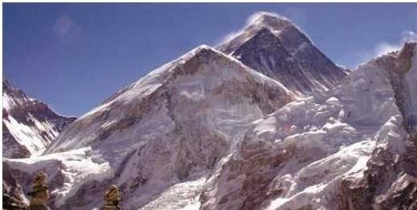
नेपालको उत्तरी भेगमा उच्च पर्वत, तीव्र ढाल, उच्चतम चुचुराहरू, गहिरा घाँटी र खाँचका ठाडा भिरयुक्त भू-स्वरूप भएको तथा निस, सेल, स्लेट, ग्रेनाइट, क्वारजाइट, चून आदि चट्टानबाट निर्मित हिमाली क्षेत्रले नेपालको १५ प्रतिशत भूभाग समेटेको छ। करिब २५ देखि ५० किलोमिटर उत्तर-दक्षिण चौडाइभित्र फैलिएको हिमाली प्रदेश समुद्र सतहदेखि करिब ३,००० मिटरमाथिको उचाइमा अवस्थित छ। हिमालय नेपालको उत्तरपट्टि मात्र नभई उत्तरी नेपाल सरहदबाट दक्षिणतिर हिमाली शृङ्खला देखिने नेपालका धेरै भूभाग छन्। जस्तै : अन्नपूर्ण र गड्गापूर्ण हिमालको उत्तरपट्टि मनाङ, मुस्ताङ आदि नेपालका क्षेत्र पर्छन्। धवलागिरि चुरेन हिमालयको उत्तरमा मुस्ताङ तथा डोल्पाका भूभाग पर्छन्। ती क्षेत्रबाट हिमालय दक्षिणतिर देखिन्छ। विश्वका उच्चतम र मनोरम हिमाली टाकुराहरू नेपालको हिमालय खण्डमा छन्। कञ्चनजङ्घा, जनक, उम्बक, महालङ्गुर, रोल्वालिङ, पुमरी, जुगल, लाङटाङ, गणेश, सेराङ, कुटाङ, मनसिरी, पेरी, लुगुला, दामोदर, नीलगिरि, अन्नपूर्ण, धवलागिरि, मुस्ताङ, गौतम, पालचुङ हमगा, कान्जिरोवा, कान्ति, गोरखा, चाङ्गला, चण्डी, नालाकङ्कर, गुराँस पूर्वदेखि क्रमशः पश्चिमसम्म फैलिएका प्रसिद्ध २८ हिमशृङ्खला हुन्। यी शृङ्खला अधिकतम भोट (तिब्बत)का सीमावर्ती क्षेत्रमा रहेका छन्। हिमाली प्रदेश नदीनालाहरूका कारण कैयौँ ठाउँमा विशृङ्खलित भएको छ।

माछापुच्छे हिमाल, गण्डकी
हिमाली क्षेत्रको आर्थिक गतिविधि सीमित छ। खण्डित कृषिभूमिको अभावमा उब्जनी न्यून हुने हुँदा कृषि नगन्य भए पनि याक, भेडा, च्याङ्ग्रा, घोडा आदि पशुपालन र जडीबुटीमा यो क्षेत्र सम्पन्न छ। ऊनका गर्लैचा, राडी, पाखी बुन्ने घरेलु उद्योगहरू रहेको पाइन्छ। पर्यटन उद्योग, जडीबुटी र पर्यावरण सम्पदा यहाँका महत्वपूर्ण स्रोत हुन्।
यो क्षेत्र अल्पाइन र आर्किटिक जलवायु क्षेत्रअन्तर्गत पर्छ। सगरमाथालाई वि.सं. १९९० (१९३३ इ.सं.) मा Michale Karga ले Third Pole को उपमा दिएका थिए। उचाइ र पर्वतको अवस्थितिअनुसार जलवायु फरक पर्छ। सोलुखुम्बुको ४,४०० मिटर उचाइमा रहेको चुङ्कुङ गाउँमा आलु फल्छ। २,८०० मिटर उचाइमा रहेको मुस्ताङको जोमसोममा दुई सय मिलिमिटर वर्षा हुन्छ। यस्ता उच्च हिमालका खेतीयोग्य जमिन सोलुखुम्बु, मनाङ, मुस्ताङ र डोल्पा जिल्लामा पाइन्छ।
करिब ५,००० मिटरमाथि ६ देखि १२ महिनासम्म हिउँ रहन्छ। लगभग ४,००० मिटरमाथिका
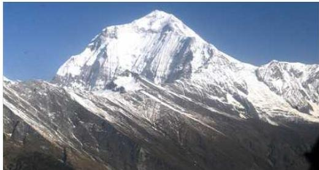
नेपाल परिचय/३
भूभागमा छोटो अवधिको वर्षीयाममा पनि तुसारापात हुन्छ । ४,०००-५,००० मिटरसम्म होचो भाड भाडी (जडीबुटी) पाइन्छ । मुस्ताङ र डोल्पामा प्राकृतिक वनस्पति विशेष कारणले २,८०० मिटर उचाइसम्म पनि हुने गरेको पाइन्छ । करिब १२ प्रतिशत उच्च हिमाली क्षेत्र मनसुनी चरनका लागि उपयुक्त छ । अरू भूभाग ठाडो भिर, ढुङ्गो र ठन्डा हुँदा चरनका लागि उपयुक्त छैन । घाँस पुन: पलाउन समय लाग्ने भएकाले अधिक चरनबाट जोगाउन चरन व्यवस्थापन यहाँको मूल आवश्यकता हो । माटो र जलवायुका दृष्टिले एक प्रतिशतभन्दा कम जमिन मात्रै खेतीका लागि उपयुक्त छ । यातायातको आवश्यक व्यवस्था अभासम्म पनि हुन नसकेका कारण उत्पादनको बजारीकरण गर्न कठिनाइ हुने गरेको छ । नेपालको लगभग १९.७ प्रतिशत (२८,९९,५०० हेक्टर) ओगट्ने उच्च पर्वतको दक्षिणमा मध्यपर्वत र उत्तरमा उच्च हिमाल पर्छ । यस क्षेत्रका सबैजसो मुख्य उपत्यका हिमानीग्रस्त (Glaciated) छन् । नदीले पिँध कटान बढी गरेको फलस्वरूप नदी ढलान (Gradient) ले गल्छेडा र गल्छी (Canyons) बनेका छन् । डाँडाको टुप्पो र उपत्यकाको फेदसम्म २,००० मिटरभन्दा बढी उचाइको भिन्नता छ । यसैले यहाँको एउटै ढलोमा उष्ण, उपोष्ण र न्यानो समशीतोष्ण एवम् चिसो शीतोष्ण बोटबिरुवा पाइन्छन् । यो क्षेत्रको ५० प्रतिशत भाग कुनै पनि खेतीका लागि काम लाग्दैन । बाँकी ५० प्रतिशत भूभागमध्ये ३४ प्रतिशत भूभागमा खेतीका लागि अपर्याप्त पातलो माटो छ भने १६ प्रतिशत भूभागले मात्र खेती धानेको छ । यस्तो २,००,००० हेक्टर जमिनमा पनि ४० प्रतिशतमा मात्र राम्ररी खेती गर्ने गरिन्छ । हिमाली क्षेत्रमा ताप्लेजुङ, सङ्खुवासभा, सोलुखुम्बु, दोलखा, सिन्धुपाल्चोक, रसुवा, मनाङ, मुस्ताङ, डोल्पा, मुगु, हुम्ला, जुम्ला, कालिकोट, बाजुरा, बभ्राङ, दार्चुला धादिङ, रामेछाप, गोरखा, रुकुम (पूर्व) र म्याग्दी गरी २१ जिल्ला पर्दछन् । वि.सं. २०७८ को जनगणनाअनुसार ६.०८ प्रतिशत जनसङ्ख्या हिमाली क्षेत्रमा बसोबास गर्दछन् । हिमाली प्रदेशलाई भौगोलिक दृष्टिकोणले निम्नलिखित तीन उपक्षेत्रमा विभाजन गरी अध्ययन गर्न सकिन्छ :
तालिका नं. १.१ हिमशृङ्खला र प्रमुख हिमटाकुराहरू
| क्र.सं. | हिमशृङ्खला | प्रमुख टाकुरा | उचाइ (मि.) |
|---|---|---|---|
| १ | कञ्चनजङ्घा | कञ्चनजङ्घा कुम्भकर्ण किरातचुली | ८५८६ ७७१० ७३६५ |
| २ | जनक | जोडसाङ जनक | ७४८३ ७०३५ |
४/नेपाल परिचय
| ३ | महालड्गुर | सगरमाथा | ८८४८.८६ |
|---|---|---|---|
| लोप्से | ८५१६ | ||
| मकालु | ८४६३ | ||
| चोओय | ८२०१ | ||
| नुप्से | ७८५५ | ||
| ४ | रोलवालिङ | गौरीशङ्कर | ७१३४ |
| ५ | जुगल | जुगल | ७०५० |
| ६ | लाङटाङ | लाङटाङ लिरुङ | ७२३४ |
| लाङटाङ री | ७२०५.५ | ||
| ७ | गणेश | गणेश | ७४२९.३ |
| ८ | सेराङ (शूजी) | चामर | ७१८७ |
| ९ | मनसिरी | मनास्लु | ८१६३ |
| हिमालचुली | ७८९३ | ||
| १० | पेरी | हिमलुङ | ७१२६ |
| रत्नाचुली | ७०३५ | ||
| ११ | नीलगिरि | नीलगिरि उत्तरी | ७०६१ |
| १२ | अन्नपूर्ण | अन्नपूर्ण प्रथम | ८०९१ |
| गड्गापूर्ण | ७४५५ | ||
| तिलिचो | ७१३४ | ||
| १३ | धवलागिरि | धवलागिरि | ८१६७ |
| चुरेर (पूर्वी) | ७३७१ | ||
| १४ | गुराँस | अपि | ७१३२ |
| सैपाल | ७०३१ |
स्रोत : नेपालको भौगोलिक भूगोल, रामकुमार पाण्डे, विद्या पुस्तक भण्डार, २०४४
मुख्य हिमाली क्षेत्र
हिमालयअन्तर्गतका उच्चतम चुलीहरूकेन्द्रित मुख्य हिमालयमा ८,००० मिटरभन्दा अग्ला हिमचुलीहरू पर्छन् । तटवर्ती हिमालयको दक्षिणतर्फ रहेका बृहत्तर हिमाली शृङ्खलामा ६,००० मिटरभन्दा अग्ला १,३११ चुचुराहरू रहेका छन् । विश्वको सर्वोच्च शिखर सगरमाथा र तेस्रो उच्च हिमशिखर कञ्चनजङ्घाका अतिरिक्त ल्होत्से, मकालु, चो-ओयु, धवलागिरि, मनास्लु, अन्नपूर्णसमेत विश्वका दुई दर्जन चुलीमध्ये नेपालमा करिब डेढ दर्जन हिमचुचुरा रहेका छन् । कञ्चनजङ्घा, खुम्बु, महालड्गुर, रोलवालिङ,
नेपाल परिचय/५
गणेश, गोरखा, अन्नपूर्ण, धवलागिरि, काञ्जिरोवा, अपि र सैपाल हिमशृङ्खलाअन्तर्गत विश्वका १० सर्वोच्च शिखरहरूमध्ये आठओटा हिमशिखर पर्दछन् ।
भित्री हिमाली क्षेत्र
मुख्य हिमालयबाट उत्तर र तिब्बत तटवर्ती क्षेत्रबाट दक्षिणतिर यो क्षेत्र रहेको छ । नदीनिर्मित उपत्यकाहरू उच्च हिमाली क्षेत्रमा निकै रहेका छन् । यहाँ पूराङ्ग, हुम्ला, मुगु, लाङगु, बुढी खोटाङ, केरुङ, न्यानम, रोइंगसार, खुम्बु, कर्मा आदि हिमवेष्टित उपत्यकाहरू छन् । उत्तरमा अग्ला हिमालय र दक्षिणमा होचा पर्वतका बीचमा रहेका यी उपत्यका २,४००-५,००० मिटरसम्मका उचाइमा रहेका छन् । कतैकतै गहिरो खाँच र बेसी रहेका छन् । हुम्ला, जुम्ला, मुगु, डोल्पा, मुस्ताङ र मनाङ वृष्टिछायामा पर्ने हुँदा वर्षा ज्यादै कम हुन्छ । यस भेगमा शुष्क जलवायु पाइन्छ ।
यो पर्वतीय क्षेत्रमा चिसो शीतोष्ण कोणधारी वन हुने हुँदा डालेघाँस प्राय: पाईदैन । यहाँका बासिन्दा खाद्यान्न, लुगा र अन्य सामानको ढुवानी खच्चर, घोडा, चौरी आदि जनावरबाट गर्ने गर्दछन् । जौ, गहुँ, कोदो र आलु ३,००० मिटर उचाइसम्म फल्छ । हिउँदमा ठन्डा हुने हुँदा मानिसहरूको बसोबास यो क्षेत्रमा निकै पातलो छ । हिउँदको चिसो छल्नका लागि बैसी भन्ने तथा अन्य मौसमी प्रकृतिको बसाईसराइ (Seasonal Migration) बढी हुन्छ ।
सीमान्त हिमाली क्षेत्र
यो अन्तरहिमाली शृङ्खला तिब्बतको समानान्तर किनारी क्षेत्र करिब १३० किलोमिटर उत्तरसम्म फैलिएको छ । सरदर ६,००० मिटर उचाइदेखि करिब ७,००० मिटरसम्म रहेको तिब्बती पठारको समस्थली क्षेत्र गड्गा र साङ्ग पो (ब्रह्मपुत्र) को पानीढलो क्षेत्रका रूपमा रहेको छ । उच्च हिमशृङ्खला छिचोली आएकाले यो क्षेत्रका नदी (कालीगण्डकी, अरुण आदि) हिमालयभन्दा पनि पुराना मानिन्छन् । मनाङ, मुस्ताङमा छरिएर रहेका बस्ती छन् र भोट निस्कने भञ्ज्याङहरू निकै पर्छन् । टिपताला (ताप्लेजुङ), पोपटी/हरियाघाँटी (संरतवासया), नाङपा (सोलुखुम्बु), पूर्वी छ्याछु, रसुवागढी, ग्याला (गोर्खा), मुस्ताङ घाँटी, लुगुवा (मनाङ), नाम्जाला (मुगु), यारी (हुम्ला), टिंकर (दार्चुला) महत्वपूर्ण भञ्ज्याङहरू हुन् । वृष्टिछायामा पर्ने भएकाले यो क्षेत्र मूलत: हिमाली मरुभूमिका रूपमा रहेको छ । यसलाई टेथिस हिमाल पनि भनिन्छ ।
तालिका नं. १.२ नेपालका प्रमुख हिमशिखर र तिनको उचाइ
| क्र. सं. | हिमशिखर | उचाइ (मिटर) | हिमशृङ्खला | जिल्ला / प्रदेश |
|---|---|---|---|---|
| १ | सगरमाथा | ८,८४८.८६ | खुम्बु / महालङ्गुर | सोलुखुम्बु / कोशी |
| २ | कञ्चनजङ्घा | ८,५८६ | कञ्चनजङ्घा | ताप्लेजुङ / कोशी |
६ / नेपाल परिचय
| ३ | ल्होत्से | ८,५१६ | खुम्बु / महालड्गुर | सोलुखुम्बु / कोशी |
|---|---|---|---|---|
| ४ | मकालु | ८,४६३ | कुम्भकर्ण | सड्खुवासभा / कोशी |
| ५ | चो ओयु | ८,२०१ | खुम्बु / महालड्गुर | सोलुखुम्बु / कोशी |
| ६ | धवलागिरि | ८,१६७ | धवलागिरि | म्याग्दी / मुस्ताङ / गण्डकी |
| ७ | मनास्लु | ८,१६३ | गणेश | गोरखा / गण्डकी |
| ८ | अन्नपूर्ण | ८,०९१ | अन्नपूर्ण | कास्की / गण्डकी |
| ९ | नुप्से | ७,८५५ | खुम्बु | सोलुखुम्बु / कोशी |
| १० | शान्ति पिक | ७,५९१ | खुम्बु | सोलुखुम्बु / कोशी |
| ११ | लाङटाङ लिरुङ | ७,२३४ | लाङटाङ | रसुवा / बागमती |
| १२ | गणेश हिमाल | ७,१६३ | गणेश | गोरखा, धादिङ / बागमती |
| १३ | पुमोरी | ७,१६१ | खुम्बु / महालड्गुर | सोलुखुम्बु / कोशी |
| १४ | गौरीशङ्कर | ७,१३४ | रोल्वालिङ | दोलखा / बागमती |
| १५ | अपी | ७,१३२ | गुराँस | दार्चुला / सुदूरपश्चिम |
| १६ | माछापुच्छ्रे | ६,९९३ | अन्नपूर्ण | कास्की / गण्डकी |
| १७ | सैपाल | ७,०३१ | अपि सैपाल | बभाङ / सुदूरपश्चिम |
| १८ | काञ्जिरोवा | ६,८८३ | काञ्जिरोवा | डोल्पा / कर्णाली |
| १९ | अमादब्लम | ६,८१२ | खुम्बु / महालड्गुर | सोलुखुम्बु / कोशी |
| २० | जुगल (भैरव टाकुरा) | ६,५३५ | जुगल | सिन्धुपाल्चोक / बागमती |
| २१ | भृकुटी | ६,३६४ | दामोदर | मुस्ताङ / गण्डकी |
| २२ | हिमचुली | ७८९३ | मनसिरी | गोर्खा / लमजुङ / गण्डकी |
(ख) पहाडी प्रदेश
उत्तरमा हिमाल र दक्षिणमा तराईबीच रहेको मध्यभाग पूर्वदेखि पश्चिमसम्म अग्ला-होचा पहाडहरू, फराकिला-साँघुरा उपत्यका, दून, बैंसी तथा टार र गरायुक्त पाखाहरूले घनीभूत छ। दक्षिणमा समुद्री सतहबाट करिब ३०० मिटरदेखि उत्तरमा ३,००० मिटरसम्मका भूभागहरू ओगटेर ७५ किलोमिटरदेखि १२५ किलोमिटरसम्म चौडा भई विस्तारित भएका छन्। सबैभन्दा बढी भूभाग यस प्रदेशले ओगटेको हुँदा नेपाललाई पहाडी मुलुक पनि भनिन्छ। यहाँ विशेषतः निस, स्लेट, भेल र ग्रेनाइट जस्ता चट्टानहरू पाइन्छन्। यस
नेपाल परिचय/७
क्षेत्रमा इलाम, पाँचथर, तेहथुम, धनकुटा, भोजपुर, खोटाङ, ओखलढुङ्गा, काभ्रेपलाञ्चोक, नुवाकोट, तनहुँ, लमजुङ, कास्की, स्याङ्जा, पर्वत, पाल्पा, गुल्मी, अर्घाखाँची, बागलुङ, प्युठान, रोल्पा, रुकुम (पश्चिम), सल्यान, जाजरकोट, दैलेख, अछाम, डोटी, डडेलधुरा र बैतडी गरी २८ ओटा जिल्ला पर्दछन् । वि.सं. २०७८ को जनगणनाअनुसार ४०.३ प्रतिशत जनसङ्ख्या पहाडी क्षेत्रमा बसोबास गर्दछन् ।
पहाडी प्रदेशलाई निम्न तीन श्रेणीमा विभाजन गर्न सकिन्छ :
चुरे पर्वत श्रेणी
नेपालको दक्षिणमा अवस्थित पूर्वदेखि पश्चिमसम्म फैलिएको हिमालय पर्वतमालाभन्दा निकै पछि विकसित भएको समुद्र सतहदेखि ६१० देखि १८७२ मिटरको उचाइसम्म भएको पर्वतमालालाई चुरे पर्वत भनिन्छ । यसलाई सामान्यतः चुरिया वा चुरे पर्वत भनिन्छ ।
बाह्य हिमालय भनिने यो पर्वत शिवालिकको नामले समेत प्रसिद्ध छ । यो नवीनतम् पर्वत हो । नेपालको पश्चिममा अग्लो र पूर्वमा होचो हुँदै बिलाएको चुरे महाकालीदेखि कोशीसम्म छुट्टै श्रेणी भएर फैलिएको छ । कोशीपूर्व थुम्कीको रूपमा मोरङ र भापाको उत्तरमा मैनाचुली, चुलाचुली छन् । चुरे पर्वत श्रेणीका धेरै भाग जड्गलले ढाकेको छ । दाङ, देउखुरी, राप्ती, चितवन आदि उपत्यका दून अवोनन्त (Synclinal) प्रकृतिका भाग छन् । यहाँ उपोष्ण जलवायु पाइन्छ । यो क्षेत्रले १२.७ प्रतिशत (१८,७९,००० हेक्टर) ढाकेको छ । जलाधार क्षेत्रको उचाइ भिन्नता ७०० मिटरभन्दा कम छ । यहाँको माटो वर्षाको पानी थाम्न सक्ने खालको छैन । यो क्षेत्रमा ह्वात्त बाढी आएजस्तो वर्षामा खोलाहरू बन्छन् । वातावरणीय दृष्टिले चुरे पर्वत श्रेणी अत्यन्त संवेदनशील मानिएको छ ।
सतही ढुङ्गाले शिवालिक क्षेत्रको पर्वतीय भूभागलाई नियन्त्रण गरेको छ । यो शृङ्खला कमजोर एवम् अस्थिर छ । करिब ९३ प्रतिशतभन्दा बढी भूभाग ज्यादै ठाडो र अप्ठेरो भएकाले खेतीका लागि उपयुक्त छैन । शिवालिक क्षेत्रमा खेती हुन सक्ने जमिन करिब २४ प्रतिशत (५,२९,६०० हेक्टर) छ । दून उष्ण क्षेत्र भए पनि यहाँको माटो तराईको भन्दा भिन्न छ । यो क्षेत्रमा फलफूल र तरकारी कमै हुन्छ । यस क्षेत्रमा अतिक्रमणले वनविनाश, भूक्षय र प्राकृतिक वातावरण खलबलिन पुगेको छ । शिवालिक क्षेत्रको दक्षिण एउटा लामो पेटी पूर्वदेखि पश्चिमसम्म फैलिएको छ । यो क्षेत्र बालुवा, कङ्कङ, ढुङ्गा र खुकुला खस्रा पदार्थले बनेको छ । खुकुलो चट्टानले बनेको भाबरमा सालको वनजङ्गल पाइन्छ । गहिरो घाँटीमा नदीले थुपारेका माटाको भागले बनेका मैदानहरू गड्गा मैदानकै अंशका रूपमा रहेका छन् ।
महाभारत श्रेणी
पूर्व-पश्चिम फैलिएको समुद्र सतहदेखि करिब १२,००० फिटसम्म उचाइको यो पहाडी भाग नेपालको महत्वपूर्ण भाग हो । यो भाग सेल, स्यान्डस्टोन, लाइमस्टोन, मार्बल, स्लेटजस्ता चट्टानयुक्त छ । दुलादुला चार नदी कडा चट्टाने पहाड छेडेर बगेका छन् । कर्णालीले चिसापानीमा, कालीगण्डकीले देवघाटमा, त्रिशूलीले जुगरीमा र कोशीले चतरामा छेडो बनाएको छ । होचो हिमालय (Lesser Himalaya) को नामले पनि यो पर्वत चिनिने
८ / नेपाल परिचय
गर्छ। यहाँको हावापानी रमणीय र स्वस्थकर हुने हुँदा महाभारत पर्वत श्रेणीलाई नेपालको Hill-Station पनि भनिन्छ। सैलुङ, ट्याम्के, जैथक, फूलचोकी, शिवपुरी, छिम्केश्वरी, दामन, स्वर्गद्वारी, साकिने डाँडा, खौंच आदि यहाँका प्रमुख शिखर हुन्। पूर्वी नेपालका तुलनामा पश्चिमको भाग बढी ठाडो छ।
मध्यभूमि श्रेणी
महाभारत पर्वत श्रेणी र हिमालय पर्वत श्रेणीहरूका बीचमा रहेका ठुला-ठुला टार, बैंसी र उपत्यकाहरूलाई मध्यभूमि भनिन्छ। यसअन्तर्गत काठमाडौँ, पोखरा, त्रिशूली, पाँचखाल, माडी जस्ता उपत्यकाहरू पर्दछन्। नेपालका चमेलिया (सुदूरपश्चिम), त्रिशूली (मध्य), सुनकोशी र अरुण तथा तमोर नदीद्वारा निर्मित ठुला उपत्यका एवम् समथर र उर्वरक्षेत्र मध्यभूमिअन्तर्गत पर्छन्। यहाँ तुम्मिल्डटार (सङ्खुवासभा), रुम्जाटार (ओखलढुङ्गा), बेल्टार (उदयपुर) मङ्गलटार (काभ्रेपलाञ्चोक), खुमलटार (ललितपुर), बड्डार (नुवाकोट), सल्यानटार (धादिङ), खैरेनीटार (तनहुँ), चौरजहारीटार (रुकुम) जरायोटार (भोजपुर), खरानीटार (नुवाकोट) र पालुङ्टार (गोर्खा) जस्ता टार पनि छन्।
मध्यपर्वतीय क्षेत्रले नेपालको २९.५ प्रतिशत (४३,५०,३०० हेक्टर) जमिन ढाकेको छ। यहाँको जलवायु वर्षभरि कृषिका लागि उपयुक्त छ। तापक्रम न बढी न घटी मध्यम प्रकारको छ। जनसङ्ख्या वृद्धिले गर्दा भूमिमाथि बढी चाप परेको छ। यहाँ ८७ प्रतिशत खेतीयोग्य भूमि पर्वतीय पाखाका रूपमा रहेका छन्। मध्यपहाडी भूमिको गराखेती प्रविधि नै स्थापित प्रविधि हो। कृषि, वन र बागवानीबाट यसलाई सघाउ हुने गरेको छ। मध्यपहाडमा प्रिक्याम्ब्रियन (Precambraian), फाइलाइट्स (Phyllites), क्वार्टजाइट्स (Quartzites), अभ्रख, शिष्ट र ग्रेनाइट (Granite) जस्ता विविध चट्टान पाइन्छन्। मध्यपहाडको दक्षिण किनारामा प्राय: महाभारत लेकजस्ता उठेका (Uplifted) पर्वत छन्। यो भाग ऋतुश्रय भएका ग्रेनाइट, चुनढुङ्गा, डोलोमाइट, सेल, स्यान्डस्टोन, स्लेट र क्वार्टजाइटले बनेको छ। शिवालिक जस्तो भूक्षयको प्रभाव छैन। यस क्षेत्रका कडा चट्टान भूपाषाण भएका भाग ठाडो भिर (३५ डिग्री ढलोभन्दा बढी) र पातलो माटाले ढाकेको हुनाले खेतीका लागि उपयुक्त छैन।
पहाडी प्रदेशमा किराँत (राई, लिम्बू), तामाङ, मगर, गुरुङ, बाहुन, क्षेत्री, नेवार आदि विभिन्न जातिका मानिसहरू बसोबास गर्छन्। पहाड आफैँमा विविधतायुक्त भएकाले यहाँको घर निर्माण, लवाइखवाइ, पेसा आदिमा भिन्नता पाइन्छ। फलफूल खेती र जडीबुटीका लागि बढी उपयुक्त वातावरण पाइन्छ। पहाडका दक्षिण पाखामा बस्ती र खेती धेरै भेटिन्छन्। यस भेकमा इलाम, धनकुटा, चैनपुर, भोजपुर, ओखलढुङ्गा, चरीकोट, बनेपा, काठमाडौँ, पोखरा, जुम्ला, सल्यान, सिलगढीजस्ता साना-ठुला बस्ती छन्। पहाडी क्षेत्रको कुल बस्तीमध्ये १००० मिटरसम्मको उचाइमा १६.३७ प्रतिशत, १००१-२००० मिटरसम्ममा ५९.०९ प्रतिशत र यसभन्दा माथि ३००० मिटरसम्ममा
नेपाल परिचय/९
१९.९९ प्रतिशत बस्तीहरू रहेको पाइन्छ। सर्वाधिक बस्तीहरू १००१-२००० मिटरसम्ममा केन्द्रित छन्।
आर्थिक क्रियाकलापमा पहाडी क्षेत्र मूलतः फलफूल र खाद्यान्नका लागि उपयुक्त क्षेत्र हो। धान, मकै, गहुँ र गेडागुडीमा यो क्षेत्र विविधतायुक्त उत्पादनशील क्षेत्र भए पनि उर्वर भूमिको कमीले गर्दा खाद्यान्न अभाव हुने गर्दछ।
काठमाडौँ उपत्यका
काठमाडौँ, ललितपुर र भक्तपुर गरी तीन जिल्ला काठमाडौँ उपत्यकामा समावेश गरिएका छन्। भौगोलिक, सामाजिक सांस्कृतिक तथा प्रशासनिक दृष्टिकोणले समेत एक छुट्टै पहिचान बोकेको काठमाडौँ उपत्यका समुद्री सतहबाट करिब १३३७ मि. उचाइमा रहेको छ। वि.सं. २०७८ को जनगणनाअनुसार काठमाडौँ उपत्यकामा कुल जनसङ्ख्याको १०.३ प्रतिशत जनसङ्ख्या बसोबास रहेको छ।
तालिका नं. १.३ पहाडी प्रदेशमा अवस्थित मुख्य उपत्यकाहरू
| उपत्यका | उचाइ (मि.) | जिल्ला |
|---|---|---|
| काठमाडौँ | १३३७ | काठमाडौँ, ललितपुर र भक्तपुर |
| त्रिशूली | ५७९ | नुवाकोट |
| पोखरा | ८१९ | कास्की |
| पाँचखाल | ८७१ | काभ्रेपलाञ्चोक |
| बनेपा | १५५४ | काभ्रेपलाञ्चोक |
| पाटन | १५३४ | बैतडी |
| धुनिबैसी | ८५० | धादिङ |
| दाङ | ६६३ | दाङ |
| सुर्खेत | ६६४ | सुर्खेत |
| उदयपुर | ३६० | उदयपुर |
स्रोत : नेपाल परिचय, २०८१
(ग) तराई प्रदेश
पहाडी भागदेखि दक्षिणतर्फ भारतको सीमासम्म पूर्व-पश्चिम फैलिएको नेपालको समतल भूभाग तराई प्रदेश हो। यसलाई मधेश पनि भनिन्छ। यस प्रदेशको चौडाइ २५ किलोमिटरदेखि ३० किलोमिटरसम्म छ। तराईको सिरान भाबर र चुरे हो। उत्तरबाट दक्षिणतिर होचो हुँदै जानु तराईको लक्षण हो। यो क्षेत्र उष्ण क्षेत्र हो। यहाँको जमिन प्रायः समथल छ। सन् १९६० सम्म यो क्षेत्रमा थारुहरूको बाहुल्य थियो। औलो उन्मूलनपछि दून, उपत्यका, पहाडलगायत अन्य क्षेत्रका जनताको पनि केन्द्रस्थल भई यो क्षेत्र बहुजातीय
१०/नेपाल परिचय
क्षेत्र बन्यो । समुद्री सतहबाट ६० देखि ६०० मिटरको उचाइमा रहेको छ । यसलाई नेपालको अन्नभण्डार पनि मानिन्छ । यस क्षेत्रअन्तर्गत भापा, मोरङ, सुनसरी, सप्तरी, सिराहा, धनुषा, महोत्तरी, सर्लाही, रौतहट, बारा, पर्सा, नवलपरासी (बर्दघाट सुस्ता पश्चिम), रुपन्देही, कपिलवस्तु, बाँके, बर्दिया, कैलाली र कञ्चनपुर गरी १८ जिल्ला पर्दछन् । वि.सं. २०७८ को जनगणनाअनुसार तराईमा ५३.६ प्रतिशत जनसङ्ख्या बसोबास गर्दछन् । तराई प्रदेशलाई निम्न तीन श्रेणीमा विभाजन गर्न सकिन्छ :
मध्य तराई
देशको दक्षिणी भागमा दक्षिणतर्फ होचिँदै गएको भूभागलाई मध्य तराई भनिन्छ । मिहिन पाँगो माटाले बनेको यो क्षेत्र उर्वर रहेको छ । चितवनको दक्षिणमा सोमेश्वर पर्वतमाला र देउखुरीको दक्षिणमा डुन्डुवा पर्वतमालाले काटेकाले खास तराईलाई तीन भाग (पूर्वी, मध्य र पश्चिम) मा बाँड्ने पनि गरिएको छ । भापा, मोरङ, सप्तरी, सिराहा, धनुषा, महोत्तरी, रौतहट, बारा, पर्साको दक्षिण, परासीको पश्चिम दक्षिण, रुपन्देही र कपिलवस्तुको दक्षिण र बाँके, बर्दिया, कैलाली र कञ्चनपुरको दक्षिणी क्षेत्रलाई नेपालको मध्य तराई भनिन्छ ।
भाबर क्षेत्र
मध्य तराईको उत्तर र चुरे पर्वतमालाको दक्षिणमा समुद्री सतहदेखि ३८० मिटरको उचाइसम्म फैलिएको साँघुरो पेटीलाई भाबर क्षेत्र भनिन्छ । १२.८ कि.मि. देखि १६ कि.मि. चौडाइ भएको भाबर प्रदेशले मुलुकको कुल क्षेत्रफलको ४.५ प्रतिशत भूभाग ओगटेको छ ।
भित्री मधेश
चुरे र महाभारत पर्वत श्रेणीको बीचमा समुद्र सतहदेखि ६१० मिटरको उचाइसम्म चारैतिर पहाड पर्वतले घेरिई फैलिएका विशाल फाँटलाई भित्री मधेश वा दून क्षेत्र भनिन्छ । ३२ देखि ६४ कि.मि. सम्म लम्बाइ र १६ कि.मि. सम्म चौडाइ भएको यो क्षेत्रले मुलुकको कुल क्षेत्रफलको ८.५ प्रतिशत भूभाग समेटेको छ । भित्री मधेशलाई चार क्षेत्रमा बाँडिएको छ । यसमा उदयपुर र सिन्धुली उपत्यकालाई पूर्वी भित्री मधेश, मकवानपुर, चितवन र परासी (बर्दघाट सुस्ता पूर्व)लाई मध्य भित्री मधेश, दाङ देउखुरीलाई पश्चिमी भित्री मधेश र सुर्खेत उपत्यकालाई मध्यपश्चिम भित्री मधेश भनिन्छ ।
तालिका नं. १.४ जिल्लाहरूको वर्गीकरण
| हिमाली जिल्लाहरू | ताप्लेजुङ, सङ्खुवासभा, सोलुखुम्बु, दोलखा, सिन्धुपाल्चोक, रसुवा, मनाङ, मुस्ताङ, डोल्पा, जुम्ला, मुगु, हुम्ला, कालिकोट, बाजुरा, बभ्राङ, दार्चुला, धादिङ, रामेछाप, गोर्खा, रुकुम (पूर्व), म्याग्दी | २१ जिल्ला |
|---|---|---|
नेपाल परिचय/११
| पहाडी जिल्लाहरू | पाँचथर, इलाम, तेहथुम, धनकुटा, भोजपुर, ओखलढुङ्गा, खोटाङ, काभ्रेपलाञ्चोक, नुवाकोट लमजुङ, तनहुँ, कास्की, स्याङ्जा, पर्वत, बागलुङ, पाल्पा, अघाँखाँची, गुल्मी, रुकुम (पश्चिम) रोल्पा, प्युठान, सल्यान, जाजरकोट, दैलेख, डोटी, अछाम, बैतडी, डडेलधुरा | २८ जिल्ला |
|---|---|---|
| भित्री मधेशका जिल्लाहरू | उदयपुर, मकवानपुर, चितवन, सिन्धुली, नवलपरासी (बर्दघाट सुस्तापूर्व), दाङ, सुखैत | ७ जिल्ला |
| तराईका जिल्लाहरू | भापा, मोरङ, सुनसरी, सप्तरी, सिरहा, धनुषा, महोत्तरी, सलाँही, रीतहट, बारा, पर्सा, नवलपरासी (बर्दघाट सुस्तापश्चिम), रूपन्देही, कपिलवस्तु, बाँके, बर्दिया, कैलाली, कञ्चनपुर | १८ जिल्ला |
| काठमाडौँ उपन्यकाका जिल्लाहरू | काठमाडौँ, ललितपुर, भक्तपुर | ३ जिल्ला |
स्रोत : स्थानीय सरकार सञ्चालन ऐन, २०७४
१.२.२ नदीको आधारमा नेपालको विभाजन
(क) कोशी क्षेत्र
पूर्वमा कञ्चनजङ्घा हिमालदेखि पश्चिममा लाङटाङ हिमाल (गोसाईंस्थान) बीचको भागलाई कोशी नदी प्रणाली क्षेत्र भनिन्छ। यो हिमाली पूर्वगामी नदी (antecedent river) हो। तमोर, अरुण, लिखु, दूधकोशी, तामाकोशी, सुनकोशी र इन्द्रावती मिलेर सप्तकोशी नदी बनेको छ। यो नेपालको सबैभन्दा ठुलो नदी हो। यो नदीको कुल ७२० कि.मि. मध्ये २०० कि.मि. नेपालमा पर्दछ। लामो हुनुका साथै जलप्रवाह क्षमता औसत १,५०० M³ (चतरा) क्युबिक मिटर प्रतिसेकेन्ड रहेको छ। यस नदीबाट २२,००० मेगावाटसम्म विद्युत् निकाल्न सकिने अनुमान गरिएको छ। नेपालको कोशी नदी प्रणालीको प्रभाव क्षेत्र ३१,६०० वर्षसम्म छ (बज्राचार्य र अन्य २००७)। कोशी नदीको प्रभाव क्षेत्र भन्डै ६० हजार वर्ग कि.मि. रहेको छ। सप्तकोशी नदीको सबैभन्दा ठुलो सहायक नदी अरुण हो भने सबैभन्दा सानो नदी लिखु हो।
(ख) गण्डकी क्षेत्र
पूर्वमा लाङटाङ हिमालदेखि पश्चिममा धवलागिरि हिमालसम्मको गण्डकी नदी प्रभावित क्षेत्रलाई गण्डकी प्रदेश भनिन्छ। गण्डकी नदीका सात प्रमुख सहायक नदीहरू त्रिशूली, बुढीगण्डकी, दरौंदी, मादी, मर्स्याङ्दी, सेती र कालीगण्डकी हुन्। गाण्डव ऋषिको नामबाट
१२/नेपाल परिचय
नामकरण गरिएको मानिएको यस नदीलाई चितवन जिल्लामा आएपछि (देवघाटभन्दा तल) नारायणी नदीको नामले चिनिन्छ। यो नदी नेपालको करिब मध्यभागमा उत्तर-दक्षिण भएर बन्दछ। जसको प्रवाह क्षेत्र ३३,००० वर्ग कि.मि. भन्दा बढी रहेको छ। करिब ३३८ कि.मि. लामो यस नदीको विद्युत् क्षमता करिब २१,००० मे.वा. रहेको मानिएको छ। यसका सहायक नदीहरूमध्ये कालीनण्डकी सबैभन्दा ठुलो र दरौँदी सबैभन्दा सानो हो। नेपालको सबैभन्दा गहिरो यो नदीले प्रतिसेकेन्ड औसत १,७१३ क्यु.मि. पानी प्रवाह गर्दछ।
(ग) कर्णाली क्षेत्र
पूर्वमा धवलागिरि हिमालदेखि पश्चिममा व्यास हिमालबीचको भू-भागलाई कर्णाली नदी प्रभावित क्षेत्रलाई कर्णाली प्रदेश भनिन्छ। कर्णाली नदीका सात प्रमुख सहायक नदीहरू हुम्ला कर्णाली, मुगु कर्णाली, ठूली भेरी, सानी भेरी, तिला, बुढीनड्गा र सेती नदी हुन्। यसलाई नेपालको सबैभन्दा लामो नदी पनि भनिन्छ। यो नदी भारतमा पुगेपछि घाघैरा र सरयू नामले समेत चिनिन्छ। यो नदी करिब ४२,००० वर्ग.कि.मि. क्षेत्रफल समेटेर बन्दछ। नेपालभित्र करिब ५०७ कि.मि. लामो यस नदीको विद्युत् उत्पादन क्षमता ३२,००० मे.वा. रहेको मानिएको छ। यो नदीको औसत जलप्रवाह क्षमता प्रतिसेकेन्ड १,३१६ क्यु.मि. रहेको छ।
१.२.३ हावापानीका आधारमा नेपालको विभाजन
नेपालको हावापानीलाई भौगोलिक बनावट र उचाइका आधारमा पाँच भागमा विभाजन गर्न सकिन्छ :
(क) उपोष्ण मनसुनी हावापानी (Sub Tropical Monsoon Climate)
अर्धोष्ण र उपोष्ण हावापानी भनिने यस्तो हावापानी नेपालको तराई, भाबर, दून र चुरे क्षेत्रको १,२०० मिटर (४,००० फिट) सम्मको उचाइमा पाइन्छ। ग्रीष्मयाममा यहाँको तापमान ३८ देखि ४२ डिग्री सेन्टिग्रेडसम्म पुग्दछ भने शीतकालमा १५ देखि ५ डिग्रीसम्म ओलिन्छ। वर्षा ऋतुमा हिन्द महासागरको बड्गालको खाडीबाट आउने मनसुनी हावाले वर्षा गराउने गर्दछ। वर्षा सामान्यता पूर्वबाट पश्चिम घट्दै जाने र उत्तरबाट दक्षिण बढ्दै जाने भएबाट पूर्वी तराईभन्दा पश्चिमी तराई प्रदेशमा अधिक गर्मी हुन्छ। विशेषतः भैरहवा, नेपालगन्ज तथा कैलालीलगायतका तराई क्षेत्रमा अधिक गर्मी हुन्छ। यसैगरी दाङ, सुर्खेतजस्ता भित्री मधेशमा पनि गर्मी धेरै नै हुन्छ।
(ख) न्यानो समशीतोष्ण हावापानी (Warm Temperate Climate)
चुरे पहाड र महाभारत पर्वतको १,२०० देखि २,१०० मिटर (४,०००-७,००० फिट) सम्मको उचाइमा पाइने यस प्रकारको हावापानीमा ग्रीष्मयाममा न्यानो हुन्छ भने शिशिरमा बढी ठन्डा हुन्छ। ग्रीष्म ऋतुमा तापक्रम २४ देखि ३१ डिग्री सेन्टिग्रेडसम्म पुग्छ भने हिउँदमा ० डिग्री से. सम्म ओलिन्छ। नेपालमा पानी पानें मनसुनी हावा दक्षिणी भागबाट बने हुँदा दक्षिणको भिरालो ठाउँमा २५० सेन्टिमिटरसम्म वर्षा हुन्छ
नेपाल परिचय/१२
भने उत्तरतर्फको भिरालो पाखामा १०० सेन्टिमिटरसम्म वर्षा हुन्छ ।
(ग) ठन्डा समशीतोष्ण हावापानी (Cool Temperate Climate)
महाभारत पर्वत शृङ्खलाको २,१०० देखि ३,३५० मिटर (७,०००-११,००० फिट) सम्मको उचाइमा पाइने यस्तो हावापानीमा ग्रीष्म ऋतुमा न्यानो हुन्छ भने हिउँदमा निकै जाडो हुन्छ । यहाँको तापक्रम ग्रीष्ममा १५° देखि २०° सेन्टिमेटरसम्म पुर्दछ भने हिउँदमा ०° सेन्टिमेटरसम्म ओलिन्छ । यहाँ वर्षामा १० सेन्टिमिटरसम्म पानी पर्दछ भने हिउँदमा हिउँ वर्षिन्छ । न्यून तापक्रम र न्यून वर्षाको कारणले यहाँ खेतिपाती अत्यन्तै कम हुन्छ । यहाँको जनजीवन कष्टकर भए पनि स्वास्थ्यको दृष्टिले यस्तो हावापानी उपयुक्त मानिन्छ ।
(घ) लेकाली हावापानी (Alpine Climate)
नेपालमा समुद्री सतहदेखि ३,३५० देखि ५,००० मिटर (११,०००-१६,००० फिट) उचाइसम्मको हिमाली क्षेत्रको ठन्डा हावापानीलाई लेकाली हावापानी भनिन्छ । यहाँको तापक्रम चैत, वैशाख, जेठमा १०° सेन्टिमेटरसम्म पुर्दछ भने अरू समयमा (९ महिनाजति) ० डिग्री सेन्टिमेटरभन्दा तल नै रहन्छ । यहाँ वर्षामा ३० मिलिमिटरसम्म वर्षा हुन्छ । यहाँ खेतीपाती हुँदैन, तर यहाँका ठूला हिमाली फाँटहरूमा पशुचरन गराइने हुँदा यो ठाउँ पशुपालन र पर्यटकीय गतिविधि सञ्चालनका लागि उपयुक्त छ ।
(ङ) ध्रुवीय वा हिमाली हावापानी (Tundra Climate)
हिमाली क्षेत्रको अत्यन्तै चिसो र शुष्क हावापानीलाई हिमाली, ध्रुवीय वा ठन्डा हावापानी भनिन्छ । यहाँ सघैजसो हिमपात भइरहन्छ भने वर्षाका रूपमा हिउँ नै पर्दछ । ५,००० हजार मि. (१६००० फिट) भन्दा माथिको भूभागको तापक्रम शून्य डिग्री सेन्टिमेटरभन्दा कम हुने हुँदा यहाँ मध्याह्नपछि हिउँको भीषण हुरी चल्दछ । यहाँको हावापानीलाई हिमाली मरुभूमि जलवायु पनि भन्ने गरिन्छ ।
१.३ नेपालको राजनीतिक विभाजन (सङ्घ, प्रदेश र स्थानीय तह)
१.३.१ सङ्घ
सङ्घीय लोकतान्त्रिक गणतन्त्र नेपालको मूल संरचना सङ्घ, प्रदेश र स्थानीय तह गरी तीन तहको हुने व्यवस्था छ । सङ्घीय संरचनाको सबैभन्दा माथिल्लो एकाइको रूपमा रहने सङ्घीय तहलाई सङ्घका रूपमा परिभाषित गरिएको छ । सङ्घीय सरकारलाई नेपाल सरकारको नामले पनि चिनिन्छ । नेपालको संविधानले अनुसूची-५ मा सङ्घको अधिकारको सूचीको व्यवस्था गरेको छ । त्यस्तो अधिकारको प्रयोग संविधान र सङ्घीय कानुनबमोजिम हुनेछ । त्यसैगरी अनुसूची-७ मा भएको साभा अधिकारको सूची र अनुसूची-९ बमोजिमको सङ्घ, प्रदेश र स्थानीय तहको साभा अधिकार सूचीको प्रयोग पनि सङ्घमार्फत हुने गर्दछ । साथै, अवशिष्ट अधिकारको प्रयोग सङ्घीय सरकारले गर्ने व्यवस्था गरेको छ ।
१.३.२ प्रदेश
संविधानबमोजिम सङ्घीय एकाइमा विभाजन गरिएको नेपालको सङ्घीय एकाइको क्षेत्र
१४/नेपाल परिचय
र स्वरूपलाई प्रदेशका रूपमा परिभाषित गरिएको छ। नेपालको सँविधानको अनुसूची-४ ले ७ प्रदेश र सम्बन्धित प्रदेशमा रहने जिल्लाहरूको बारेमा स्पष्ट गरेको छ। जसअनुसार सात प्रदेशलाई निम्नबमोजिम सङ्क्षिप्त चर्चा गरिएको छ :
कोशी प्रदेश
यस प्रदेशको पूर्वतर्फ भारतको पश्चिम बंगाल र सिक्किम राज्य, दक्षिणतर्फ बिहार राज्य, उत्तरतर्फ चीनको स्वशासित क्षेत्र तिब्बत तथा पश्चिमतर्फ मधेश प्रदेश र बागमती प्रदेश पर्दछन्। कोशी प्रदेशमा ताप्लेजुङ, पाँचथर, इलाम, सङ्खुवासभा, तेहथुम, धनकुटा, भोजपुर, खोटाङ, सोलुखुम्बु, ओखलढुङ्गा, उदयपुर, भापा, मोरङ र सुनसरी गरी १४ जिल्ला रहेका छन्। यस प्रदेशको ठुलो जिल्ला ताप्लेजुङ (३,६४६ वर्ग कि.मि.) र सानो जिल्ला तेहथुम (६७९ वर्ग कि.मि.) रहेका छन्। हाल यस प्रदेशको राजधानी विराटनगर (मोरङ) रहेको छ। राष्ट्रिय जनगणना २०७८ का अनुसार यस प्रदेशमा ११,९१,५५६ परिवार सङ्ख्या छ भने कुल जनसङ्ख्या ४९,६१,४१२ (पुरुष २४,१७,३२८ र महिला २५,४४,०८४ रहेको छ। जातीय तथा भाषिक विविधता रहेको यस प्रदेशमा मुख्य रूपमा ब्राह्मण, क्षेत्री, राई, लिम्बू, थारू, लेप्चा, तामाङ, गुरुङ, मेचे, कोचे, यादव, राजवंशीलगायतका जातिहरूको बसोबास रहेको छ भने नेपाली, मैथिली, किराँती, तामाङ, लिम्बू, गुरुङ, लेप्चा, मगर र थारू भाषा मुख्य रूपमा बोलिन्छन्।
मधेश प्रदेश
यस प्रदेशको पूर्वतर्फ कोशी प्रदेश, दक्षिणतर्फ भारत, उत्तरतर्फ कोशी प्रदेश र बागमती प्रदेश र पश्चिमतर्फ बागमती प्रदेश रहेका छन्। मधेश प्रदेशमा सन्तरी, सिराहा, धनुषा, महोत्तरी, सर्लाही, रौतहट, बारा र पर्सा गरी आठ जिल्ला रहेका छन्। यस प्रदेशको ठुलो जिल्ला सन्तरी (१,३६३ वर्ग कि.मि.) र सानो जिल्ला महोत्तरी (१,००२ वर्ग कि.मि.) हुन्। यस प्रदेशको राजधानी जनकपुर (धनुषा) रहेको छ।
राष्ट्रिय जनगणना २०७८ का अनुसार यस प्रदेशमा ११,५६,७१५ परिवार सङ्ख्या छ भने कुल जनसङ्ख्या ६१,१४,६०० (पुरुष ३०,६५,७५१ र महिला ३०,४८,८४९ रहेको छ। जातीय तथा भाषिक विविधता रहेको यस प्रदेशमा मुख्य रूपमा यादव, गुप्ता, दास, थारू, राजवंशी, मुसलमानलगायतका जातिहरूको बसोबास रहेको छ भने मैथिली, बञ्जिका, अवधी, उर्दु, हिन्दी, थारू र नेपाली आदि भाषा बोलिन्छन्।
बागमती प्रदेश
यस प्रदेशको पूर्वतर्फ कोशी प्रदेश, पश्चिमतर्फ गण्डकी प्रदेश, उत्तरमा चीन र दक्षिणतर्फ मधेश प्रदेश र भारत रहेका छन्। बागमती प्रदेशमा दोलखा, रामेछाप, सिन्धुली, काभ्रेपलाञ्चोक, सिन्धुपाल्चोक, रसुवा, नुवाकोट, धादिङ, चितवन, मकवानपुर, भक्तपुर, ललितपुर, काठमाडौँ गरी १३ जिल्ला रहेका छन्।
यस प्रदेशको ठुलो जिल्ला सिन्धुपाल्चोक (२,५४२ वर्ग कि.मि.) र सानो जिल्ला भक्तपुर (११९ वर्ग कि.मि.) रहेका छन्। यस प्रदेशको राजधानी हेटौंडा (मकवानपुर) रहेको छ।
नेपाल परिचय/१५
राष्ट्रिय जनगणना २०७८ का अनुसार यस प्रदेशमा १५,७०,९२७ परिवार सङ्ख्या छ भने कुल जनसङ्ख्या ६१,१६,८६६ (पुरुष ३०,४८,६८४ र महिला ३०,६८,१८२ रहेको छ। जातीय तथा भाषिक विविधता रहेको यस प्रदेशमा मुख्य रूपमा तामाङ, ब्राह्मण, क्षेत्री, नेवारलगायतका जातिहरूको बसोबास रहेको छ भने नेपाली, नेपाल, तामाङ भाषा मुख्य रूपमा बोलिन्छन् ।
गण्डकी प्रदेश
गण्डकी प्रदेशको पूर्वतर्फ बागमती प्रदेश, पश्चिमतर्फ कर्णाली प्रदेश र लुम्बिनी प्रदेश, उत्तरमा चीन र दक्षिणतर्फ लुम्बिनी प्रदेश र भारतको बिहार राज्यसँग सिमाना जोडिएको छ ।
गण्डकी प्रदेशमा गोरखा, लमजुङ, तनहुँ, कास्की, मनाङ, मुस्ताङ, पर्वत, स्याङ्जा, म्याग्दी, बागलुङ र नवलपरासी (बर्दघाट सुस्तापूर्व) गरी ११ जिल्ला रहेका छन् ।
यस प्रदेशको ठुलो जिल्ला गोर्खा (३,६१० वर्ग कि.मि.) र सानो जिल्ला पर्वत (४९४ वर्ग कि.मि.) रहेका छन् । यस प्रदेशको राजधानी पोखरा (कास्की) रहेको छ ।
राष्ट्रिय जनगणना २०७८ का अनुसार यस प्रदेशमा ६,६२,४८० परिवार सङ्ख्या छ भने कुल जनसङ्ख्या २४,६६,४२७ (पुरुष ११,७०,८३३ र महिला १२,९५,५९४ रहेको छ । जातीय तथा भाषिक विविधता रहेको यस प्रदेशमा मुख्य रूपमा ब्राह्मण, क्षेत्री, गुरुङ, मगरलगायतका जातिहरूको बसोबास रहेको छ भने नेपाली, गुरुङ, मगर भाषा मुख्य रूपमा बोलिन्छन् ।
लुम्बिनी प्रदेश
यस प्रदेशको पूर्वतर्फ गण्डकी प्रदेश, पश्चिमतर्फ कर्णाली प्रदेश र सुदूरपश्चिम प्रदेश उत्तरतर्फ गण्डकी प्रदेश र कर्णाली प्रदेश र दक्षिणतर्फ भारत पर्दछ ।
लुम्बिनी प्रदेशमा नवलपरासी (बर्दघाट सुस्तापश्चिम), रूपन्देही, कपिलवस्तु, पाल्पा, अर्घाखाँची, गुल्मी, रुकुम (पूर्वी भाग), रोल्पा, प्युठान, दाङ, बाँके र बर्दिया गरी १२ जिल्ला रहेका छन् । यस प्रदेशको ठुलो जिल्ला दाङ (२,९५५ वर्ग कि.मि.) र सानो जिल्ला नवलपरासी बर्दघाट सुस्तापश्चिम (६३४.८८ वर्ग कि.मि.) रहेका छन् । यस प्रदेशको राजधानी भालुवाङ (दाङ) रहेको छ
राष्ट्रिय जनगणना २०७८ का अनुसार यस प्रदेशमा ११,४१,९०२ परिवार सङ्ख्या छ भने कुल जनसङ्ख्या ५१,२२,०७८ (पुरुष २४,५४,४०८ र महिला २६,६७,६७० रहेको छ । जातीय तथा भाषिक विविधता रहेको यस प्रदेशमा मुख्य रूपमा ब्राह्मण, क्षेत्री, मगर, थारु, तामाङ, नेपाल, मुसलमानलगायतका जातिहरूको बसोबास छ भने नेपाली, थारु, अवधि, भोजपुरी, उर्दु, मगर भाषा मुख्य रूपमा बोलिन्छन् ।
कर्णाली प्रदेश
कर्णाली प्रदेशको पूर्वतर्फ गण्डकी प्रदेश र लुम्बिनी पर्दछ । पश्चिमतर्फ सुदूरपश्चिम प्रदेश र चीन, उत्तरतर्फ चीन र दक्षिणतर्फ लुम्बिनी, सुदूरपश्चिम प्रदेश रहेको छ ।
कर्णाली प्रदेशमा रुकुम (पश्चिम), सल्यान, डोल्पा, जुम्ला, मुगु, हुम्ला, कालिकोट, जाजरकोट, दैलेख र सुर्खेत गरी १० जिल्ला रहेका छन् । यस प्रदेशको ठुलो जिल्ला
१६/नेपाल परिचय
डोल्पा (७,८८९ वर्ग कि.मि.) र सानो जिल्ला रुकुम पश्चिम (१,२१३.४९ वर्ग कि.मि.) रहेका छन् । यस प्रदेशको राजधानी वीरेन्द्रनगरको सुर्खेतमा रहेको छ ।
राष्ट्रिय जनगणना २०७८ का अनुसार यस प्रदेशमा ३,६६,२५५ परिवार सङ्ख्या छ भने कुल जनसङ्ख्या १६,८८,४१२ (पुरुष ८,२३,७६१ र महिला ८,६४,६५१ (रहेको छ । जातीय तथा भाषिक विविधता रहेको यस प्रदेशमा मुख्य रूपमा ब्राह्मण, ठकुरी, क्षेत्री, शेर्पा, गुरुङ, मगरलगायतका जातिहरूको बसोबास रहेको छ भने नेपाली, गुरुङ, मगर भाषा मुख्य रूपमा बोलिन्छन् ।
सुदूरपश्चिम प्रदेश
सुदूरपश्चिम प्रदेशको पूर्वतर्फ कर्णाली प्रदेश र लुम्बिनी प्रदेश, पश्चिमतर्फ भारत, उत्तरतर्फ कर्णाली प्रदेश र चीन तथा दक्षिणतर्फ भारत पर्दछ ।
सुदूरपश्चिम प्रदेशमा बाजुरा, बभ्राड, डोटी, अछाम, दार्चुला, बैतडी, डडेलधुरा, कञ्चनपुर र कैलाली गरी ९ जिल्ला रहेका छन् । यस प्रदेशको ठुलो जिल्ला बभ्राड (३,४२२ वर्ग कि.मि.) र सानो जिल्ला बैतडी (१,५१९ वर्ग कि.मि.) रहेका छन् । यस प्रदेशको राजधानी गोदावरी (कैलाली) रहेको छ ।
राष्ट्रिय जनगणना २०७८ का अनुसार यस प्रदेशमा ५,७७,१०२ परिवार सङ्ख्या छ भने कुल जनसङ्ख्या २६,९४,७८३ (पुरुष १२,७२,७८६ र महिला १४,२१,९९७ रहेको छ । जातीय तथा भाषिक विविधता रहेको यस प्रदेशमा मुख्य रूपमा ब्राह्मण, क्षेत्री, ठकुरी, थारू जातिहरूको बसोबास रहेको छ भने डोटेली, खस, थारू भाषा मुख्य रूपमा बोलिन्छन् ।
१.३.३ नेपालका स्थानीय तह
नेपाल सरकारले नेपाललाई ७५३ स्थानीय तहमा विभाजन गरेको छ । जसअनुसार महानगरपालिका ६, उपमहानगरपालिका ११, नगरपालिका २७६ र गाउँपालिका ४६० रहेका छन् ।
तालिका नं. १.५
महानगरपालिका
| स्थानीय तह | २०७८ | |||||
|---|---|---|---|---|---|---|
| परिवार सङ्ख्या | जम्मा जनसङ्ख्या | परिवार को औसत आकार | लैङ्गिक अनुपात | वार्षिक जनसङ्ख्या वृद्धि (१) | जनघनत्व | |
| काठमाडौँ महानगरपालिका | २३८९६६ | ८६२४०० | ३.६१ | १०३.३३ | -१.१८ | १७४४० |
| ललितपुर महानगरपालिका | ७७१५९ | २९४०९८ | ३.८१ | ९९.५७ | ०.३० | ८१४२ |
| भरतपुर महानगरपालिका | ९६५९१ | ३६९२६८ | ३.८२ | ९३.९७ | २.६४ | ८५३ |
| पोखरा महानगरपालिका | १४०४५९ | ५१३५०४ | ३.६६ | ९३.०४ | २.३३ | ११०६ |
| बीरगन्ज महानगरपालिका | ४७११४ | २७२३८२ | ५.७८ | १०९.२२ | १.१८ | २०६२ |
| बिराटनगर महानगरपालिका | ५६९१९ | २४३९२७ | ४.२९ | ९९.९८ | १.२३ | ३१६८ |
स्रोत : राष्ट्रिय जनगणना, २०७८
नेपाल परिचय/१७
तालिका नं. १.६
उपमहानगरपालिका
| स्थानीय तह | २०७८ | |||||
|---|---|---|---|---|---|---|
| परिवार सद्द्ध्या | जम्मा जनसद्द्ध्या | परिवारको औसत आकार | लैङ्गिक अनुपात | वार्षिक जनसद्द्ध्या वृद्धिदर (%) | जनघनत्व | |
| धरान उपमहानगरपालिका | ४२३९६ | १६६५३१ | ३.९३ | ८८.९८ | १.८२ | ८६६ |
| इटहरी उपमहानगरपालिका | ५०३५० | १९७२४१ | ३.९२ | ८९.७४ | ३.२५ | २१०३ |
| जितपुर सिमरा उपमहानगरपालिका | २५६५० | १२७३०७ | ४.९६ | १००.८६ | ०.८० | ४०८ |
| कलैया उपमहानगरपालिका | २२१२५ | १३६२२२ | ६.१६ | १०६.८२ | ०.९८ | १२५० |
| जनकपुरधाम उपमहानगरपालिका | ४०४०९ | १९४५५६ | ४.८१ | १०५.२५ | १.७५ | २११५ |
| हेटौँडा उपमहानगरपालिका | ४६५६६ | १९३५७६ | ४.१६ | ९७.७३ | २.२७ | ७४० |
| बुटवल उपमहानगरपालिका | ५०५६५ | १९४३३५ | ३.८४ | ९५.३४ | ३.२३ | १९१३ |
| धोराही उपमहानगरपालिका | ४९७६१ | २००५३० | ४.०३ | ८७.९० | २.४० | ३८४ |
| तुन्सीपुर उपमहानगरपालिका | ४६०१८ | १७९७५५ | ३.९१ | ८९.२३ | २.२९ | ४६७ |
| नेपालगन्ज उपमहानगरपालिका | ३४५६५ | १६४४४४ | ४.७६ | १०१.३० | १.६२ | १९१३ |
| धनगढी उपमहानगरपालिका | ४४७७९ | १९८७९२ | ४.४४ | ९७.५९ | २.८५ | ७५९ |
स्रोत : राष्ट्रिय जनगणना, २०७८
तालिका नं. १.७
नगरपालिका र गाउँपालिका
स्थानीय तहअनुसार परिवार सद्द्ध्या र जनसद्द्ध्या विवरण
| स्थानीय तह | २०७८ | |||||
|---|---|---|---|---|---|---|
| परिवार सद्द्ध्या | जम्मा जनसद्द्ध्या | परिवार को औसत आकार | लैङ्गिक अनुपात | वार्षिक जनसद्द्ध्या वृद्धिदर (%) | जनघनत्व | |
| ताप्लेजुड | ||||||
| आठराई त्रिवेणी गाउँपालिका | २८५४ | १२२९६ | ४.३१ | ९७.३७ | -१.१० | १३८ |
| मैवाखोला गाउँपालिका | २२४९ | १०२१३ | ४.५४ | १०१.८४ | -०.७४ | ७४ |
| मेरिड्डेन गाउँपालिका | २६६२ | ११८३८ | ४.४५ | ९७.९९ | -०.५६ | ५६ |
| मिकवाखोला गाउँपालिका | १८४५ | ७९६४ | ४.३२ | ९८.६० | -१.३४ | १८ |
| फलकाडलुड गाउँपालिका | २८३२ | ११७९१ | ४.१६ | १०६.७५ | -०.१८ | ६ |
| फुडलिड नगरपालिका | ६८९८ | २८४४९ | ४.१२ | ९६.६३ | ०.७२ | २२७ |
| सिदिङ्वा गाउँपालिका | २४७६ | १०९७९ | ४.४३ | १०१.५२ | -०.९३ | ५३ |
| सिरिजड्गा गाउँपालिका | ३२५५ | १४११४ | ४.३४ | १०३.४० | -१.०९ | २९ |
| पाथीभरा याडवरक गाउँपालिका | २७०५ | ११८०६ | ४.३६ | ९८.४९ | -१.३५ | १२६ |
| सद्द्ध्वासभा | ||||||
| भोटखोला गाउँपालिका | १६८४ | ६४३८ | ३.८२ | ९८.८३ | -०.२० | १० |
| चैनपुर नगरपालिका | ६६४८ | २६७९९ | ४.०३ | ९५.९९ | -०.१८ | १२० |
१८/नेपाल परिचय
| स्थानीय तह | २०७८ | |||||
|---|---|---|---|---|---|---|
| परिवार सद्भ्या | जम्मा जनसद्भ्या | परिवार को औसत आकार | लैड्ज़गिक अनुपात | वार्षिक जनसद्भ्या वृद्धि (१%) | जनघनत्व | |
| चिचिला गाउँपालिका | १६६४ | ६५७७ | ३.९५ | ९८.४० | -०.६९ | ७४ |
| धर्मदेवी नगरपालिका | ४०५९ | १६०५३ | ३.९५ | ९५.१० | -१.२२ | १२१ |
| खाँदवारी नगरपालिका | ९३०९ | ३५५६५ | ३.८२ | ९५.३२ | १.२६ | २९० |
| मादी नगरपालिका | ३२८१ | १३२७३ | ४.०५ | ९५.६२ | -०.८३ | १२१ |
| मकालु गाउँपालिका | ३४७६ | १३४२४ | ३.८६ | १०५.८९ | -०.११ | २६ |
| पाँचखपन नगरपालिका | ४००० | १६३४८ | ४.०९ | ९६.५१ | -०.६७ | ११० |
| सभापोखरी गाउँपालिका | २५०७ | ९९७० | ३.९८ | ९९.७२ | -०.४९ | ४५ |
| सिलीचोड गाउँपालिका | २४९० | १०२९६ | ४.१३ | १०२.४८ | -१.३१ | ३५ |
| सोलुखुम्बु | ||||||
| थुलुड दुधकोशी गाउँपालिका | ४६२४ | १८३५४ | ३.९७ | ९९.५९ | -०.६७ | १२७ |
| माप्य दुधकोशी गाउँपालिका | ३१४० | १२६४८ | ४.०३ | १०१.६३ | -०.५६ | ७५ |
| खुम्बु पासाड्ज्हामु गाउँपालिका | २४८९ | ८७२० | ३.५० | १०१.४३ | -०.२९ | ६ |
| लिखु पिके गाउँपालिका | १२५१ | ५३३४ | ४.२६ | १००.४५ | -०.३५ | ४३ |
| महाकुलुड गाउँपालिका | २९१२ | ११८४७ | ४.०७ | ९८.२१ | ०.३३ | १८ |
| नेचासव्यान गाउँपालिका | २७८३ | ११३८१ | ४.०९ | ९६.७७ | -३.३५ | १६९ |
| सोलुदुधकृयड नगरपालिका | ६७४४ | २५६७८ | ३.८१ | ९७.४३ | २.२१ | ४५ |
| सोताड गाउँपालिका | २२९६ | ९०२५ | ३.९३ | १०१.४१ | -०.५२ | ८८ |
| ओखलढुड्गा | ||||||
| चम्पादेवी गाउँपालिका | ४०३४ | १६३११ | ४.०४ | ९२.९६ | -१.२७ | १२९ |
| चिशंखुगढी गाउँपालिका | ३३०५ | १३८४४ | ४.१९ | ९६.०९ | -०.८९ | १०९ |
| खिजीदेम्बा गाउँपालिका | ३४३८ | १५५५९ | ४.५३ | १०१.३३ | ०.२८ | ८७ |
| लिखु गाउँपालिका | ३१६१ | १२१०४ | ३.८३ | ९५.६७ | -१.४३ | १३७ |
| मानेभञ्ज्याड गाउँपालिका | ४७८५ | १९५९७ | ४.१० | ९१.८१ | -०.७० | १३४ |
| मोलुड गाउँपालिका | ४०६९ | १६४४० | ४.०४ | ९५.४१ | ०.१२ | १४७ |
| सिड्डिचरण नगरपालिका | ७१२६ | २७३५१ | ३.८४ | ९१.८८ | -०.२२ | १६३ |
| सुनकोशी गाउँपालिका | ४३६८ | १७७८३ | ४.०७ | ९५.२० | -०.४१ | १२४ |
| खोटाड | ||||||
| एँसेलुखक गाउँपालिका | ३३५५ | १३२१७ | ३.९४ | ९८.४२ | -१.८९ | १०५ |
| बराहपोखरी गाउँपालिका | २५६८ | ११३९७ | ४.४४ | ९९.०० | -२.२१ | ८१ |
| दिप्पड चुइचुम्मा गाउँपालिका | ३८०१ | १६३०५ | ४.२९ | ९७.३५ | -२.०४ | ११९ |
| हलेसी तुवाचुड नगरपालिका | ६०३५ | २७०७८ | ४.४९ | ९७.३६ | -०.८३ | ९७ |
| जन्तेडुड्गा गाउँपालिका | २७४७ | १२०१६ | ४.३७ | ९६.७९ | -२.४१ | ९३ |
| कैपिलासगढी गाउँपालिका | ३३१८ | १३२३१ | ३.९९ | ९७.६० | -१.३९ | ६९ |
नेपाल परिचय/१९
| स्थानीय तह | २०७८ | |||||
|---|---|---|---|---|---|---|
| परिवार सद्ग्रहा | जम्मा जनसद्ग्रहा | परिवार को औसत आकार | लैड्ज़गिक अनुपात | वार्षिक जनसद्ग्रहा वृद्धिदर (%) | जनघनत्व | |
| खोटेहाड़ गाउँपालिका | ४११५ | १६८४६ | ४.०९ | ९६.२० | -२.७७ | १०३ |
| रावा बेसी गाउँपालिका | २७१५ | १११९९ | ४.१२ | ९२.७२ | -१.७० | ११५ |
| दिल्हेल रुपाकोट मभुवागढी नगरपालिका | १०७६७ | ४३००८ | ३.९९ | ९३.८६ | -०.८३ | १७४ |
| साकेला गाउँपालिका | २२९९ | ९६२३ | ४.१९ | १००.५६ | -१.७९ | १२० |
| भोजपुर | ||||||
| आमचोक गाउँपालिका | ३४७९ | १४९६८ | ४.३० | ९७.८८ | -२.१५ | ८१ |
| अरुण गाउँपालिका | ३५३८ | १४५९१ | ४.१२ | ९५.६९ | -१.८५ | ९४ |
| भोजपुर नगरपालिका | ६७४४ | २६००७ | ३.८६ | ९४.६३ | -०.४३ | १६३ |
| हत्यागढी गाउँपालिका | ४०३४ | १६१७५ | ४.०१ | ९७.२३ | -२.२३ | ११३ |
| पौवादुडमा गाउँपालिका | २९१३ | १२१०७ | ४.१६ | ९३.२८ | -२.३१ | १०२ |
| रामप्रसाद राई गाउँपालिका | ३७०९ | १५६७३ | ४.२३ | ९७.४२ | -१.७९ | ९९ |
| साल्पासिलिछो गाउँपालिका | २९९८ | १२२८४ | ४.१० | ९८.९० | -०.६३ | ६४ |
| षडानन्द नगरपालिका | ७३११ | २९३४२ | ४.०१ | ९८.४७ | -०.७१ | १२२ |
| टेम्केमैयुड गाउँपालिका | ३८५४ | १५४६४ | ४.०१ | ९७.२७ | -१.५७ | ८९ |
| धनकूटा | ||||||
| चौबिसे गाउँपालिका | ४४८० | १७६७७ | ३.९५ | ९४.२७ | -०.८३ | १२० |
| छथर जोरपाटी गाउँपालिका | ४१४८ | १६४५६ | ३.९७ | ९३.३७ | -१.०३ | १६० |
| धनकूटा नगरपालिका | ९६३७ | ३५९८३ | ३.७३ | ९१.४९ | -०.१७ | ३२४ |
| सहिदभूमि गाउँपालिका | ४०९० | १७७६७ | ४.३४ | ९७.६३ | -०.५२ | १७८ |
| महालक्ष्मी नगरपालिका | ५४१२ | २२१८२ | ४.१० | ९५.९० | -१.०७ | १७१ |
| पाखोबास नगरपालिका | ४८४४ | १९१०४ | ३.९४ | ९२.९७ | -१.३९ | १३२ |
| साँगरीगढी गाउँपालिका | ५००५ | १९५६१ | ३.९१ | ९६.२० | -०.९२ | ११८ |
| तेहथुम | ||||||
| आठराई गाउँपालिका | ४३७३ | १८१५६ | ४.१५ | ९७.३५ | -१.७३ | १०९ |
| छथर गाउँपालिका | ३४७६ | १४१९७ | ४.०८ | ९५.३९ | -१.५७ | १०६ |
| लालीगुराँस नगरपालिका | ३७५९ | १५३२९ | ४.०८ | ९३.६५ | -०.९६ | १७० |
| मेन्छ्यायेम गाउँपालिका | १७०३ | ६६७८ | ३.९२ | ९४.९८ | -१.८३ | ९५ |
| म्याडलुड नगरपालिका | ४८७२ | १८७५० | ३.८५ | ९४.५८ | -०.४५ | १८७ |
| फेदाप गाउँपालिका | ३६६२ | १५१६९ | ४.१४ | ९७.३१ | -१.४८ | १३७ |
| पाँचथर | ||||||
| फालेलुड गाउँपालिका | ४९१५ | २०३६१ | ४.१४ | ९८.८० | -०.६९ | ९८ |
| फाल्गुनन्द गाउँपालिका | ५२७८ | २१२८९ | ४.०३ | ९५.६३ | -१.१७ | १९८ |
२०/नेपाल परिचय
| स्थानीय तह | २०७८ | |||||
|---|---|---|---|---|---|---|
| परिवार सद्भ्य | जम्मा जनसद्भ्य | परिवार को औसत आकार | लैड्जिक अनुपात | वार्षिक जनसद्भ्य वृद्धि (१) | जनघनत्व | |
| हिलिहाड़ गाउँपालिका | ४५८८ | १९,०८५ | ४.१६ | ९६.७७ | -१.७५ | १५५ |
| कुम्मायक गाउँपालिका | ३१५८ | १२,७४६ | ४.०४ | ९७.४३ | -२.२५ | ९९ |
| मिकलाजुड़ गाउँपालिका | ५४५९ | २१,०६१ | ३.८६ | ९८.५६ | -१.५० | १२६ |
| फिदिम नगरपालिका | १२३३६ | ४८,४९५ | ३.९३ | ९५.४२ | -०.१४ | २५२ |
| तुम्बेबा गाउँपालिका | २७४७ | ११,१८९ | ४.०७ | ९९.३८ | -१.७४ | ९५ |
| याड़बरक गाउँपालिका | ३९५६ | १६,८२१ | ४.२५ | १०२.४९ | -०.८० | ८१ |
| इलाम | ||||||
| चुलाचुली गाउँपालिका | ५६१३ | २३,१५७ | ४.१३ | ९५.८६ | १.०२ | २१४ |
| देउमाई नगरपालिका | ७६८६ | ३०,९६९ | ४.०३ | ९८.२५ | -०.५९ | १६२ |
| फाकफोकथुम गाउँपालिका | ४८९८ | १९,७०६ | ४.०२ | ९८.९५ | -०.८९ | १८१ |
| इलाम नगरपालिका | १२९५२ | ५०,०८५ | ३.८७ | ९५.०८ | ०.३० | २८९ |
| माईजोगमाई गाउँपालिका | ४९४२ | १९,१३१ | ३.८७ | १०३.१३ | -०.९१ | १११ |
| माई नगरपालिका | ७९३९ | ३०,७३२ | ३.८७ | ९६.९७ | -०.५६ | १२५ |
| माडसेबुड गाउँपालिका | ३८८९ | १६,८१० | ४.३२ | १०१.७३ | -०.९२ | ११८ |
| रोड गाउँपालिका | ४५३७ | १७,३६७ | ३.८३ | १००.१५ | -०.९३ | ११२ |
| सन्दकपुर गाउँपालिका | ४०१३ | १५,४४४ | ३.८५ | १०३.५६ | -०.३८ | ९९ |
| सूर्योदय नगरपालिका | १४०३२ | ५४,७२७ | ३.९० | १००.१४ | -०.३४ | २१७ |
| भापा | ||||||
| अर्जुनधारा नगरपालिका | २०९३५ | ८४,०१८ | ४.०१ | ९१.६६ | ३.२० | ७६५ |
| बाहदशी गाउँपालिका | ९०३५ | ३७,९४६ | ४.२० | ९०.६१ | १.१५ | ४२९ |
| भद्रपुर नगरपालिका | १७३२९ | ७०,९१३ | ४.०९ | ९१.५४ | ०.७६ | ७३६ |
| बितामोड़ नगरपालिका | २९८५२ | ११६,१९२ | ३.८९ | ९३.३७ | ३.३६ | १४८५ |
| बुढ़शान्ति गाउँपालिका | १३२८५ | ५३,०१० | ३.९९ | ९१.०३ | २.३३ | ६६४ |
| दमक नगरपालिका | २७५६९ | १०७,२२७ | ३.८९ | ९०.०९ | ३.४२ | १५१३ |
| गौरादह नगरपालिका | १४८४६ | ६०,४५१ | ४.०७ | ९०.३६ | १.२६ | ४०३ |
| गौरीगंज गाउँपालिका | ८५४७ | ३५,५०६ | ४.१५ | ९०.९० | ०.६९ | ३५० |
| हल्दीबारी गाउँपालिका | ७८७८ | ३२,७२२ | ४.१५ | ९१.२३ | १.१८ | २७९ |
| भापा गाउँपालिका | ८५१५ | ३९,३०२ | ४.६२ | ९३.१५ | १.२२ | ४१८ |
| कचनकवल गाउँपालिका | ९९४६ | ४१,३१७ | ४.१५ | ८९.८८ | ०.४२ | ३७७ |
| कमल गाउँपालिका | १३१६५ | ५३,८९४ | ४.०९ | ८९.३१ | १.८७ | ५१५ |
| कन्काई नगरपालिका | १३१६९ | ५३,१४८ | ४.०४ | ९०.१० | २.६९ | ६५६ |
| मैचीनगर नगरपालिका | ३२६९५ | १३३,०७३ | ४.०७ | ९२.६६ | १.६८ | ६९० |
| शिवसताक्षी नगरपालिका | १८२५३ | ७४,०७७ | ४.०६ | ८९.३५ | १.३१ | ५०८ |
नेपाल परिचय/२१
| स्थानीय तह | २०७८ | |||||
|---|---|---|---|---|---|---|
| परिवार सद्स्या | जम्मा जनसद्स्या | परिवार को औसत आकार | लैड्जिक अनुपात | वार्षिक जनसद्स्या वृद्धि (१) | जनघनत्व | |
| मोरड | ||||||
| बेलबारी नगरपालिका | २०४५९ | ८१७७१ | ४.०० | ८८.०९ | २.०७ | ६१६ |
| बुढीगड्गा गाउँपालिका | १२३६० | ५१४९७ | ४.१७ | ९६.६३ | २.०५ | ९१३ |
| धनपालथान गाउँपालिका | ९९२५ | ४५३४८ | ४.५७ | ९५.८७ | १.३५ | ६४५ |
| ग्रामथान गाउँपालिका | ९३७७ | ३६०२४ | ३.८४ | ९४.४४ | ०.९२ | ५०१ |
| जहदा गाउँपालिका | ९८६९ | ४७६३९ | ४.८३ | १०१.८३ | १.२५ | ७६४ |
| कानेपोखरी गाउँपालिका | १०६६३ | ४३१९३ | ४.०५ | ८९.५४ | १.२२ | ५२१ |
| कटहरी गाउँपालिका | १०४९५ | ४८५१० | ४.६२ | १००.७२ | १.९१ | ९४० |
| कैराबारी गाउँपालिका | ८५७३ | ३४५०४ | ४.०२ | ९०.७५ | १.२१ | १५७ |
| लेटाड नगरपालिका | ९३५७ | ३८१५२ | ४.०८ | ८९.६८ | १.६७ | १७४ |
| मिकलाजुड गाउँपालिका | ८३०९ | ३३१६७ | ३.९९ | ९१.९५ | १.३९ | २०९ |
| पथरी शनिश्चरे नगरपालिका | १७९८० | ७२४५१ | ४.०३ | ८८.३५ | १.६३ | ९०८ |
| रगेली नगरपालिका | १३२०६ | ५७४९४ | ४.३५ | ९४.७६ | ०.९६ | ५१४ |
| रतुवामाई नगरपालिका | १४५०८ | ६११३९ | ४.२१ | ९०.२३ | ०.९५ | ४३० |
| सुन्दरहरैंचा नगरपालिका | २९८२६ | १२०२१३ | ४.०३ | ९०.२३ | ३.८५ | १०९१ |
| सुनवर्षी नगरपालिका | १२६८४ | ५६०३४ | ४.४२ | ९२.९६ | ०.९५ | ५२७ |
| उलांबारी नगरपालिका | १७६५० | ७०९०८ | ४.०२ | ८८.८३ | २.४९ | ९५० |
| सुनसरी | ||||||
| बराहक्षेत्र नगरपालिका | २१८२७ | ९१०८७ | ४.१७ | ८९.४१ | १.५६ | ४१० |
| बर्जु गाउँपालिका | ७९२२ | ३६२४९ | ४.५८ | १००.४९ | १.४५ | ५२२ |
| भोकाहा नरसिंह गाउँपालिका | ८९३२ | ४९२८० | ५.५२ | ९७.२२ | १.८८ | ७७८ |
| देवानगन्ज गाउँपालिका | ७८०५ | ३९०३० | ५.०० | ९९.७२ | १.०३ | ७२९ |
| दुहबी नगरपालिका | १५०३० | ६६०७४ | ४.४० | ९८.५६ | १.५५ | ८६२ |
| गढी गाउँपालिका | ८५६५ | ३८७३९ | ४.५२ | ९७.२२ | १.०१ | ५७२ |
| हरिनगर गाउँपालिका | ८७३८ | ४९८४५ | ५.७० | ९७.१९ | १.९१ | ९५३ |
| इनख्वा नगरपालिका | १६०२९ | ७४९१४ | ४.६७ | ९५.९८ | १.५७ | ९६१ |
| कोशी गाउँपालिका | ९१६९ | ४८८०४ | ५.३२ | ९९.६४ | १.०८ | ६४२ |
| रामधुनी नगरपालिका | १५६४४ | ६३४५२ | ४.०६ | ८८.६७ | १.९६ | ६९२ |
| उदयपुर | ||||||
| बेलका नगरपालिका | १२१५८ | ५१०४३ | ४.२० | ९१.५८ | १.७८ | १४८ |
| चौदपड़ीगढी नगरपालिका | १२७०३ | ५३६३१ | ४.२२ | ८८.३५ | ०.९५ | १८९ |
| कटारी नगरपालिका | १४१०६ | ५९५०७ | ४.२२ | ९४.२२ | ०.५६ | १४० |
| रौतामाई गाउँपालिका | ४५७२ | २०३२४ | ४.४५ | ९६.३५ | -१.३९ | १०० |
२२/नेपाल परिचय
| स्थानीय तह | २०७८ | |||||
|---|---|---|---|---|---|---|
| परिवार सद्भ्या | जम्मा जनसद्भ्या | परिवार को औसत आकार | लैड्जिक अनुपात | वार्षिक जनसद्भ्या वृद्धि (१%) | जनघनत्व | |
| लिम्बुडबुड गाउँपालिका | २२२७ | ९६८९ | ४.३५ | ९७.७८ | -२.०५ | ९१ |
| ताप्ली गाउँपालिका | २८६२ | १३३४४ | ४.६६ | ९८.१० | -०.८४ | ११२ |
| त्रियुगा नगरपालिका | २५६२३ | १०२७२५ | ४.०१ | ८९.३१ | १.५३ | १८८ |
| उदयपुरगढी गाउँपालिका | ६८०० | २८९२६ | ४.२५ | ९५.०६ | -०.५८ | १०७ |
| सप्तरी | ||||||
| अग्निसाइर कृष्णस्वरन गाउँपालिका | ६५८१ | ३१६३४ | ४.८१ | ९४.९८ | १.४७ | ३०७ |
| बलान बिहुल गाउँपालिका | ४९४८ | २३५२७ | ४.७५ | १०१.०२ | ०.७२ | ७१२ |
| राजगढ गाउँपालिका | ६६७५ | ३२४६२ | ४.८६ | ९८.६१ | ०.९३ | ६७७ |
| बिष्णुपुर गाउँपालिका | ५४६५ | २७७०३ | ५.०७ | १०३.६४ | १.७७ | ७५७ |
| बोदेबरसाइन नगरपालिका | ९७२२ | ४६०१७ | ४.७३ | ९९.२२ | ०.६० | ७८१ |
| छिन्नमस्ता गाउँपालिका | ६१७० | २९९४६ | ४.८५ | १०१.७१ | ०.५१ | ७७४ |
| डाक्केश्वरी नगरपालिका | १०००२ | ४७७३९ | ४.७७ | ९८.५१ | १.०६ | ६९१ |
| हनुमाननगर कड्डालिनी नगरपालिका | १०६४५ | ५२७९६ | ४.९६ | १०२.८२ | १.३८ | ४४७ |
| कल्याणनगर नगरपालिका | १२५३५ | ५८४६६ | ४.६६ | ९६.०२ | ०.८९ | ४९८ |
| खड्क नगरपालिका | ११०६९ | ५२७७८ | ४.७७ | ९३.३४ | १.४५ | ५४५ |
| महादेवा गाउँपालिका | ६२७९ | ३०३१५ | ४.८३ | १००.८९ | ०.५८ | ८६७ |
| राजबिराज नगरपालिका | १४१३३ | ७०८०३ | ५.०१ | १०५.११ | ०.३३ | १२७३ |
| रूपनी गाउँपालिका | ६३२४ | २९८७७ | ४.७२ | ९७.१३ | १.१९ | ५३३ |
| सप्तकोशी नगरपालिका | ५२१८ | २३५१० | ४.५१ | ९४.११ | १.०२ | ३९० |
| शम्भुनाथ नगरपालिका | ८६७९ | ३९६३४ | ४.५७ | ९२.१४ | १.१४ | ३६५ |
| सुरुद्दुगा नगरपालिका | १०४८७ | ४९४६० | ४.७२ | ९२.११ | १.०७ | ४६२ |
| तिलाठी कोइलाडी गाउँपालिका | ६७६८ | ३३६५८ | ४.९७ | १०३.६५ | ०.५६ | १०२३ |
| तिरहुत गाउँपालिका | ५११६ | २४०३४ | ४.७० | १००.६५ | ०.८४ | ६३६ |
| सिराहा | ||||||
| अनंमा गाउँपालिका | ५१७९ | २७८९९ | ५.३९ | ९५.०० | १.८९ | ७३९ |
| औरही गाउँपालिका | ५४६९ | २६४७८ | ४.८४ | ९८.९० | १.३३ | ७३८ |
| बरियारपट्टी गाउँपालिका | ५६८६ | २९७१२ | ५.२३ | ९८.१३ | १.५६ | ७८८ |
| भगवानपुर गाउँपालिका | ४६०६ | २३३८० | ५.०८ | ९६.४९ | १.०५ | ७०८ |
| बिष्णुपुर गाउँपालिका | ४५६६ | २२७८१ | ४.९९ | ९८.७९ | १.९९ | ८६५ |
| धनगढीमाई नगरपालिका | १०८४२ | ५३३५५ | ४.९२ | ९५.३२ | १.१३ | ३३४ |
| गोलबजार नगरपालिका | १३१३३ | ६३८८५ | ४.८६ | ९७.९५ | १.९५ | ५७१ |
| कल्याणपुर नगरपालिका | ११८३५ | ५८८७२ | ४.९७ | ९१.९३ | १.७० | ७६६ |
| कर्जन्हा नगरपालिका | ८२८९ | ३८५५७ | ४.६५ | ९३.६८ | २.१० | ५०२ |
नेपाल परिचय/२३
| स्थानीय तह | २०७८ | |||||
|---|---|---|---|---|---|---|
| परिवार सद्द्ध्या | जम्मा जनसद्द्ध्या | परिवार को औसत आकार | लैड्ज़गिक अनुपात | वार्षिक जनसद्द्ध्या वृद्धिदर (%) | जनघनत्व | |
| लहान नगरपालिका | २०५७७ | १०२०३१ | ४.९६ | ९८.२६ | १.०२ | ६१० |
| लक्ष्मीपुर पठारी गाउँपालिका | ६०४४ | ३१११८ | ५.१५ | ९३.८८ | ०.९९ | ७३५ |
| मिर्चैया नगरपालिका | १२२५० | ५९४२५ | ४.८५ | ९९.०५ | १.८७ | ६४६ |
| नरहा गाउँपालिका | ४३७३ | २२७६० | ५.२० | ९७.९८ | १.५५ | ७७७ |
| नवराजपुर गाउँपालिका | ४२२६ | २०७८८ | ४.९२ | ९६.१३ | ०.८५ | ६४६ |
| सखुवानान्कारकट्टी गाउँपालिका | ४२३६ | २०८४४ | ४.९२ | ९५.९४ | १.११ | ६३५ |
| सिराहा नगरपालिका | १८९१७ | ९५४१० | ५.०४ | ९६.०९ | १.३९ | १०१३ |
| सुखीपुर नगरपालिका | ८३२१ | ४२०३३ | ५.०५ | ९७.७५ | १.२५ | ७६७ |
| धनुषा | ||||||
| औरही गाउँपालिका | ४७९३ | २४०५३ | ५.०२ | ९४.५४ | ०.६१ | ९४१ |
| बटेश्वर गाउँपालिका | ४६४७ | २१७४२ | ४.६८ | ९७.०५ | ०.०९ | ६८७ |
| बिदेह नगरपालिका | ७६७१ | ३७६९७ | ४.९१ | ९२.८९ | १.४९ | ८२८ |
| क्षिरेश्वरनाथ नगरपालिका | १०७३३ | ५१०७५ | ४.७६ | १००.३० | १.९२ | १००४ |
| धनीजी गाउँपालिका | ४४०८ | २१९४२ | ४.९८ | ९२.७१ | ०.२४ | ९९२ |
| धनुषाधाम नगरपालिका | १०५८८ | ५२०२४ | ४.९१ | ९३.८४ | १.२७ | ५६८ |
| गणेशमान चारनाथ नगरपालिका | ९१६७ | ४४०८२ | ४.८१ | ९४.५६ | १.८५ | १८० |
| हंसपुर नगरपालिका | ८८९० | ४४९४९ | ५.०६ | ९४.४६ | १.५६ | ९२३ |
| जनकनन्दिनी गाउँपालिका | ५३७९ | २७१४६ | ५.०५ | ९१.४० | ०.६६ | ९८३ |
| कमला नगरपालिका | ८९७९ | ४४५९७ | ४.९७ | ९३.५८ | १.३८ | ६७७ |
| लक्ष्मीनिया गाउँपालिका | ६३०१ | ३१८८१ | ५.०६ | ९८.८३ | १.१६ | १०४० |
| मिथिला बिहारी नगरपालिका | ७६५४ | ३८२७३ | ५.०० | ९७.७२ | १.२६ | १०१८ |
| मिथिला नगरपालिका | १०६५६ | ४८६७६ | ४.५७ | ९९.८० | ०.७२ | २५९ |
| मुखियापट्टी मुसहरमिया गाउँपालिका | ५४३१ | २८२०८ | ५.१९ | १००.९३ | ०.९८ | १०५१ |
| नगराइन नगरपालिका | ७९२१ | ३८०३७ | ४.८० | ९५.७० | ०.६४ | ९७५ |
| सबैला नगरपालिका | १२३४० | ६२२८२ | ५.०५ | ९३.४९ | १.६६ | ९६६ |
| सहिदनगर नगरपालिका | १११२४ | ५३८१२ | ४.८४ | ९४.९४ | १.२१ | ९३८ |
| महोलरी | ||||||
| औरही नगरपालिका | ७०४२ | ३७३६१ | ५.३१ | १००.३३ | १.५३ | १०४५ |
| बलवा नगरपालिका | ९४३७ | ४९४७३ | ५.२४ | ९६.३५ | १.४९ | ११२३ |
| बदिंबास नगरपालिका | १६८२४ | ७४३६१ | ४.४२ | ९७.५१ | १.४१ | २३६ |
| भँगाहा नगरपालिका | १०९१५ | ५५३५४ | ५.०७ | ९३.४१ | १.६२ | ७१७ |
| एकडारा गाउँपालिका | ५९३८ | ३१७७० | ५.३५ | १००.३२ | ०.७७ | १३२४ |
| गौशाला नगरपालिका | १४४४६ | ७२४८१ | ५.०२ | १००.०५ | ०.८० | ५०१ |
२४/नेपाल परिचय
| स्थानीय तह | २०७८ | |||||
|---|---|---|---|---|---|---|
| परिवार सद्भ्या | जम्मा जनसद्भ्या | परिवार को औसत आकार | लैड्जिक अनुपात | वार्षिक जनसद्भ्या वृद्धि (१) | जनघनत्व | |
| जलेश्वर नगरपालिका | १२३८० | ६३८०२ | ५.१५ | ९६.८५ | ०.९९ | १४४२ |
| लोहरपट्टी नगरपालिका | ९१३३ | ४५७७३ | ५.०१ | ९२.११ | १.३२ | ९१४ |
| महोलरी गाउँपालिका | ५६८७ | २८८०७ | ५.०७ | ९४.७१ | ०.४७ | १०२६ |
| मनरा शिसवा नगरपालिका | १००५० | ५२१९१ | ५.१९ | ९६.८६ | ०.४७ | १०४९ |
| मटिहानी नगरपालिका | ६७०९ | ३६१३६ | ५.३९ | ९४.४५ | १.४६ | १२४५ |
| पिपरा गाउँपालिका | ८३०२ | ४०५३५ | ४.८८ | १००.२५ | १.२७ | १०१४ |
| रामगोपालपुर नगरपालिका | ६६०६ | ३६२०१ | ५.४८ | ९९.९० | १.६७ | ९१६ |
| साम्सी गाउँपालिका | ६८१५ | ३८५८५ | ५.६६ | ९४.१६ | १.२७ | १७८९ |
| सोनमा गाउँपालिका | ७६०२ | ४३०८२ | ५.६७ | १०३.६० | १.०२ | ७४६ |
| सलांही | ||||||
| बागमती नगरपालिका | १०७६८ | ४७१०६ | ४.३७ | ९५.५३ | १.४७ | ४६६ |
| बलरा नगरपालिका | ८६२२ | ४७९१२ | ५.५६ | १०७.०४ | ०.५६ | ९८७ |
| बरहथवा नगरपालिका | १५३४३ | ८११२० | ५.२९ | १०१.७७ | १.४४ | ७५८ |
| बसबरिया गाउँपालिका | ४५८६ | २५९०५ | ५.६५ | १०४.४९ | ०.९१ | ८८१ |
| बिष्णु गाउँपालिका | ५२७२ | २८५७० | ५.४२ | १०७.१५ | १.३८ | १०१७ |
| ब्रह्मपुरी गाउँपालिका | ५९३९ | ३१३७८ | ५.२८ | ९८.४८ | ०.४८ | ९२६ |
| चक्रघट्टा गाउँपालिका | ५०३९ | २९५५० | ५.८६ | १०४.२९ | ०.५३ | ११७४ |
| चन्द्रनगर गाउँपालिका | ६७१३ | ३६९०८ | ५.५० | १०२.७६ | ०.९८ | ७७७ |
| धनकौल गाउँपालिका | ५११२ | २७९७४ | ५.४७ | १०६.२४ | १.१६ | ६०९ |
| गोडेटा नगरपालिका | ९३०३ | ५४२७० | ५.८३ | १०४.२८ | १.२४ | १११६ |
| हरिपुर नगरपालिका | ८३५० | ४३२३३ | ५.१८ | ९५.७० | १.४० | ५०२ |
| हरिपुवां नगरपालिका | ७१४० | ३८७१४ | ५.४२ | १०२.०९ | ०.६९ | १२६९ |
| हरिवन नगरपालिका | १०७४० | ४९९८८ | ४.६५ | ९५.४० | १.२४ | ७४८ |
| ईश्वरपुर नगरपालिका | १३५२१ | ६८३७७ | ५.०६ | ९७.८० | १.२६ | ४१७ |
| कविलासी नगरपालिका | ८१३० | ४४२०४ | ५.४४ | १०३.२२ | ०.४१ | ९१९ |
| कौडेना गाउँपालिका | ५४७६ | २८७०२ | ५.२४ | १०१.२२ | ०.९२ | ११३३ |
| लालबन्दी नगरपालिका | १४८७३ | ६६४१९ | ४.४७ | ९८.०५ | १.०७ | २७८ |
| मलंगवा नगरपालिका | १००३३ | ५४५५० | ५.४४ | १०४.३० | १.५३ | १७९२ |
| पसां गाउँपालिका | ४४८७ | २४००५ | ५.३५ | १०२.६१ | ०.९९ | १०३८ |
| रामनगर गाउँपालिका | ५३७७ | ३१३६६ | ५.८३ | १०७.५० | ०.८४ | ११८६ |
| रीतहट | ||||||
| बीधीमाई नगरपालिका | ६०७८ | ३९३२५ | ६.४७ | १०५.९० | १.६१ | १११३ |
| बृन्दावन नगरपालिका | ८१४२ | ४९७४२ | ६.११ | १००.१९ | १.४६ | ५२१ |
नेपाल परिचय/२५
| स्थानीय तह | २०७८ | |||||
|---|---|---|---|---|---|---|
| परिवार सद्द्ध्या | जम्मा जनसद्द्ध्या | परिवार को औसत आकार | मैदगिक अनुपात | वार्षिक जनसद्द्ध्या वृद्धि (%) | जनघनत्व | |
| चन्द्रपुर नगरपालिका | १६८२० | ८१८०७ | ४.८६ | ९७.११ | १.२२ | ३२७ |
| देवाही गोनाही नगरपालिका | ६२२२ | ३८६९० | ६.२२ | ९९.४८ | १.७८ | ११३८ |
| दुगां भगवती गाउँपालिका | ४१२४ | २२८६४ | ५.५४ | १०१.७८ | ०.०७ | ११५५ |
| गढीमाई नगरपालिका | ७७८७ | ४९१३५ | ६.३१ | १०४.०० | १.८८ | ९९४ |
| गरुडा नगरपालिका | ९८६२ | ६०८५७ | ६.१७ | १०३.४९ | १.७९ | १३६९ |
| गौर नगरपालिका | ७२३५ | ३९८४६ | ५.५१ | १०५.१८ | १.२६ | १८५१ |
| गुजरा नगरपालिका | ९५७५ | ५४०३३ | ५.६४ | ९५.५१ | १.४२ | ३५९ |
| ईशानाथ नगरपालिका | ७९३७ | ५१८५५ | ६.५३ | ९८.८१ | २.१५ | १४७४ |
| कटहरिया नगरपालिका | ७६४२ | ४५८२१ | ६.०० | १०५.१८ | १.६९ | ११२६ |
| माधव नारायण नगरपालिका | ७०२० | ४०८९४ | ५.८३ | १०५.८७ | १.४५ | ८४३ |
| मौलापुर नगरपालिका | ५२६८ | ३२३२५ | ६.१४ | १०७.२६ | १.९३ | ९३० |
| परोहा नगरपालिका | ७०२४ | ४५७०२ | ६.५१ | ९८.७६ | १.९१ | १२२० |
| फतुवा विजयपुर नगरपालिका | ७३५४ | ४२२१८ | ५.७४ | ९८.७४ | १.४५ | ६४७ |
| राजदेवी नगरपालिका | ६१४६ | ३५६५८ | ५.८० | १००.४७ | १.४८ | १२६४ |
| राजपुर नगरपालिका | ८०७८ | ५४०८३ | ६.७० | ९६.६० | २.६४ | १७२२ |
| यमुनामाई गाउँपालिका | ४७११ | २८४१४ | ६.०३ | ९५.५९ | १.६७ | १७०१ |
| बारा | ||||||
| आदर्श कोतवाल गाउँपालिका | ४८८८ | ३१३६४ | ६.४२ | १०५.०३ | १.२४ | ८६५ |
| बारागढी गाउँपालिका | ४९४० | २९५५५ | ५.९८ | १०१.६७ | ०.८० | ७५२ |
| बिधामपुर गाउँपालिका | ३८८६ | २४८९२ | ६.४१ | १११.९० | ०.४४ | १२५७ |
| देवताल गाउँपालिका | ३९८० | २५३६१ | ६.३७ | १०६.६९ | ०.८५ | १०८८ |
| करैयामाई गाउँपालिका | ५०५१ | २९१६५ | ५.७७ | १००.९४ | ०.९२ | ६१२ |
| कोल्हवी नगरपालिका | १०५६१ | ५११८२ | ४.८५ | ९४.४६ | १.४४ | ३२५ |
| महागढीमाई नगरपालिका | ९७६१ | ५९४२४ | ६.०९ | १०५.८७ | १.२२ | १०७४ |
| निजगढ नगरपालिका | ८४२४ | ३७६८७ | ४.४७ | ९५.८७ | ०.६२ | १३० |
| पचरौता नगरपालिका | ६१६७ | ४०५२४ | ६.५७ | १०५.४८ | १.६४ | ९२१ |
| परवानीपुर गाउँपालिका | ३९७२ | २४७४५ | ६.२३ | १११.४१ | ०.७९ | १५९९ |
| फैटा गाउँपालिका | ४२०२ | २८३९५ | ६.७६ | १०५.७२ | ०.९७ | १२०१ |
| प्रसीनी गाउँपालिका | ३९६८ | २५४१४ | ६.४० | १०६.३८ | ०.१४ | १२५६ |
| सिम्बीनगढ नगरपालिका | ८५३१ | ५४८७८ | ६.४३ | १०६.७१ | १.१७ | १२८७ |
| सुवर्ण गाउँपालिका | ५०७३ | ३५१४१ | ६.९३ | १०६.९९ | १.६७ | ९५४ |
| पर्सा | ||||||
| बहुदरमाई नगरपालिका | ६९५७ | ४३४७८ | ६.२५ | १०९.५६ | ०.८८ | १३७८ |
२६/नेपाल परिचय
| स्थानीय तह | २०७८ | |||||
|---|---|---|---|---|---|---|
| परिवार सद्भ्या | जम्मा जनसद्भ्या | परिवार को औसत आकार | लैड्ज़गिक अनुपात | वार्षिक जनसद्भ्या वृद्धि (१%) | जनघनत्व | |
| बिन्दबासिनी गाउँपालिका | ३८९२ | २४९९१ | ६.४२ | १०५.९१ | ०.२० | ९६० |
| छिपहरमाई गाउँपालिका | ४६६३ | २९०८२ | ६.२४ | १०६.३३ | ०.८३ | ११६८ |
| धोबिनी गाउँपालिका | ३४९९ | २२६०६ | ६.४६ | १०५.६० | १.२२ | ९२६ |
| जगरनाथपुर गाउँपालिका | ५५८२ | ३२६४९ | ५.८५ | १०५.१५ | ०.०० | ७२१ |
| जिराभवानी गाउँपालिका | ४८७१ | २२६७७ | ४.६६ | ९६.७३ | -०.०४ | ४०९ |
| कालिकामाई गाउँपालिका | ३६९७ | २३४८० | ६.३५ | १०७.३८ | १.०१ | ९६५ |
| पकाहा मैनपुर गाउँपालिका | ३५३० | २२५८५ | ६.४० | १०९.३७ | ०.८३ | १०६२ |
| पसांगड़ी नगरपालिका | ७६३२ | ४१५६९ | ५.४५ | १०२.२० | ०.७१ | ४१७ |
| पटेबां सुगौली गाउँपालिका | ४७५३ | २५४९८ | ५.३६ | १००.८३ | ०.६२ | ३९७ |
| पोखरिया नगरपालिका | ६०७६ | ३७६७५ | ६.२० | १०८.०० | १.३० | ११६० |
| सखुवा प्रसीनी गाउँपालिका | ६२९५ | ३५३९९ | ५.६२ | ९९.९७ | ०.६६ | ४७७ |
| ठोरी गाउँपालिका | ४४५२ | १७२१९ | ३.८७ | ८८.३९ | -१.६३ | १३४ |
| दोलखा | ||||||
| बैतेश्वर गाउँपालिका | ५३७३ | १७८९६ | ३.३३ | ९१.१४ | -१.०१ | २२३ |
| भीमेश्वर नगरपालिका | १०१६४ | ३४७१२ | ३.४२ | ९१.९७ | ०.६४ | २६२ |
| बिगु गाउँपालिका | ४७४७ | १६४९० | ३.४७ | ९३.५४ | -१.०८ | २५ |
| गौरीशड्कर गाउँपालिका | ४३९९ | १५९९५ | ३.६४ | ९६.४५ | -०.६२ | २३ |
| जिरी नगरपालिका | ४२४४ | १६१०९ | ३.८० | ९४.०८ | ०.३६ | ७६ |
| कालिन्चोक गाउँपालिका | ६१५१ | २१०९७ | ३.४३ | ९४.८४ | -०.८१ | १५९ |
| मेलुङ गाउँपालिका | ४७९६ | १५८९३ | ३.३१ | ८८.३७ | -२.३१ | १८४ |
| शैलुङ गाउँपालिका | ५१३४ | १७९२३ | ३.४९ | ९१.९२ | -०.९१ | १३९ |
| तामाकोशी गाउँपालिका | ४४८५ | १५१६३ | ३.३८ | ९३.२६ | -२.०९ | ९९ |
| सिन्धुपाल्चोक | ||||||
| बाहबिसे नगरपालिका | ६६५५ | २४१०९ | ३.६२ | ९९.४३ | -०.९२ | २४९ |
| बलेफी गाउँपालिका | ४८२९ | १७०८५ | ३.५४ | ९६.८८ | -०.९७ | २७७ |
| भोटेकोशी गाउँपालिका | ३७३२ | १४३१८ | ३.८४ | १०३.२७ | -१.४४ | ५१ |
| चौतारा साँगाचोकगढ़ी नगरपालिका | ११५९० | ४२६६८ | ३.६८ | ८८.७९ | -०.८२ | २५८ |
| हेलम्बु गाउँपालिका | ४६९० | १७४९७ | ३.७३ | १००.७५ | -०.०९ | ६१ |
| इन्द्रावती गाउँपालिका | ६७८० | २५३६५ | ३.७४ | ९२.४२ | -१.१२ | २४१ |
| जुगल गाउँपालिका | ४५२८ | १८३०३ | ४.०४ | १००.९३ | -०.४७ | ६७ |
| लिसंखु पाखर गाउँपालिका | ३६९७ | ११७५० | ३.१८ | ९४.४१ | -२.४३ | ११९ |
| मेलम्बी नगरपालिका | १११८० | ४१०६३ | ३.६७ | ९४.६१ | -०.९५ | २६० |
| पाँचपोखरी चाड्याल गाउँपालिका | ५९१४ | २०९९७ | ३.५५ | १०२.२२ | ०.०६ | ११२ |
नेपाल परिचय/२७
| स्थानीय तह | २०७८ | |||||
|---|---|---|---|---|---|---|
| परिवार सद्द्ध्या | जम्मा जनसद्द्ध्या | परिवार को औसत आकार | लैड्ज़गिक अनुपात | वार्षिक जनसद्द्ध्या वृद्धिदर (%) | जनघनत्व | |
| सुनकोशी गाउँपालिका | ४४५१ | १५१७६ | ३.४१ | ९२.९६ | -१.२३ | २०८ |
| त्रिप्रासुन्दरी गाउँपालिका | ३६५१ | १२०१४ | ३.२९ | ९५.४१ | -०.९० | १२७ |
| रसुवा | ||||||
| गोसाईंकुघड गाउँपालिका | २०३८ | ७७८८ | ३.८२ | १०४.१४ | ०.८३ | ८ |
| कालिका गाउँपालिका | २४४७ | १०११५ | ४.१३ | ९८.५७ | ०.६८ | ५३ |
| नौकुघड गाउँपालिका | २७९४ | १२३४४ | ४.४२ | १०१.२१ | ०.४१ | ९७ |
| आमाछोदिड़मो गाउँपालिका | १६६४ | ६६७३ | ४.०१ | १०८.९९ | १.८७ | ११ |
| उत्तरगया गाउँपालिका | २१८८ | ८५५५ | ३.९१ | ९८.०३ | ०.३४ | ८२ |
| धादिड़ | ||||||
| बेनीघाट रोराड गाउँपालिका | ७६०१ | ३३८५४ | ४.४५ | १०२.२६ | ०.७० | १६४ |
| धुनीबैंसी नगरपालिका | ७२४६ | २९१४९ | ४.०२ | ९८.५५ | -०.६० | ३०३ |
| गजुरी गाउँपालिका | ६८३९ | २८६३४ | ४.१९ | १००.१३ | ०.५३ | २०७ |
| गन्छी गाउँपालिका | ५९७५ | २३७३३ | ३.९७ | ९६.०४ | -०.७५ | १८४ |
| गड्गाजमुना गाउँपालिका | ५२६४ | १९२६५ | ३.६६ | ९३.४६ | -१.१८ | १२६ |
| ज्वालामुखी गाउँपालिका | ६०७९ | २१३३८ | ३.५१ | ८७.९० | -१.११ | १८७ |
| खनियाबास गाउँपालिका | २६८५ | १०२८७ | ३.८३ | ९४.८७ | -२.०६ | ८५ |
| नेत्रावती डबजोड गाउँपालिका | ३२६३ | ११३१० | ३.४७ | ९०.१२ | -१.२४ | ६२ |
| नीलकघठ नगरपालिका | १६३९१ | ५८८२८ | ३.५९ | ८६.९८ | ०.०५ | २९८ |
| रुबी भ्याली गाउँपालिका | २६४९ | १०७८१ | ४.०७ | ९८.८४ | १.१५ | २७ |
| सिड्लेक गाउँपालिका | ५८३६ | २२२१४ | ३.८१ | ९२.९६ | -०.६३ | २०९ |
| थाके गाउँपालिका | ७८४७ | ३२३७४ | ४.१३ | १००.२१ | -०.१६ | ३३६ |
| त्रिप्रासुन्दरी गाउँपालिका | ५९४७ | २१९३७ | ३.६९ | ९०.३३ | -०.४४ | ८१ |
| नुवाकोट | ||||||
| बेलकोटगढी नगरपालिका | ९२२२ | ३५२२४ | ३.८२ | ९३.८९ | -१.३९ | २२६ |
| विदुर नगरपालिका | १५२३४ | ५९२२७ | ३.८९ | ९२.४३ | ०.८२ | ४५६ |
| दुप्बेश्वर गाउँपालिका | ५१४१ | २१००५ | ४.०९ | ९९.४६ | -०.४९ | १६० |
| ककनी गाउँपालिका | ६३१२ | २४५०४ | ३.८८ | ९७.३४ | -०.६७ | २७९ |
| किस्पाड गाउँपालिका | ३९२९ | १४२३५ | ३.६२ | ९५.२९ | -०.४१ | १७२ |
| लिखु गाउँपालिका | ४५८२ | १७७२८ | ३.८७ | ९३.९४ | ०.४९ | ३७० |
| म्यागड गाउँपालिका | ३९६९ | १२६६८ | ३.१९ | ९१.५० | -०.६० | १२९ |
| पञ्चकन्या गाउँपालिका | ३६०० | १३८१८ | ३.८४ | ९५.४२ | -१.३७ | २५८ |
| शिवपुरी गाउँपालिका | ४९२५ | १७२०३ | ३.४९ | ९१.५५ | -१.८१ | १६९ |
| सुर्यगढी गाउँपालिका | ३८२९ | १४९१९ | ३.९० | ९४.८९ | -१.१४ | ३०४ |
२८/नेपाल परिचय
| स्थानीय तह | २०७८ | |||||
|---|---|---|---|---|---|---|
| परिवार सद्द्ध्या | जम्मा जनसद्द्ध्या | परिवार को औसत आकार | लैड्ज़गिक अनुपात | वार्षिक जनसद्द्ध्या वृद्धिदर (%) | जनघनत्व | |
| ताडी गाउँपालिका | ४०२४ | १५९३३ | ३.९६ | ९९.५१ | -१.१३ | २२८ |
| तारकेश्वर गाउँपालिका | ३८७९ | १४१८४ | ३.६६ | ८८.७९ | -०.९९ | १९५ |
| काठमाडौँ | ||||||
| बुढानीलकपट नगरपालिका | ४६९३० | १७७५५७ | ३.७८ | ९६.८० | ४.७८ | ५१०२ |
| चन्द्रागिरि नगरपालिका | ३५९९४ | १३६८६० | ३.८० | ९९.६३ | ४.५५ | ३११६ |
| दक्षिणकाली नगरपालिका | ६४८९ | २६३७२ | ४.०६ | ९६.५६ | ०.७९ | ६१८ |
| गोकर्णेश्वर नगरपालिका | ३९७७१ | १४९३६६ | ३.७६ | ९६.२० | ३.१७ | २५५३ |
| कागेश्वरी मनोहरा नगरपालिका | ३३७६४ | १३०४३३ | ३.८६ | ९९.४३ | ७.४१ | ४७६४ |
| कीर्तिपुर नगरपालिका | २४१५० | ८१५७८ | ३.३८ | ११२.८३ | २.०९ | ५५२७ |
| नागार्जुन नगरपालिका | ३१३०१ | ११५४३७ | ३.६९ | ९९.५८ | ५.१६ | ३८६७ |
| शङ्खरापुर नगरपालिका | ७१४० | २९३१८ | ४.११ | ९६.९६ | १.४० | ४८७ |
| तारकेश्वर नगरपालिका | ४१३६२ | १५१४७९ | ३.६६ | ९८.८० | ५.९६ | २७५७ |
| टोखा नगरपालिका | ३७०२५ | १३३७५५ | ३.६१ | ९८.९७ | २.८८ | ७८१७ |
| भक्तपुर | ||||||
| भक्तपुर नगरपालिका | १८९८७ | ७९१३६ | ४.१७ | १००.९५ | -०.३१ | ११४८६ |
| चाँगुनारायण नगरपालिका | २१५८८ | ८८०८३ | ४.०८ | ९८.३४ | ४.४४ | १३९९ |
| मध्यपुर धिमी नगरपालिका | ३१९६६ | ११९७५६ | ३.७५ | १०२.९४ | ३.५१ | १०४४१ |
| सूर्यविनायक नगरपालिका | ३५८६५ | १४००८५ | ३.९१ | ९९.६४ | ५.५६ | ३३०० |
| ललितपुर | ||||||
| बागमती गाउँपालिका | २७३९ | ११३५३ | ४.१४ | १००.८३ | -१.३४ | १०२ |
| गोडावरी नगरपालिका | २४०४५ | ९७६३३ | ४.०६ | ९७.२७ | २.१२ | १०१६ |
| कोन्त्योसोम गाउँपालिका | २१४२ | ८९८९ | ४.२० | ९५.८० | -०.७४ | २०४ |
| महालक्ष्मी नगरपालिका | ३२१०६ | १२३११६ | ३.८३ | १०२.७७ | ६.५६ | ४६४४ |
| महाड्डाल गाउँपालिका | १९३९ | ८१२२ | ४.१९ | १००.५४ | -१.४६ | ९८ |
| काभ्रेपलाञ्चोक | ||||||
| बनेपा नगरपालिका | १६६९८ | ६७६९० | ४.०५ | ९६.१० | १.८८ | १२३१ |
| बेथानचोक गाउँपालिका | ३८६१ | १४९५९ | ३.८७ | ९१.५६ | -१.१० | १४८ |
| भूम्लु गाउँपालिका | ४५१८ | १५६७८ | ३.४७ | ९३.९९ | -१.८० | १७२ |
| चौरीदेउराली गाउँपालिका | ४१५६ | १४०७६ | ३.३९ | ८९.८३ | -३.७६ | १४४ |
| धुलिखेल नगरपालिका | ८५७० | ३३७२६ | ३.९४ | ९५.३५ | ०.४६ | ६१३ |
| खानीखोला गाउँपालिका | २३९८ | १२२०१ | ५.०९ | ९८.३३ | -१.५९ | ९२ |
| महाभारत गाउँपालिका | ३१७४ | १६०७९ | ५.०७ | ९६.११ | -१.२३ | ८६ |
| मण्डुनदेउपुर नगरपालिका | ७९२४ | ३०३८१ | ३.८३ | ९५.६५ | -०.६९ | ३४१ |
नेपाल परिचय/२९
| स्थानीय तह | २०७८ | |||||
|---|---|---|---|---|---|---|
| परिवार सद्स्या | जम्मा जनसद्स्या | परिवार को औसत आकार | लैड्जिक अनुपात | वार्षिक जनसद्स्या वृद्धि (१%) | जनघनत्व | |
| नमोबुद्ध नगरपालिका | ७१४८ | २६१६० | ३.६६ | ९१.४५ | -१.१६ | २५६ |
| पनीती नगरपालिका | १२८०६ | ५१५०४ | ४.०२ | ९४.४४ | ०.९६ | ४३६ |
| पाँचखाल नगरपालिका | ९१३३ | ३५५२१ | ३.८९ | ९४.०१ | -०.६५ | ३४५ |
| रोशी गाउँपालिका | ६०७५ | २३७९० | ३.९२ | ९३.३५ | -१.८२ | १३५ |
| तेमाल गाउँपालिका | ४८६९ | १६९५७ | ३.४८ | ९४.०८ | -२.८० | १९१ |
| रामेछाप | ||||||
| दोरम्बा शैलुङ गाउँपालिका | ५०६२ | १७६८६ | ३.४९ | ८८.१९ | -२.४१ | १२६ |
| गोकुलगङ्गा गाउँपालिका | ४६८३ | १७७९८ | ३.८० | ९२.५१ | -१.१५ | ९० |
| खाँडादेवी गाउँपालिका | ५५०१ | १९३१२ | ३.५१ | ८७.१९ | -२.७७ | १२८ |
| लिखु तामाकोशी गाउँपालिका | ५२९६ | १८३२५ | ३.४६ | ८६.४६ | -२.२३ | १४७ |
| मन्थली नगरपालिका | १०९९१ | ३९६९५ | ३.६१ | ८७.११ | -१.२९ | १८७ |
| रामेछाप नगरपालिका | ६६२७ | २४९७१ | ३.७७ | ८८.९९ | -१.३१ | १२३ |
| सुनापती गाउँपालिका | ४१९३ | १४६५८ | ३.५० | ९०.०७ | -२.०४ | १६९ |
| उमाकुपट गाउँपालिका | ४११३ | १६५९० | ४.०३ | ९६.८७ | -०.५७ | ३७ |
| सिन्धुली | ||||||
| दुधौली नगरपालिका | १६११० | ७०२०७ | ४.३६ | ९३.१२ | ०.७० | १८० |
| ध्याडलेख गाउँपालिका | २८६८ | १२६५२ | ४.४१ | ९४.६८ | -०.८१ | ७६ |
| गोलाञ्जोर गाउँपालिका | ४५२७ | १८७३७ | ४.१४ | ९७.०७ | -०.३० | १०२ |
| हरिहरपुरगढी गाउँपालिका | ५२९२ | २६५०५ | ५.०१ | ९४.८२ | -०.४३ | ७७ |
| कमलामाई नगरपालिका | १८१३५ | ७१०१६ | ३.९२ | ९३.५० | ०.९४ | १४७ |
| मरिपा गाउँपालिका | ६०४४ | २८८०८ | ४.७७ | ९६.९९ | ०.३३ | ८९ |
| फिक्कल गाउँपालिका | ३४३६ | १५९१० | ४.६३ | ९५.८६ | -०.६२ | ८६ |
| सुनकोशी गाउँपालिका | ४९८७ | १८३७५ | ३.६८ | ९२.५९ | -१.५० | ११९ |
| तीनपाटन गाउँपालिका | ७९१८ | ३४८८९ | ४.४१ | ९६.१५ | -०.४१ | १२४ |
| मकवानपुर | ||||||
| बागमती गाउँपालिका | ६४६० | ३०४२५ | ४.७१ | ९६.१० | -०.०२ | ९८ |
| बकैया गाउँपालिका | ८९१३ | ४०९०७ | ४.५९ | ९६.२१ | ०.३१ | १०४ |
| भीमफेदी गाउँपालिका | ५०८५ | २१५१६ | ४.२३ | ९८.६२ | -०.७८ | ८८ |
| इन्डसरोवर गाउँपालिका | ३४०३ | १३५३४ | ३.९८ | ९५.६६ | -०.१९ | १३९ |
| कैलाश गाउँपालिका | ४३९१ | २१८५६ | ४.९८ | १०३.६१ | -०.८७ | १०७ |
| मकवानपुरगढी गाउँपालिका | ५२८५ | २४४६१ | ४.६३ | १००.७० | -०.३३ | १६४ |
| मनहरी गाउँपालिका | १०७२४ | ४७३५३ | ४.४२ | ९७.६५ | २.०१ | २३७ |
| राक्सिराङ गाउँपालिका | ५०४४ | २५९९६ | ५.१५ | १०३.१७ | -०.०७ | ११५ |
३०/नेपाल परिचय
| स्थानीय तह | २०७८ | |||||
|---|---|---|---|---|---|---|
| परिवार सद्भ्या | जम्मा जनसद्भ्या | परिवार को औसत आकार | लैड्जिक अनुपात | वार्षिक जनसद्भ्या वृद्धि (१%) | जनघनत्व | |
| थाहा नगरपालिका | ९७४९ | ३८८७० | ३.९९ | ९६.९२ | -०.६६ | २०३ |
| चितवन | ||||||
| इच्छाकामना गाउँपालिका | ६१८५ | २७६४३ | ४.४७ | १०२.७२ | ०.९६ | १६६ |
| कालिका नगरपालिका | १२२५८ | ५२१६४ | ४.२६ | ९५.५७ | १.९७ | ३५० |
| खैरहनी नगरपालिका | १६३९५ | ६७३८५ | ४.११ | ९२.२४ | १.७६ | ७८८ |
| माडी नगरपालिका | १०१२० | ३८२९५ | ३.७८ | ८९.४७ | ०.१५ | १७५ |
| राप्ती नगरपालिका | १५२१५ | ६६६१७ | ४.३८ | ९६.२८ | १.३१ | ३१४ |
| रत्ननगर नगरपालिका | २२४०३ | ८९९०५ | ४.०१ | ९३.८७ | २.४२ | १३०९ |
| गोरखा | ||||||
| आरुघाट गाउँपालिका | ६१७६ | २१५७२ | ३.४९ | ८८.७८ | -०.९८ | १३४ |
| अजिरकोट गाउँपालिका | ३६२२ | १२८३२ | ३.५४ | ९३.८१ | -१.८८ | ६५ |
| भीमसेन थापा गाउँपालिका | ५२३९ | १६९८६ | ३.२४ | ८३.०६ | -२.५० | १६८ |
| चुमनुबी गाउँपालिका | २०६८ | ५९३२ | २.८७ | ९२.१६ | -१.४८ | ४ |
| धार्चे गाउँपालिका | ३८०८ | १४२६३ | ३.७५ | ९१.९४ | ०.७२ | २२ |
| गण्डकी गाउँपालिका | ५६५९ | २१३९४ | ३.७८ | ९२.६५ | -०.८० | १७३ |
| गोरखा नगरपालिका | १४९८८ | ५२४६८ | ३.५० | ८५.९८ | ०.६० | ४३१ |
| पालुडटार नगरपालिका | ११०७२ | ३७४०९ | ३.३८ | ८५.६८ | -०.१९ | २३६ |
| सहिद लखन गाउँपालिका | ६८५६ | २३०७६ | ३.३७ | ८८.०८ | -१.७० | १५५ |
| सिरानचोक गाउँपालिका | ५९५८ | १९७१९ | ३.३१ | ८९.४८ | -१.७४ | १६२ |
| बारपाक सुलिकोट गाउँपालिका | ६२८३ | २२६३६ | ३.६० | ८७.५१ | -१.१० | ११३ |
| मनाड | ||||||
| चामे गाउँपालिका | ३८९ | १२७६ | ३.२८ | १३३.७० | १.१७ | १६ |
| नापाभूमि गाउँपालिका | १२६ | ३९६ | ३.१४ | ७४.४५ | -२.९४ | ०.४७ |
| नासौँ गाउँपालिका | ४७१ | १६७१ | ३.५५ | ९८.२२ | -१.४२ | २ |
| मनाड डिस्पाइ गाउँपालिका | ५६१ | १५९५ | २.८४ | १०६.८७ | -३.१८ | २ |
| मुस्ताड | ||||||
| बारागुड मुक्तिक्षेत्र गाउँपालिका | ७२३ | २०३६ | २.८२ | ९९.४१ | -१.२९ | २ |
| लो-धेकर दामोदरकुण्ड गाउँपालिका | ४३६ | १२९२ | २.९६ | ८९.१७ | -०.९३ | १ |
| घरपभोड गाउँपालिका | ११२७ | ३७१२ | ३.२९ | १०९.८४ | १.९५ | १२ |
| लोमन्थाड गाउँपालिका | ४८८ | १४३० | २.९३ | ८१.७० | -२.७२ | २ |
| थासाड गाउँपालिका | ८३२ | २८५६ | ३.४३ | १०३.७१ | -०.१९ | १० |
| म्याग्दी | ||||||
| अन्नपूर्ण गाउँपालिका | ३६०० | १२३२३ | ३.४२ | ९७.५८ | -०.७४ | २२ |
नेपाल परिचय/३१
| स्थानीय तह | २०७६ | |||||
|---|---|---|---|---|---|---|
| परिवार सद्द्ध्या | जम्मा जनसद्द्ध्या | परिवार को औसत आकार | लैड्जिगिक अनुपात | वार्षिक जनसद्द्ध्या वृद्धिदर (%) | जनघनत्व | |
| बेनी नगरपालिका | ९३३६ | ३२६९७ | ३.५० | ८८.६१ | -०.२३ | ४२७ |
| धबलागिरि गाउँपालिका | ३१७६ | १२६१६ | ३.९७ | ९४.०० | -१.०७ | १२ |
| मालिका गाउँपालिका | ४५९० | १८३३२ | ३.९९ | ९३.६८ | -०.४० | १२५ |
| मड्गला गाउँपालिका | ३९११ | १४६८८ | ३.७६ | ८९.२५ | -०.९९ | १६५ |
| रघुगड्गा गाउँपालिका | ४१५३ | १४११४ | ३.४० | ९२.११ | -१.०५ | ३७ |
| कास्की | ||||||
| अन्नपूर्णा गाउँपालिका | ६०४९ | २२०९९ | ३.६५ | ९३.६३ | -०.५६ | ५३ |
| माछापुच्छे गाउँपालिका | ६१५१ | २२८९८ | ३.७२ | ९५.२९ | ०.४४ | ४२ |
| मादी गाउँपालिका | ४०९४ | १६१४२ | ३.९४ | ९८.६७ | -१.१३ | २९ |
| रूपा गाउँपालिका | ३६६३ | १४८९१ | ४.०७ | ९१.४५ | ०.२४ | १५७ |
| लमजुड | ||||||
| बेसीसहर नगरपालिका | ११०३८ | ३८२३२ | ३.४६ | ८७.८४ | -०.२८ | ३०० |
| दोर्दी गाउँपालिका | ४५२४ | १६०५० | ३.५५ | ९३.८९ | -१.२३ | ४६ |
| दुधपोखरी गाउँपालिका | २४६९ | ८५९२ | ३.४८ | ९४.७० | -२.३५ | ५६ |
| क्व्हीलासोथार गाउँपालिका | २२७६ | ७९६० | ३.५० | ९३.२५ | -२.२२ | ४५ |
| मध्यनेपाल नगरपालिका | ६४२७ | २१९७१ | ३.४२ | ८४.७१ | -०.६० | १९३ |
| मस्यांड्डी गाउँपालिका | ४५५० | १७०८० | ३.७५ | ९५.२० | -०.९० | २९ |
| राइनास नगरपालिका | ४९६१ | १७४०२ | ३.५१ | ८९.१५ | -०.६० | २४२ |
| सुन्दरबजार नगरपालिका | ७८२९ | २७०४३ | ३.४५ | ८६.०९ | ०.०६ | ३७५ |
| तनहुँ | ||||||
| आँबुखेरेनी गाउँपालिका | ६१३६ | २२२५२ | ३.६३ | ९१.२५ | ०.६६ | १७४ |
| बन्दीपुर गाउँपालिका | ५२०८ | १८५३२ | ३.५६ | ९२.०४ | -०.७४ | १८२ |
| भानु नगरपालिका | १२७०५ | ४२७९४ | ३.३७ | ८३.८५ | -०.६५ | २३३ |
| भिमाड नगरपालिका | ७९७० | २९२४८ | ३.६७ | ८४.३७ | -०.६७ | २२७ |
| व्यास नगरपालिका | २२५८५ | ७८९३९ | ३.५० | ८४.५१ | १.११ | ३१८ |
| देवघाट गाउँपालिका | ३६७० | १४५८४ | ३.९७ | ९१.६२ | -०.९७ | ९२ |
| धिरिड गाउँपालिका | ३७८३.०० | १४३३४ | ३.७९ | ८४.५७ | -२.८६ | ११४ |
| म्याग्दे गाउँपालिका | ६५१५ | २३५७८ | ३.६२ | ८५.७१ | ०.४५ | २०५ |
| ऋषिड गाउँपालिका | ४६६९ | १७९१८ | ३.८४ | ८४.५३ | -३.५२ | ८३ |
| शुक्लागण्डकी नगरपालिका | १५२७२ | ५५६२० | ३.६४ | ८७.०८ | १.३२ | ३३७ |
| नवलपरासी पूर्व | ||||||
| बिनयी त्रिवेणी गाउँपालिका | ९०७६ | ३८३७० | ४.२३ | ८९.५७ | १.४६ | १४४ |
| बुलिड्टार गाउँपालिका | ३४०२ | १४६३७ | ४.३० | ९२.६७ | -२.५७ | ९९ |
३२/नेपाल परिचय
| स्थानीय तह | २०७८ | |||||
|---|---|---|---|---|---|---|
| परिवार सद्द्ध्या | जम्मा जनसद्द्ध्या | परिवार को औसत आकार | लैड्ज़गिक अनुपात | वार्षिक जनसद्द्ध्या वृद्धिदर (%) | जनघनत्व | |
| बौदीकाली गाउँपालिका | २९१३ | ११३३८ | ३.८९ | ८४.१२ | -३.१४ | १२३ |
| देवचुली नगरपालिका | १४४९३ | ५८००३ | ४.०० | ८९.१४ | २.९६ | ५१५ |
| गैडाकोट नगरपालिका | २०१९१ | ७९३४९ | ३.९३ | ९१.५७ | २.८७ | ४९६ |
| हुसेकोट गाउँपालिका | ६१७९ | २६५८३ | ४.३० | ८४.२२ | ०.५६ | १४० |
| काबासोती नगरपालिका | २२१६६ | ८६८२१ | ३.९२ | ८७.५३ | ३.१७ | ८०१ |
| मध्यबिन्दु नगरपालिका | १५४३० | ६१०९१ | ३.९६ | ८४.५० | १.१६ | २६२ |
| स्याड्ज़ा | ||||||
| आँधीखोला गाउँपालिका | ३९९२ | १३०९४ | ३.२८ | ८३.४२ | -२.२७ | १८८ |
| अजुन्नचौपारी गाउँपालिका | ३८०८ | १४०४५ | ३.६९ | ८५.४६ | -१.३६ | २४५ |
| भीरकोट नगरपालिका | ६१७१ | २२६४५ | ३.६७ | ८२.९५ | -१.१७ | २८९ |
| बिरबा गाउँपालिका | ३९५४ | १४००१ | ३.५४ | ८८.९५ | -२.६३ | १४६ |
| चापाकोट नगरपालिका | ६२५१ | २२९६९ | ३.६७ | ८२.९८ | -१.१९ | १९० |
| गन्याड नगरपालिका | ७९३३ | ३१०३४ | ३.९१ | ८३.८५ | -१.९० | २५३ |
| हरिनास गाउँपालिका | ३५८२ | १३१९१ | ३.६८ | ८३.९० | -२.६३ | १५१ |
| कालोगण्डकी गाउँपालिका | ४७६२ | १७९५५ | ३.७७ | ८३.०१ | -१.८३ | २४४ |
| फैदीखोला गाउँपालिका | ३१६५ | १०८९९ | ३.४४ | ८५.१४ | -१.१९ | १९२ |
| पुतलीबजार नगरपालिका | ११८८१ | ४१७४३ | ३.५१ | ८५.७१ | -०.६९ | २८४ |
| वालिङ नगरपालिका | १३४२४ | ५०४८८ | ३.७६ | ८६.९५ | -०.१४ | ३९३ |
| पर्वत | ||||||
| बिहादी गाउँपालिका | २७२३ | १०८२८ | ३.९८ | ८९.४७ | -२.०५ | २४२ |
| जलजला गाउँपालिका | ५९६१ | २१११९ | ३.५४ | ९१.२३ | -०.१५ | २५७ |
| कृष्णा नगरपालिका | १०९६२ | ३८१०१ | ३.४८ | ८८.१७ | -०.३७ | ४०९ |
| महाशिला गाउँपालिका | २०५७ | ८११६ | ३.९५ | ८८.३९ | -१.८७ | १६४ |
| मोदी गाउँपालिका | ५४०४ | १८७९४ | ३.४८ | ८९.०६ | -१.१९ | १३१ |
| पैयूँ गाउँपालिका | ३२६८ | १२७२५ | ३.८९ | ८७.२४ | -१.८२ | २९८ |
| फलेवास नगरपालिका | ५७३७ | २०४६८ | ३.५७ | ८४.३५ | -१.८० | २३९ |
| बागलुङ | ||||||
| बड़िगाङ गाउँपालिका | ६७४५ | २८८३९ | ४.२८ | ८६.७९ | -०.६६ | १६१ |
| बागलुङ नगरपालिका | १५९२४ | ५६१०२ | ३.५२ | ८६.८७ | -०.२९ | ५७२ |
| बरेङ गाउँपालिका | २९२५ | १११५८ | ३.८१ | ८४.२५ | -२.५१ | १४८ |
| ढोरपाटन नगरपालिका | ७४८५ | ३००६८ | ४.०२ | ८६.७५ | १.३२ | १३५ |
| गन्कोट नगरपालिका | ७७१४ | ३०५८८ | ३.९७ | ८८.६३ | -०.७६ | १५७ |
| जैमिनी नगरपालिका | ६८२८ | २४६२८ | ३.६१ | ८३.७१ | -२.५३ | २०७ |
नेपाल परिचय/३३
| स्थानीय तह | २०७८ | |||||
|---|---|---|---|---|---|---|
| परिवार सद्द्ध्या | जम्मा जनसद्द्ध्या | परिवार को औसत आकार | लैड्ज़गिक अनुपात | वार्षिक जनसद्द्ध्या वृद्धिदर (%) | जनघनत्व | |
| काठेखोला गाउँपालिका | ५८९२ | २२५२६ | ३.८२ | ८३.५९ | -१.४१ | २७२ |
| निसीखोला गाउँपालिका | ५६३५ | २३११९ | ४.१० | ८४.०८ | -०.०७ | ९५ |
| तमानखोला गाउँपालिका | २६११ | ९९८२ | ३.८२ | ८५.२३ | -०.६३ | ५६ |
| ताराखोला गाउँपालिका | २३३७ | १०१२० | ४.३३ | ९४.६९ | -१.६४ | ७८ |
| रुक्म पूर्व | ||||||
| भूमे गाउँपालिका | ४२११ | १९८२९ | ४.७१ | ९०.५० | ०.६२ | ७२ |
| पृथा उत्तरगड्गा गाउँपालिका | ४३६८ | १८३०८ | ४.१९ | ९६.२५ | ०.२० | ३३ |
| सिसने गाउँपालिका | ४२९९ | १८५३४ | ४.३१ | ९४.६८ | १.१२ | ५७ |
| रोल्पा | ||||||
| परिवर्तन गाउँपालिका | ४६८२ | २१६७१ | ४.६३ | ८५.४४ | ०.४० | १३३ |
| लुड्गी गाउँपालिका | ५४८६ | २६३२५ | ४.८० | ८४.८७ | १.०४ | १९५ |
| माडी गाउँपालिका | ४१३३ | १८०५६ | ४.३७ | ८७.४० | ०.०४ | १४० |
| रोल्पा नगरपालिका | ८७४५ | ३५३७६ | ४.०५ | ८४.०८ | ०.७४ | १३१ |
| रूटीगढी गाउँपालिका | ६२२४ | २८२९१ | ४.५५ | ८९.३४ | ०.१२ | १२२ |
| सुनिल स्मृति गाउँपालिका | ७००९ | ३०६१७ | ४.३७ | ८५.३१ | ०.७८ | १९६ |
| गड्गादेव गाउँपालिका | ४४३३ | २१५०३ | ४.८५ | ८७.६७ | ०.६९ | १७३ |
| सुनछहरी गाउँपालिका | ३५८६ | १७२४१ | ४.८१ | ९२.६२ | ०.७० | ६२ |
| थबाड गाउँपालिका | २५५१ | १०८५१ | ४.२५ | ८९.०१ | -०.०३ | ५७ |
| त्रिवेणी गाउँपालिका | ५३५७ | २३४१२ | ४.३७ | ८८.९९ | ०.१९ | ११४ |
| प्यूठान | ||||||
| ऐरावती गाउँपालिका | ५११२ | २०४२८ | ४.०० | ७९.२१ | -०.८८ | १३० |
| गौमुखी गाउँपालिका | ५५७८ | २५९८० | ४.६६ | ८६.०६ | ०.२१ | १८७ |
| भिमरुक गाउँपालिका | ६५३४ | २६१३० | ४.०० | ८०.२२ | -०.६४ | २४४ |
| मल्लरानी गाउँपालिका | ४१३८ | १५६४६ | ३.७८ | ७७.७३ | -१.१८ | १९५ |
| माण्डवी गाउँपालिका | ३७९४ | १५८६३ | ४.१८ | ७९.७७ | ०.५० | १४० |
| नौबहिनी गाउँपालिका | ७१३३ | ३२६८२ | ४.५८ | ८५.१८ | ०.७३ | १५३ |
| प्यूठान नगरपालिका | ११२३५ | ४२१३० | ३.७५ | ८१.२० | ०.८८ | ३२७ |
| सरमारानी गाउँपालिका | ४४५३ | १९७८३ | ४.४४ | ८०.६५ | ०.५८ | १२५ |
| स्वर्गड़ारी नगरपालिका | ८२१८ | ३२०३७ | ३.९० | ७३.५० | ०.३३ | १४३ |
| गुल्मी | ||||||
| चन्द्रकोट गाउँपालिका | ५०२९ | १८६६२ | ३.७१ | ८३.१२ | -१.५० | १७७ |
| छत्रकोट गाउँपालिका | ५३०७ | १९३५७ | ३.६५ | ८०.२३ | -१.०० | २२२ |
| धुकाँट गाउँपालिका | ५३८२ | १८८१४ | ३.५० | ७९.१५ | -१.७० | २१८ |
३४/नेपाल परिचय
| स्थानीय तह | २०७८ | |||||
|---|---|---|---|---|---|---|
| परिवार सद्भ्या | जम्मा जनसद्भ्या | परिवार को औसत आकार | लैड्ज़गिक अनुपात | वार्षिक जनसद्भ्या वृद्धि (१%) | जनघनत्व | |
| गुरुमीदरबार गाउँपालिका | ५२५३ | १९२९६ | ३.६७ | ७७.१९ | -१.२७ | २४१ |
| इस्मा गाउँपालिका | ५००९ | १८५२९ | ३.७० | ८३.०९ | -१.१८ | २२६ |
| कालिगण्डकी गाउँपालिका | ३७३६ | १५०४४ | ४.०३ | ८८.७६ | -२.१८ | १४९ |
| मदाने गाउँपालिका | ५२५३ | २००२२ | ३.८१ | ८१.२१ | -०.८६ | २१२ |
| मालिका गाउँपालिका | ५२४१ | २००७५ | ३.८३ | ८४.३९ | -०.७६ | २१७ |
| मुसिकोट नगरपालिका | ७०९९ | २८४५४ | ४.०१ | ८५.२७ | -१.३६ | २४८ |
| रेसुड्गा नगरपालिका | ९०१५ | ३१५५१ | ३.५० | ८५.५८ | -०.३० | ३७७ |
| रुरुक्षेत्र गाउँपालिका | ४६०७ | १६५९७ | ३.६० | ८४.६२ | -१.०८ | २४६ |
| सत्यबती गाउँपालिका | ५१६९ | १९४७३ | ३.७७ | ८२.३३ | -१.९३ | १६८ |
| अधाखाँची | ||||||
| भूमिकास्थान नगरपालिका | ७७६० | २८१९२ | ३.६३ | ८०.२६ | -१.४१ | १७७ |
| छत्रदेव गाउँपालिका | ६२२८ | २१६११ | ३.४७ | ७८.३७ | -१.५३ | २४७ |
| मालारानी गाउँपालिका | ६७८० | २४१५० | ३.५६ | ८०.४८ | -१.४३ | २३९ |
| पाणिनि गाउँपालिका | ६१६१ | २२२९१ | ३.६२ | ८१.३६ | -१.६३ | १४७ |
| सन्धिखर्क नगरपालिका | १२०७० | ४२४९२ | ३.५२ | ८४.७३ | ०.३२ | ३२८ |
| शीतगड्गा नगरपालिका | ९४५० | ३७६९१ | ३.९९ | ८९.०० | -१.३५ | ६२ |
| पाल्पा | ||||||
| बगनासकाली गाउँपालिका | ५११५ | १८४९७ | ३.६२ | ८३.१२ | -१.३८ | २२० |
| माथागढी गाउँपालिका | ५८२३ | २४०५३ | ४.१३ | ८६.९१ | -०.३८ | ११२ |
| निस्दी गाउँपालिका | ४१६५ | १८१२० | ४.३५ | ८५.३७ | -२.१२ | ९३ |
| पुर्वखोला गाउँपालिका | ४१२१ | १६०५२ | ३.९० | ७९.१७ | -१.९१ | ११६ |
| रैनादेवी छहरा गाउँपालिका | ६३३० | २३१४९ | ३.६६ | ८३.१७ | -१.२९ | १३२ |
| रम्भा गाउँपालिका | ४६८९ | १७१५५ | ३.६६ | ७८.१४ | -१.५६ | १८२ |
| रामपुर नगरपालिका | ११३६३ | ४०८८३ | ३.६० | ८२.६३ | १.३८ | ३३१ |
| रिब्डीकोट गाउँपालिका | ४४०२ | १५४७३ | ३.५१ | ८३.१८ | -१.८५ | १२४ |
| तानसेन नगरपालिका | १४७८२ | ५०७९२ | ३.४४ | ८५.५२ | ०.०७ | ४६३ |
| तिनाउ गाउँपालिका | ४२०१ | १७७७७ | ४.२३ | ९०.६२ | -०.६८ | ८८ |
| नवलपरासी पश्चिम | ||||||
| बर्दघाट नगरपालिका | १८५०१ | ७६७०३ | ४.१५ | ८६.९५ | २.१२ | ४७३ |
| पाल्हीन्द्रन गाउँपालिका | ७१८० | ३८१८६ | ५.३२ | ९९.२० | ०.७२ | ८५५ |
| प्रतापपुर गाउँपालिका | ९७०२ | ४९८९७ | ५.१४ | ९८.९१ | ०.९४ | ५७० |
| रामग्राम नगरपालिका | १३१३७ | ६४०१७ | ४.८७ | ९७.८२ | १.१४ | ४९९ |
| सरावल गाउँपालिका | ८७४५ | ४२२०७ | ४.८३ | ९४.७७ | १.१६ | ५७७ |
नेपाल परिचय/३५
| स्थानीय तह | २०७६ | |||||
|---|---|---|---|---|---|---|
| परिवार सद्द्ध्या | जम्मा जनसद्द्ध्या | परिवार को औसत आकार | लैद्गिक अनुपात | वार्षिक जनसद्द्ध्या वृद्धि (१) | जनघनत्व | |
| सुनवल नगरपालिका | १७४१८ | ७२०८५ | ४.१४ | ८८.२५ | २.४६ | ५१८ |
| सुस्ता गाउँपालिका | ८०२६ | ४०६५५ | ५.०७ | ९४.०५ | १.२० | ३६२ |
| रुपन्देही | ||||||
| देवदह नगरपालिका | १७३०० | ७२४५७ | ४.१९ | ८८.५७ | २.९१ | ५२९ |
| गैड्हवा गाउँपालिका | ९९४७ | ५६१४९ | ५.६४ | ९८.३९ | १.५९ | ५८० |
| कञ्चन गाउँपालिका | १०४४० | ४२५२८ | ४.०७ | ८३.९४ | २.४१ | ७२७ |
| कोटहीमाई गाउँपालिका | ७५३५ | ४५९७५ | ६.१० | १०१.३३ | १.१० | ७८९ |
| लुम्बिनी सांस्कृतिक नगरपालिका | १३६२१ | ८७३८३ | ६.४२ | ९७.६१ | १.७९ | ७७९ |
| मच्चारी गाउँपालिका | ६९२१ | ४०८८० | ५.९१ | १००.५८ | ०.५१ | ८४२ |
| मायादेवी गाउँपालिका | ९९९० | ५६१७० | ५.६२ | १०१.९४ | १.६८ | ७७५ |
| ओमसतिया गाउँपालिका | ८०८२ | ४११४१ | ५.०९ | ९८.८५ | १.७८ | ८४८ |
| रोहिणी गाउँपालिका | ७५२६ | ४३३२७ | ५.७६ | १०१.८८ | १.४७ | ६७० |
| सैनामैना नगरपालिका | १९४४५ | ७८३९३ | ४.०३ | ८६.८६ | ३.२६ | ४८३ |
| सम्मरीमाई गाउँपालिका | ७२४२ | ४३०४४ | ५.९४ | ९९.९० | १.१२ | ८४८ |
| सिद्धार्थनगर नगरपालिका | १५८७१ | ७४४३६ | ४.६९ | १००.१७ | १.५३ | २०६६ |
| सियारी गाउँपालिका | ९०१९ | ४४९८५ | ४.९९ | ९५.९० | १.५० | ६८० |
| शुद्धोधन गाउँपालिका | ८६७६ | ४१९०७ | ४.८३ | ९६.४१ | १.८३ | ७२७ |
| तिलोलमा नगरपालिका | ३५९९१ | १४९४७९ | ४.१५ | ९१.७६ | ३.८४ | ११८५ |
| कपिलवस्तु | ||||||
| बाणगढुगा नगरपालिका | २३३२५ | ९६७१४ | ४.१५ | ८८.५० | २.४१ | ४१४ |
| विजयनगर गाउँपालिका | ७०५९ | ४३२९१ | ६.१३ | ९७.८५ | १.५२ | २५० |
| बुढभूमि नगरपालिका | १५३७९ | ७६५०७ | ४.९७ | ९३.४१ | १.५७ | २०९ |
| कपिलवस्तु नगरपालिका | १५३८२ | ८८८७४ | ५.७८ | ९८.०४ | १.४५ | ६४९ |
| कृष्णानगर नगरपालिका | १०६७० | ७०१११ | ६.५७ | १००.३७ | १.१२ | ७२५ |
| महाराजगञ्ज नगरपालिका | ९८२० | ६४६४५ | ६.५८ | १०१.३३ | १.५९ | ५७६ |
| मायादेवी गाउँपालिका | ८४४३ | ५५९७२ | ६.६३ | ९४.०२ | १.४३ | ६३२ |
| शिवराज नगरपालिका | १६२४१ | ८४८१० | ५.२२ | ९५.०५ | २.२९ | २९९ |
| शुद्धोधन गाउँपालिका | ८५४३ | ५२८६१ | ६.१९ | ९६.५१ | १.५० | ५७७ |
| यशोधरा गाउँपालिका | ६९९९ | ४४९०० | ६.४२ | ९४.४६ | १.३६ | ६६५ |
| दाङ | ||||||
| बबई गाउँपालिका | ७५२७ | ३०९६८ | ४.११ | ८७.४३ | १.१५ | १२० |
| बढुगलाचुली गाउँपालिका | ५१३९ | २२३७३ | ४.३५ | ७८.४० | -०.७७ | ९१ |
३६/नेपाल परिचय
| स्थानीय तह | २०७६ | |||||
|---|---|---|---|---|---|---|
| परिवार सद्द्ध्या | जम्मा जनसद्द्ध्या | परिवार को औसत आकार | लैड्जिगिक अनुपात | वार्षिक जनसद्द्ध्या वृद्धि (१) | जनघनत्व | |
| दंगीशरण गाउँपालिका | ५८२५ | २३६६८ | ४.०६ | ८९.७८ | ०.९३ | २१४ |
| गढवा गाउँपालिका | ९९६४ | ४५८९८ | ४.६१ | ९४.५७ | १.६६ | १२८ |
| लमही नगरपालिका | १३४५८ | ५९०५० | ४.३९ | ९३.३० | २.०६ | १८१ |
| राजपुर गाउँपालिका | ५८२९ | २८३४६ | ४.८६ | ९८.३९ | १.१९ | ४९ |
| राप्ती गाउँपालिका | ११८२६ | ५२१२३ | ४.४१ | ९०.८८ | २.३६ | ३२४ |
| शान्तिनगर गाउँपालिका | ६९१९ | २७६४१ | ३.९९ | ८६.२६ | ०.८९ | २३८ |
| बाँके | ||||||
| बैजनाथ गाउँपालिका | १६४६९ | ६९४७२ | ४.२२ | ८५.७६ | २.३४ | ४९० |
| डुडूवा गाउँपालिका | ८०५१ | ४३१३५ | ५.३६ | १०२.४८ | १.३५ | ४७३ |
| जानकी गाउँपालिका | ८८२६ | ४६१४१ | ५.२३ | १०२.०६ | १.९० | ७२९ |
| खजुरा गाउँपालिका | १३७०६ | ६२७८९ | ४.५८ | ८९.०७ | २.०० | ६१६ |
| कोहलपुर नगरपालिका | २४१८३ | १०१६६७ | ४.२० | ९२.९२ | ३.४९ | ५५२ |
| नरैनापुर गाउँपालिका | ८४८८ | ४३२०६ | ५.०९ | १०१.२० | २.०४ | २५१ |
| राप्ती सोनारी गाउँपालिका | १४९४६ | ६६४४५ | ४.४५ | ८९.२० | ०.९९ | ६४ |
| बर्दिया | ||||||
| बढैयाताल गाउँपालिका | १२९६१ | ५२८१८ | ४.०८ | ८५.७६ | ०.९४ | ४५९ |
| बाँसगढी नगरपालिका | १५०९१ | ६३२५२ | ४.१९ | ८६.३४ | १.१९ | ३०७ |
| बारबर्दिया नगरपालिका | १६८९७ | ७२५३३ | ४.२९ | ८८.८५ | ०.६२ | ३२१ |
| गैरवा गाउँपालिका | ७७६२ | ३३५१४ | ४.३२ | ८४.६४ | -०.३८ | ४२७ |
| गुलरिया नगरपालिका | १६००२ | ७४५०५ | ४.६६ | ९७.२२ | १.०७ | ६३० |
| मधुवन नगरपालिका | १२४४४ | ५०७३९ | ४.०८ | ८४.९८ | ०.८५ | ३९१ |
| राजापुर नगरपालिका | १३६५९ | ६०८३१ | ४.४५ | ८८.७८ | ०.२० | ४७९ |
| ठाकुरबाबा नगरपालिका | ११४६९ | ४९४२० | ४.३१ | ८६.१४ | १.०५ | ४७३ |
| डोल्पा | ||||||
| छाकाँ ताडसोड गाउँपालिका | ३२० | १६७२ | ५.२३ | ९६.०१ | १.३६ | ५ |
| डोल्पी बुडु गाउँपालिका | ५४३ | २४२० | ४.४६ | ९०.२५ | १.२४ | ६ |
| जगदुल्ला गाउँपालिका | ६०१ | २५७५ | ४.२८ | ९५.८२ | १.२० | ३१ |
| काइके गाउँपालिका | ९१६ | ३९६५ | ४.३३ | ८७.६५ | ०.९९ | ८ |
| मुडुकैचुला गाउँपालिका | ११९० | ५८०३ | ४.८८ | १०१.१४ | १.१८ | २३ |
| से-फोक्सुपडो गाउँपालिका | ८६१ | ३६३५ | ४.२२ | ९५.८५ | १.५३ | ३० |
| ठूली भेरी नगरपालिका | २३२७ | ९८६१ | ४.२४ | १००.६७ | १.५७ | २३ |
| त्रिपुरासुन्दरी नगरपालिका | २६२२ | १२२३३ | ४.६७ | ९८.८१ | १.८३ | ३१ |
नेपाल परिचय/३७
| स्थानीय तह | २०७८ | |||||
|---|---|---|---|---|---|---|
| परिवार सद्द्ध्या | जम्मा जनसद्द्ध्या | परिवार को औसत आकार | लैड्ज़गिक अनुपात | वार्षिक जनसद्द्ध्या वृद्धि (१%) | जनघनत्व | |
| मुगु | ||||||
| छायानाथ रारा नगरपालिका | ४९५२ | २४५२७ | ४.९५ | १०२.०८ | १.९२ | ५१ |
| खन्याड गाउँपालिका | ३५२५ | १८८३२ | ५.३४ | १०२.०८ | ०.९२ | ६७ |
| मुगुम कामारोड गाउँपालिका | १३७२ | ६२२२ | ४.५३ | ९०.९२ | १.३७ | ३ |
| सोरु गाउँपालिका | २५८१ | १४२७७ | ५.५३ | ९६.९८ | १.४८ | ३९ |
| हुम्ला | ||||||
| अदानचुली गाउँपालिका | १४८० | ८२६५ | ५.५८ | ९५.५३ | १.४४ | ५५ |
| चड्ढलेली गाउँपालिका | ११९३ | ६५७९ | ५.५१ | १००.०३ | १.६९ | ५ |
| खापुंनाथ गाउँपालिका | १४३७ | ६७३६ | ४.६९ | ९७.५४ | १.०९ | ८ |
| नाम्खा गाउँपालिका | ८४९ | ३५८९ | ४.२३ | ९५.१६ | -०.८० | १ |
| सकँगाड गाउँपालिका | २२०५ | १०६८८ | ४.८५ | १००.७१ | ०.७७ | ३५ |
| सिमकोट गाउँपालिका | २८८२ | ११९३५ | ४.१४ | १०२.७० | ०.३१ | १५ |
| ताँजाकोट गाउँपालिका | ११५८ | ६०९२ | ५.२६ | ९७.३४ | ०.२० | ३८ |
| जुम्ला | ||||||
| चन्दननाथ नगरपालिका | ५३६७ | २१०३६ | ३.९२ | ९७.७६ | ०.९५ | २०६ |
| गुठिचौर गाउँपालिका | २४४४ | १०९२२ | ४.४७ | ९७.११ | ०.९७ | २६ |
| हिमा गाउँपालिका | २१७६ | १२१९१ | ५.६० | १०१.९४ | १.३८ | ९२ |
| कनकासुन्दरी गाउँपालिका | २७५४ | १३६२५ | ४.९५ | ९७.७२ | ०.२९ | ६० |
| पातारासी गाउँपालिका | ३३४२ | १६८२४ | ५.०३ | ९६.३६ | १.३८ | २१ |
| सिँजा गाउँपालिका | २३५४ | १२५५६ | ५.३३ | १०४.४० | ०.४४ | ८२ |
| तालोपानी गाउँपालिका | ३३१८ | १५५७५ | ४.६९ | ९७.७५ | ०.६० | ३० |
| तिला गाउँपालिका | २६६७ | १४५३९ | ५.४५ | ९८.१६ | ०.६४ | ८३ |
| कालिकोट | ||||||
| शुभकालिका गाउँपालिका | २७६२ | १३७७३ | ४.९९ | ९२.९३ | -०.२१ | १४२ |
| खाँडाचक्र नगरपालिका | ४१०१ | २२२७४ | ५.४३ | १०१.३६ | ०.९० | १६७ |
| महावै गाउँपालिका | १६१५ | ८१७७ | ५.०६ | ९८.०९ | -०.१७ | २५ |
| नरहरिनाथ गाउँपालिका | ४२९० | २२४५८ | ५.२३ | ९७.०० | ०.४८ | १५६ |
| पचालभरना गाउँपालिका | २३९८ | १३६८७ | ५.७१ | १०१.६६ | ०.९९ | ८२ |
| पलाँता गाउँपालिका | २८३४ | १७३४६ | ६.१२ | १०३.१६ | १.२० | ५४ |
| रास्कोट नगरपालिका | ३१९४ | १७४२५ | ५.४६ | ९६.२१ | ०.६६ | २९२ |
| सान्नी त्रिवेणी गाउँपालिका | २४२२ | १३४९१ | ५.५७ | ९५.४४ | ०.४७ | ९९ |
| तिलागुफा नगरपालिका | ३१५४ | १६१९७ | ५.१४ | ९७.६९ | ०.२६ | ६२ |
३८ / नेपाल परिचय
| स्थानीय तह | २०७८ | |||||
|---|---|---|---|---|---|---|
| परिवार सद्स्या | जम्मा जनसद्स्या | परिवार को औसत आकार | लैडगिक अनुपात | वार्षिक जनसद्स्या वृद्धि (१%) | जनघनत्व | |
| दैलेख | ||||||
| आठवीस नगरपालिका | ६१३४ | ३१०९२ | ५.०७ | ९६.२६ | ०.५९ | १८५ |
| भगवतीमाई गाउँपालिका | ३५५० | १८२०६ | ५.१३ | ९८.१३ | -०.३० | १२० |
| भैरवी गाउँपालिका | ४२६९ | १८७६७ | ४.४० | ८४.३० | -१.१८ | १७० |
| चामुण्डा बिन्द्रासैनी नगरपालिका | ५११३ | २६५५९ | ५.१९ | ९६.१८ | ०.१५ | २९३ |
| दुल्लू नगरपालिका | ९०५३ | ३९१४३ | ४.३२ | ८६.०६ | -०.५७ | २५० |
| डुड्गेश्वर गाउँपालिका | ३३९९ | १४५३३ | ४.२८ | ९०.१५ | -०.८५ | १३८ |
| गुराँस गाउँपालिका | ४५४१ | २११८९ | ४.६७ | ९६.४३ | -०.३७ | १२९ |
| महाबु गाउँपालिका | ३९६८ | १८०५९ | ४.५५ | ८४.३३ | -०.६३ | १६३ |
| नारायण नगरपालिका | ६५०४ | २६१११ | ४.०१ | ८७.७७ | -०.३३ | २३६ |
| नौमुले गाउँपालिका | ४२२३ | १९६८७ | ४.६६ | ९३.०९ | -०.५३ | ८६ |
| ठाँटीकाँध गाउँपालिका | ३८४० | १८३०१ | ४.७७ | ९५.२९ | -०.३१ | २०७ |
| जाजरकोट | ||||||
| बारेकोट गाउँपालिका | ३८८७ | २२००५ | ५.६६ | १००.५९ | १.८८ | ३८ |
| भेरी नगरपालिका | ८८७४ | ३७८९२ | ४.२७ | ९४.१६ | १.१८ | १७२ |
| छेड्डागाडु नगरपालिका | ७१९७ | ३७८७७ | ५.२६ | ९७.४९ | ०.६८ | १३३ |
| जुनीचाँदे गाउँपालिका | ४२९६ | २३७७१ | ५.५३ | ९९.१५ | ०.८६ | ६९ |
| कुसे गाउँपालिका | ४४०१ | २३०५८ | ५.२४ | ९९.५५ | १.०७ | ८४ |
| शिवालय गाउँपालिका | २८०६ | १४७७६ | ५.२७ | ९७.५९ | -०.३१ | ११० |
| नलगाडु नगरपालिका | ५९९२ | २८९२२ | ४.८३ | ९८.६९ | १.१७ | ७५ |
| रुकुम पश्चिम | ||||||
| आठविसकोट नगरपालिका | ७५५३ | ३५९१७ | ४.७६ | ९६.२८ | ०.६४ | ६४ |
| बाँफिकोट गाउँपालिका | ४६०७ | २१०३३ | ४.५७ | ९३.६९ | १.१३ | ११० |
| चौरजहारी नगरपालिका | ६८३७ | २८९५६ | ४.२४ | ९३.७२ | ०.५२ | २७० |
| मुसिकोट नगरपालिका | ८६९३ | ३४२७० | ३.९४ | ९०.१८ | ०.३८ | २५२ |
| सानीभेरी गाउँपालिका | ५२९२ | २४७५९ | ४.६८ | ९४.२६ | १.०५ | १८५ |
| त्रिवेणी गाउँपालिका | ४३०८ | २०५२५ | ४.७६ | ९१.७५ | ०.५४ | २४० |
| सल्यान | ||||||
| बागचौर नगरपालिका | ७४९८ | ३४०२१ | ४.५४ | ९३.८८ | -०.०३ | २०९ |
| बनगाडु कुपिण्डे नगरपालिका | ७४२८ | ३२९४० | ४.४३ | ९१.४९ | -०.८७ | ९७ |
| छत्रेश्वरी गाउँपालिका | ५१३९ | २१२४२ | ४.१३ | ८९.२७ | -०.०९ | १४१ |
| दामां गाउँपालिका | ४२६४ | २०१३९ | ४.७२ | ९३.९४ | ०.०८ | २४७ |
नेपाल परिचय/३९
| स्थानीय तह | २०७८ | |||||
|---|---|---|---|---|---|---|
| परिवार सद्द्ध्या | जम्मा जनसद्द्ध्या | परिवार को औसत आकार | लैड्ज़गिक अनुपात | वार्षिक जनसद्द्ध्या वृद्धिदर (%) | जनघनत्व | |
| सिड़ कुमाख गाउँपालिका | २८९८ | १३१२७ | ४.५३ | ९१.१० | -०.३३ | १४७ |
| कालिमाटी गाउँपालिका | ४९७२ | २२२०६ | ४.४७ | ९७.१२ | -०.३४ | ४४ |
| कपूरकोट गाउँपालिका | ३९७४ | १७५२६ | ४.४१ | ९१.३९ | -०.३६ | १४७ |
| कुमाख गाउँपालिका | ५४९१ | २४८५९ | ४.५३ | ९४.७४ | -०.०४ | १४० |
| शारदा नगरपालिका | ८८९८ | ३४६६३ | ३.९० | ८९.६७ | ०.२६ | १७५ |
| त्रिवेणी गाउँपालिका | ४११० | १६६६४ | ४.०५ | ९०.५३ | ०.०२ | १४० |
| सुखेत | ||||||
| बराहताल गाउँपालिका | ६१६९ | २५९४३ | ४.२१ | ९२.४८ | -०.३१ | ५७ |
| भेरीगाड़गा नगरपालिका | ११५३९ | ४८२०३ | ४.१८ | ८७.८२ | १.४६ | १८८ |
| वीरेन्द्रनगर नगरपालिका | ३८३७७ | १५३८६३ | ४.०१ | ९५.४२ | ४.०९ | ६२८ |
| चौकुने गाउँपालिका | ५३३६ | २६९५० | ५.०५ | ९६.५१ | ०.६३ | ७१ |
| चिड़गाड़ गाउँपालिका | ३२९७ | १५६०० | ४.७३ | ८९.४८ | -०.९८ | ९२ |
| गुभांकोट नगरपालिका | ११७९८ | ४८२१६ | ४.०९ | ८५.२१ | ०.९३ | २११ |
| लेकबैंसी नगरपालिका | ७४४१ | ३१७१० | ४.२६ | ८८.३८ | ०.४४ | १७५ |
| पञ्चपुरी नगरपालिका | ७८०३ | ३५८३९ | ४.५९ | ९२.५९ | १.०२ | १०९ |
| सिम्ता गाउँपालिका | ६०६२ | २४०८३ | ३.९७ | ७८.८८ | -०.६८ | १०० |
| बाजुरा | ||||||
| बड़ीमालिका नगरपालिका | ४०४६ | १८४१४ | ४.५५ | १००.९२ | ०.८७ | ६७ |
| बुढीगाड़गा नगरपालिका | ४५५४ | २०१८५ | ४.४३ | ८४.६६ | -०.६८ | ३४१ |
| बुढीनन्दा नगरपालिका | ४१५० | २००७२ | ४.८४ | ९५.०१ | ०.६४ | ८६ |
| खपतड़ छेड़ेदह गाउँपालिका | ३५७४ | १९३०७ | ५.४० | ९५.४५ | ०.३७ | १४३ |
| गौमूल गाउँपालिका | १७१६ | ८९१३ | ५.१९ | ९३.३८ | ०.४४ | २८ |
| हिमाली गाउँपालिका | १९९८ | १०३०९ | ५.१६ | ९७.७२ | १.०८ | १२ |
| जगन्नाथ गाउँपालिका | १९३९ | १०१५८ | ५.२४ | ९२.०२ | ०.७१ | ५९ |
| स्वामीकालिक खापर गाउँपालिका | २३६२ | १२५७६ | ५.३२ | ९५.५५ | -०.१६ | ११४ |
| त्रिवेणी नगरपालिका | ३७०२ | १७७९८ | ४.८१ | ८५.४७ | -०.३० | १०४ |
| बभ्बाड़ | ||||||
| बिन्धडचिर गाउँपालिका | ३११६ | १७८१२ | ५.७२ | ८९.९३ | ०.३६ | २०७ |
| बुड्गल नगरपालिका | ६३७२ | ३३८१२ | ५.३१ | ९०.२२ | ०.१७ | ७६ |
| छबिस पाथिभेरा गाउँपालिका | ३०७० | १४४७४ | ४.७१ | ८७.२७ | -१.१४ | १२४ |
| दुर्गांथली गाउँपालिका | २५९२ | ११३१८ | ४.३७ | ८२.२८ | -१.३१ | १८३ |
| जयपृथ्वी नगरपालिका | ५००२ | २१९३३ | ४.३८ | ९०.८९ | -०.११ | १३२ |
४०/नेपाल परिचय
| स्थानीय तह | २०७६ | |||||
|---|---|---|---|---|---|---|
| परिवार सद्द्ध्या | जम्मा जनसद्द्ध्या | परिवार को औसत आकार | लैड्जिगिक अनुपात | वार्षिक जनसद्द्ध्या वृद्धिदर (%) | जनघनत्व | |
| साइपाल गाउँपालिका | ४४७ | २६२५ | ५.८७ | ९६.९२ | १.७७ | २ |
| केदारस्थ्यँ गाउँपालिका | ४२९६ | २१३१२ | ४.९६ | ८६.०३ | ०.०० | १८७ |
| खप्तड्छान्ना गाउँपालिका | ३१०२ | १३४१९ | ४.३३ | ८१.५८ | -१.६२ | ११८ |
| मष्टा गाउँपालिका | २५४५ | १३२६५ | ५.२१ | ८५.५२ | -१.१५ | १२१ |
| सुमां गाउँपालिका | १८२३ | ११०८२ | ६.०८ | ९८.८५ | १.९७ | ४१ |
| तलकोट गाउँपालिका | २२४४ | ११७१९ | ५.२२ | ८७.२९ | ०.१३ | ३५ |
| थलारा गाउँपालिका | ३४१६ | १५९५८ | ४.६७ | ८०.१७ | -१.१३ | १५१ |
| दाच्च्ला | ||||||
| अपिहिमाल गाउँपालिका | १३५५ | ६७९८ | ५.०२ | ९९.२४ | ०.०३ | ११ |
| ब्यास गाउँपालिका | २१४३ | ९६६८ | ४.५१ | ८९.९४ | -०.६५ | १२ |
| दृहुँ गाउँपालिका | २१९६ | ९८४२ | ४.४८ | ८५.८७ | -०.९१ | १५१ |
| लेकम गाउँपालिका | ३०३० | १३७४३ | ४.५४ | ९०.५३ | -०.७४ | १६४ |
| महाकाली नगरपालिका | ५९८२ | २४०८१ | ४.०३ | ९०.७६ | १.२१ | १७८ |
| मालिकाजुंन गाउँपालिका | ३१७४ | १५६३५ | ४.९३ | ९४.१३ | ०.०३ | १५५ |
| मामां गाउँपालिका | ३०२५ | १५१२४ | ५.०० | ९१.६४ | ०.११ | ७३ |
| नौगाड गाउँपालिका | २९७५ | १५५२८ | ५.२२ | ९३.३७ | -०.२१ | ८६ |
| शैल्यशिखर नगरपालिका | ४५०१ | २१८०७ | ४.८४ | ९३.९८ | -०.११ | १८५ |
| बैतडी | ||||||
| दशरथचन्द नगरपालिका | ७१९८ | ३१५६७ | ४.३९ | ८६.२१ | -०.८७ | २३४ |
| डिलासैनी गाउँपालिका | ४५०९ | २२९६६ | ५.०९ | ९४.१२ | ०.०२ | १८३ |
| दोगडाकेदार गाउँपालिका | ४६७२ | २३१०४ | ४.९५ | ८८.१९ | -०.६१ | १८३ |
| मेलौली नगरपालिका | ४५३६ | २०६५८ | ४.५५ | ८५.१६ | -०.८४ | १७३ |
| पञ्चेश्वर गाउँपालिका | ३५७४ | १७७९६ | ४.९८ | ८४.६८ | -०.५१ | १४८ |
| पाटन नगरपालिका | ६४४२ | २९२३० | ४.५४ | ८६.५१ | -०.३९ | १३३ |
| पृचौडी नगरपालिका | ७१४५ | ३८२८१ | ५.३६ | ९२.८४ | -०.२२ | १९३ |
| शिवनाथ गाउँपालिका | ३४३४ | १८०६४ | ५.२६ | ८४.९९ | ०.५२ | २२१ |
| सिगास गाउँपालिका | ४११४ | २१८१४ | ५.३० | ९०.२८ | ०.१३ | ८९ |
| सुन्या गाउँपालिका | ३७८३ | १७९४५ | ४.७४ | ८५.७७ | -०.३२ | १४४ |
| ड्डेलधुरा | ||||||
| आलिताल गाउँपालिका | ३७१० | १८११२ | ४.८८ | ९३.५९ | -०.२२ | ६२ |
| अजयमेरु गाउँपालिका | ३४५३ | १५१६१ | ४.३९ | ८६.२५ | -१.१४ | १०२ |
| अमरगढी नगरपालिका | ६१८२ | २४१४९ | ३.९१ | ९५.७१ | १.२३ | १७३ |
नेपाल परिचय/४१
| स्थानीय तह | २०७८ | |||||
|---|---|---|---|---|---|---|
| परिवार सद्ग्रमा | जम्मा जनसद्ग्रमा | परिवार को औसत आकार | लैड्जिक अनुपात | वार्षिक जनसद्ग्रमा वृद्धि (%) | जनघनत्व | |
| भागेश्वर गाउँपालिका | २७९४ | १३१३२ | ४.७० | ९२.३३ | -०.७० | ५६ |
| गन्यापधुरा गाउँपालिका | ३२८१ | १३७२२ | ४.१८ | ७९.१९ | -०.९१ | १०१ |
| नवदुर्गा गाउँपालिका | ४३१८ | १८६७२ | ४.३२ | ७८.२४ | -०.६४ | १३२ |
| परशुराम नगरपालिका | ७४३४ | ३५५९० | ४.७९ | ८८.८२ | ०.१७ | ८६ |
| डोटी | ||||||
| आदर्श गाउँपालिका | ५३१७ | २४४९५ | ४.६१ | ७३.७९ | ०.२२ | १९१ |
| बडीकैदार गाउँपालिका | २९०५ | १४९०२ | ५.१३ | ९८.०३ | -१.१० | ४५ |
| बोगटान फुडसिल गाउँपालिका | ३१६२ | १५५४० | ४.९१ | ८७.६६ | -१.३६ | ५२ |
| दीपायल सिलगढी नगरपालिका | ८३८५ | ३३९६८ | ४.०५ | ८३.६२ | ०.२९ | २६८ |
| जोरायल गाउँपालिका | ४३२० | १९७८८ | ४.५८ | ९६.५० | -०.४९ | ४७ |
| के.आर्द्र.सिं. गाउँपालिका | ४६८० | २०७३६ | ४.४३ | ७६.५४ | -०.०८ | १६३ |
| पुर्वीचौकी गाउँपालिका | ५१४८ | २१४९४ | ४.१८ | ७५.३८ | -०.४३ | १८३ |
| सायल गाउँपालिका | ४२०७ | २०४५६ | ४.८६ | ८१.८३ | ०.४३ | १६७ |
| शिखर नगरपालिका | ७०१६ | ३०३९९ | ४.३३ | ७७.९१ | -०.४३ | १०७ |
| अछाम | ||||||
| बान्नीगढी जयगढ गाउँपालिका | ३१३४ | १३५१९ | ४.३१ | ७५.५७ | -२.४० | २३२ |
| चौरपाटी गाउँपालिका | ४८११ | २१६८१ | ४.५१ | ७७.७६ | -१.४२ | ११९ |
| ढकारी गाउँपालिका | ४३०५ | २१९९८ | ५.११ | ९२.७५ | ०.१९ | ९७ |
| कमलबजार नगरपालिका | ४५६९ | २१०३२ | ४.६० | ८१.६५ | -१.१६ | १७४ |
| मंगलसेन नगरपालिका | ६२२२ | २६५५७ | ४.२७ | ८३.४७ | -१.९४ | १२१ |
| मेल्लेख गाउँपालिका | ४७२२ | २२७८५ | ४.८३ | ८४.३० | -०.७६ | १६९ |
| पञ्चदेवल विनायक नगरपालिका | ५४१२ | २६०८८ | ४.८२ | ८३.७८ | -०.५० | १७७ |
| रामारोशन गाउँपालिका | ४८३२ | २३६०० | ४.८८ | ८८.५७ | -०.६२ | १३६ |
| साँफेबगर नगरपालिका | ६३११ | २५८९१ | ४.१० | ८३.६० | -२.५५ | १५५ |
| तुमाखाँद गाउँपालिका | ५२४९ | २४५७४ | ४.६८ | ९०.२७ | -०.०७ | १०६ |
| कैलाली | ||||||
| बदंगोरिया गाउँपालिका | ७९४० | ३७६८२ | ४.७५ | ८९.२८ | १.३७ | ४८८ |
| भजनी नगरपालिका | १०८४५ | ५३४९४ | ४.९३ | ९१.८५ | ०.३० | ३०४ |
| चुरे गाउँपालिका | ४२३९ | २१४०० | ५.०५ | १००.५४ | १.१८ | ४३ |
| गौरीगढुगा नगरपालिका | १३७८१ | ६४५५८ | ४.६८ | ८५.१६ | १.४८ | २६४ |
| घोडाघोडी नगरपालिका | १८३८३ | ८६०३४ | ४.६८ | ८७.६१ | १.२४ | २४३ |
| गोदावरी नगरपालिका | २१२५० | ९८७४६ | ४.६५ | ८९.७० | २.२६ | ३२० |
४२/नेपाल परिचय
| स्थानीय तह | २०७८ | |||||
|---|---|---|---|---|---|---|
| परिवार सद्भ्या | जम्मा जनसद्भ्या | परिवार को औसत आकार | लैड्जिक अनुपात | वार्षिक जनसद्भ्या वृद्धि (%) | जनघनत्व | |
| जानकी गाउँपालिका | ११०४१ | ४९८६० | ४.५२ | ८७.०१ | ०.२६ | ४६५ |
| जोशीपुर गाउँपालिका | ७७५१ | ३७१८७ | ४.८० | ९१.३६ | ०.१९ | ५६७ |
| कैलारी गाउँपालिका | १०१७४ | ४९९१७ | ४.९१ | ९३.२० | ०.३८ | २१४ |
| लमिकचुहा नगरपालिका | २०४१२ | ९०९७१ | ४.४६ | ८७.४५ | १.८० | ४०४ |
| मोहन्याल गाउँपालिका | ४३४७ | २१०८२ | ४.८५ | ९५.१७ | -०.४३ | ३४ |
| टीकापुर नगरपालिका | २०९३० | ८९८३५ | ४.२९ | ८८.९६ | १.५९ | ७५९ |
| कञ्चनपुर | ||||||
| बेदकोट नगरपालिका | १२५९५ | ५७६८० | ४.५८ | ८८.२१ | १.४७ | ३६१ |
| बेलडाँडी गाउँपालिका | ४७०१ | २१८८८ | ४.६६ | ८१.९६ | -०.०३ | ५९६ |
| बेलौरी नगरपालिका | १११५१ | ५३९१० | ४.८३ | ८८.९३ | ०.०७ | ४३७ |
| भीमदत्त नगरपालिका | २७५७० | १२२३२० | ४.४४ | ९०.८६ | १.५० | ७१२ |
| कृष्णपुर नगरपालिका | १५१११ | ७१५०० | ४.७३ | ८९.८१ | २.२४ | २८३ |
| लालभाडी गाउँपालिका | ४७४५ | २५०३७ | ५.२८ | ९४.१९ | १.०० | १६२ |
| दोधारा चाँदनी नगरपालिका | ९६१० | ४२९७४ | ४.४७ | ७८.७२ | ०.८७ | ७५६ |
| पुनर्वास नगरपालिका | १३६२६ | ६१७४८ | ४.५३ | ८३.८१ | १.३५ | ५९५ |
| शुक्लाफाँटा नगरपालिका | १२०५८ | ५३९६९ | ४.४८ | ८३.६६ | १.३६ | ३३२ |
स्रोत : राष्ट्रिय जनगणना, २०७८
तालिका नं. १.८
नदी किनारमा अवस्थित नगरहरू
| नगर | जिल्ला | नदी |
|---|---|---|
| काठमाडौँ | काठमाडौँ | बागमती |
| विदुर | नुवाकोट | त्रिशूली |
| पोखरा | कास्की | सेतीगण्डकी |
| दमौली | तनहुँ | सेती/मादी |
| बैसीसहर | लमजुङ | मस्याँड्दी |
| बागलुङ | बागलुङ | कालीगण्डकी |
| कुस्मा | पर्वत | मोदी |
| बुटवल | रूपन्देही | तिनाउ |
| घोराही | दाङ | बबई |
नेपाल परिचय/४३
| स्याङ्जाबजार | स्याङ्जा | आँधीखोला |
|---|---|---|
| बेनी | म्याग्दी | कालीगण्डकी |
| जोमसोम | मुस्ताङ | कालीगण्डकी |
| चामे | मनाङ | मस्याङ्दी |
| महेन्द्रनगर | कञ्चनपुर | महाकाली |
| जुम्ला | जुम्ला | जुम्ला कर्णाली (तिला) |
| दीपायल | डोटी | सेती |
| भरतपुर (नारायणगढ) | चितवन | नारायणी (सप्तगण्डकी) |
| गाईघाट | उदयपुर | त्रियुगा |
| चन्द्रगढी | भापा | मेची |
| काँकडिभिट्टा | भापा | मेची |
| मन्थली | रामेछाप | सुनकोशी |
| सिमिकोट | हुम्ला | हुम्लाकर्णाली |
| धुन्चे | रसुवा | त्रिशूली |
| हेटौंडा | मकवानपुर | राप्ती |
| सिन्धुलीमाडी | सिन्धुली | कमलामाई |
| गुलरिया | बर्दिया | बबई |
| मान्मा | कालिकोट | जुम्लाकर्णाली |
स्रोत : नेपाल परिचय, २०७१
१.४ नेपालका प्राकृतिक स्रोत र साधनहरू
१.४.१ भूमि
नेपालका प्राकृतिक स्रोत र साधनमध्ये भूमि एक महत्त्वपूर्ण स्रोत हो। नेपालको धरातल र वनस्पतिमा भिन्नता भएभै यहाँको माटोको अवस्था र गुणमा पनि धेरै भिन्नता छ। Land Resource Mapping Project (१९७८/७९) का अनुसार नेपालमा खेतीयोग्य भूभाग १८ प्रतिशत रहेको छ।
नेपालमा अभ्यास गरिएका केही भूमि व्यवस्था
रैकर भूमि
रैकर शब्दको व्युत्पत्ति दुई शब्दको अर्थबाट भएको हो। 'रै' शब्दले राज्य र 'कर' भनेको सरकारलाई तिनुपने अनिवार्य भुक्तानी हो। त्यसैले रैकर भूमि वा जग्गा भन्नाले सरकारी
४४/नेपाल परिचय
स्वामित्वमा रहेको र भोगचलन गर्ने व्यक्तिले मालपोत तिनुपर्यने जग्गालाई जनाउँदछ । यस्तो जग्गा आफ्नो अधीनमा राखेर प्रयोग गर्ने व्यक्तिले सरकारी राजस्वका रूपमा सरकारलाई मालपोत बुभ्नाउनुपर्दछ ।
बिर्ता भूमि
कुनै सरकारी कर्मचारीले बहादुरीपूर्वक काम गरेमा वा कुनै व्यक्ति मुलुकी शासनको दृष्टिमा राम्रो साबित भएमा उसलाई ‘वृत्ति’ स्वरूप प्रदान गरिने जग्गालाई बिर्ता जग्गा भनिन्छ । नेपालमा विशेष गरी राणाशासनकालमा यस्तो जग्गा बाँड्ने चलन थियो । ब्राह्मणलाई दानस्वरूप प्रदान गरिने जग्गालाई कुश बिर्ता, कुनै सरकारी कर्मचारीलाई राम्रो कार्य गरेबापत प्रदान गरिने जग्गालाई फिकदर बिर्ता, युद्ध गर्दागर्दै मरेको सैनिकका परिवारलाई दिने जग्गालाई मरवट बिर्ता भनिन्थ्यो । राणाकालमा उनीहरूको अनुयायी जुनसुकै व्यक्तिलाई पनि बिर्ताका रूपमा जग्गा दिने प्रचलन थियो । यसले गर्दा करिब ३५ प्रतिशत कृषियोग्य भूमि बिर्ताका रूपमा वितरण भएको थियो । वि.सं. २०१६ सालमा बिर्ता उन्मूलन ऐन जारी गरी सम्पूर्ण बिर्ता जग्गालाई रैकरमा परिणत गरियो ।
गुठी भूमि
कुनै विशेष सार्वजनिक वा सामूहिक उद्देश्य पूर्तिका लागि कुनै ट्रस्टका रूपमा प्रयोग भएको संस्थागत जग्गालाई गुठी जग्गा भनिन्छ । गुठी शब्दको उत्पत्ति संस्कृत शब्दको ‘गोष्ठी’बाट भएको हो । यसको अर्थ ‘परिषद्’ भन्ने हुन्छ । नेपालमा मठ मन्दिर वा देवालयमा पूजाआजा गर्नका लागि तथा धार्मिक धरोहरहरूलाई संरक्षण गर्नका लागि आवश्यक स्रोतका रूपमा उपलब्ध गराइएको जग्गा गुठीको रूपमा रहेका छन् । नेपालमा विशेष गरी पशुपतिनाथ, जयबागेश्वरी, रामजानकी मन्दिरजस्ता धेरै मठमन्दिरका गुठी जग्गाहरू छन् । यस्ता जग्गाबाट नियमित रूपमा आम्दानी प्राप्त भइरहने भएकाले धार्मिक क्रियाकलापहरू सञ्चालन गर्न तथा मठ मन्दिर बनाउन एवम् जीर्णोद्धार गर्न सजिलो हुन्छ । यस्ता गुठीमा खास गरेर राजगुठी, दुनियाँ गुठी, पिलकराना गुठी, बकस गुठी आदि बढी मात्रामा पाइन्छन् । नेपालमा भूमिसुधार ऐन, २०२१अनुसार सबै किसिमका गुठीलाई नियन्त्रण तथा व्यवस्थापन गर्नका लागि गुठी संस्थानको स्थापना गरिएको छ ।
किपट भूमि
नेपालको पूर्वी पहाडी भागमा यस्तो भूमि प्रथा प्रचलित थियो । यस्ता जग्गामा प्रयोगकर्ताले कर तिनुपर्यने । पृथ्वीनारायण शाहले पूर्वका राई तथा लिम्बू जातिहरूलाई किपट जग्गा प्रदान गरेका थिए । यसरी किपट जग्गा प्राप्त गरेका ती क्षेत्रका जनताले आवश्यक परेको बखत सरकारलाई वा राजालाई सहयोग प्रदान गर्नुपर्दथ्यो । यस्तो जग्गा अन्य व्यक्तिलाई बेच्न मनाही गरिएको थियो । तर, वि.सं. २०२१ मा भूमिसुधार लागु भएपछि यस्तो जग्गा रैकर जग्गासरह किनबेच गर्न पाउने व्यवस्था गरियो ।
नेपाल परिचय/४५
नेपालमा उपलब्ध माटोका प्रकार
(क) पाँगो माटो
तराई प्रदेश र बैंसीमा पाँगो माटो पाइन्छ। नदीले थुपारेको माटो र बालुवामा कुहिएको भारपातसमेत मिली बन्ने यो माटोमा बालुवा र चिम्टे माटोको मात्रा करिब बराबर हुन्छ। यस किसिमको माटोमा चुन, फस्फोरस र पोटास आदि खनिज तत्वको मिश्रण हुन्छ। यसैले यो माटो कुषिकार्यका लागि उत्तम मानिन्छ। धान, सनपाट, उखु, सुर्ती, तेलहन आदि यो माटोमा ज्यादै सघिन्छ।
(ख) बलौटे पन्यरिलो माटो
भाबर प्रदेश, भित्री मधेश र चुरे पहाडमा यस किसिमको माटो पाइन्छ। यो माटो नदीद्वारा जम्मा भएका बालुवा, कडकड, पत्यरजस्ता खुकुला खस्रा पदार्थ मिली बनेको हुन्छ। मलिलो माटोको अनुपात र जैविक पदार्थ कम हुने यो माटोमा पानी अडिदैन र माटोको उर्वराशक्ति पनि अति कम हुन्छ। यस्तो माटोमा सिँचाइ गर्न कठिन हुन्छ। यो कुषिकार्यका लागि तल्लो स्तरको माटो हो, तर साल, सिसौ आदि आर्थिक दृष्टिले महत्त्वपूर्ण रूखहरू यस्तो माटोमा ज्यादै सघिने हुँदा यस्तो माटोको अधिकांश भाग जड्गलले ढाकिएको छ।
(ग) रातो फुस्रो माटो
महाभारतका ठाडा भिरहरूमा टुक्रिएका चट्टानमा सडेका भारपात मिलेर बनेको माटोलाई रातो फुस्रो माटो भनिन्छ। यस माटोको जैविक पदार्थ र ओजनीकृत फलामको मात्रा कम हुने हुँदा यस क्षेत्रको माटोको रड रातो, फुस्रो वा पहेलो हुन्छ। चून, नाइट्रोजन र फस्फोरसजस्ता खनिज तत्व कम हुने र माटोको गहिराइ पनि कम हुने हुँदा यस किसिमको माटोमा धान, उखु, सनपाट, सुर्ती आदि खेती प्राय: गरिँदैन। तर, यस्तो माटोमा अम्ल, फलामजस्ता खनिज तत्व हुने हुँदा फलफूल, चिया, आलु, मकै, कोदोको खेती गर्न उपयोगी हुन्छ।
(घ) तलैया माटो
उपत्यकाका ताल सुकेर बनेको माटोलाई तलैया माटो भनिन्छ। यस किसिमको माटोमा प्रशास्त सडेका भारपात मिलेको हुँदा माटोको रड कालो हुन्छ। माटोको गहिराइ बढी हुनुका साथै जैविक पदार्थ पनि प्रशास्त हुने हुँदा तलैया माटो कुषिका लागि सर्वोत्तम मानिन्छ। खासगरी यो माटोमा धान, गहुँ, सागपात राम्ररी सघिन्छन्। यस किसिमको माटोमा कम वर्षामा पनि खेती गर्न सकिन्छ। काठमाडौँ उपत्यकामा यस्तै माटो पाइन्छ।
(ङ) हिमाली माटो
हिमनदीले थुपारेको माटो, बालुवा, कडकड, पत्यर आदि मिलेर हिमाली माटो बन्दछ। खासगरी नेपालको भित्री र उच्च हिमाली क्षेत्रको फेदीमा यस किसिमको माटो पाइन्छ। हावापानी ठन्डा र शुष्क हुने तथा माटोको गहिराइ एवम् जैविक पदार्थ कम हुने हुँदा यसको
४६/नेपाल परिचय
उर्वराशक्ति न्यून हुन्छ । यो माटोमा मकै, जौ, आलु, फापरजस्ता बाली मात्र लगाइन्छ ।
१.४.२ नेपालमा भूमिसम्बन्धी कानुनी व्यवस्था र भूउपयोग
भूमि र भूउपयोग :
भूमि भन्नाले पृथ्वीको सतह, सतहभन्दा सीधा तल पृथ्वीको केन्द्रसम्म र सतहभन्दा माथि पृथ्वीको गुरुत्वाकर्षणले भेट्ने सीमासम्मको भाग सम्भनुपर्छ (भूउपयोग ऐन, २०७६) । भूउपयोग भन्नाले जग्गाको उपयोगअनुसार विभिन्न क्षेत्रमा विभिन्न प्रकारले जग्गाको विभाजन गरी प्रयोगमा ल्याउने प्रक्रिया हो । मुलुकको आर्थिक विकासमा द्रुततर गति ल्याउन भूमिबाट निष्क्रिय पुँजी र जनसङ्ख्याको भार भिक्की अर्थव्यवस्थाको अन्य क्षेत्रमा लगाउन र कृषियोग्य भूमिको न्यायोचित वितरण र कृषिसम्बन्धी आवश्यक ज्ञान र साधन सुलभ गराई भूमिमा आश्रित वास्तविक किसानहरूको जीवनस्तरमा सुधार ल्याउन, कृषि उत्पादनमा अधिकतम वृद्धि गर्न प्रोत्साहन प्रदान गरी सर्वसाधारण जनताको सुविधा र आर्थिक हित कायम राख्न भूमिको उचित व्यवस्थापन गरी गरिबी न्यूनीकरण गरी समग्र आर्थिक विकास गर्न भूमिसम्बन्धी नेपालमा विभिन्न कानुनी व्यवस्था विद्यमान छन् ।
(१) नेपालको संविधान :
नेपालको वर्तमान संविधानको धारा २५ मा मौलिक हकअन्तर्गत ‘सम्पत्तिको हक’को उपधारा (४) मा भूमिको उत्पादन र उत्पादकत्व वृद्धि गर्न, कृषिको आधुनिकीकरण र व्यवसायीकरण, वातावरण संरक्षण, व्यवस्थित आवास तथा सहरी विकास गर्ने प्रयोजनका लागि राज्यले कानुनबमोजिम भूमि सुधार, व्यवस्थापन र नियमन गर्न सक्नेछ भन्ने स्पष्ट प्रावधान रहेको छ ।
नेपालको संविधानको धारा ५१ मा राज्यका नीतिहरूअन्तर्गत कृषि र भूमिसुधार नीति निम्नानुसार रहेको छ :
(१) भूमिमा रहेको दोहोरो स्वामित्व अन्त्य गर्दै किसानको हितलाई ध्यानमा राखी वैज्ञानिक भूमिसुधार गर्ने,
(२) अनुपस्थित भूस्वामित्वलाई निरुत्साहित गर्दै जग्गाको चक्लाबन्दी गरी उत्पादन र उत्पादकत्व वृद्धि गर्ने,
(३) किसानको हकहित संरक्षण र संवर्द्धन गर्दै कृषिको उत्पादन र उत्पादकत्व बढाउन भूउपयोग नीतिको अवलम्बन गरी भूमिको व्यवस्थापन र कृषिको व्यवसायीकरण, औद्योगीकरण, विविधीकरण र आधुनिकीकरण गर्ने,
(४) भूमिको उत्पादनशीलता, प्रकृति तथा वातावरणीय सन्तुलनसमेतका आधारमा नियमन र व्यवस्थापन गर्दै त्यसको समुचित उपयोग गर्ने,
(५) कृषकका लागि कृषि सामग्री, कृषि उपजको उचित मूल्य र बजारमा पहुँचको व्यवस्था गर्ने ।
नेपाल परिचय/४७
४८/नेपाल परिचय
२) भूमिसम्बन्धी ऐन, २०२१
मुलुकको आर्थिक विकासमा द्रुततर गति ल्याउन भूमिबाट निष्क्रिय पुँजी र जनसङ्ख्याको भार झिकी अर्थव्यवस्थाको अन्य क्षेत्रमा लगाउन, कृषियोग्य भूमिको न्यायोचित वितरण र कृषिसम्बन्धी आवश्यक ज्ञान र साधन सुलभ गराई भूमिमा आश्रित वास्तविक किसानहरूको जीवनस्तरमा सुधार ल्याउन र कृषि उत्पादनमा अधिकतम वृद्धि गर्न प्रोत्साहन प्रदान गरी सर्वसाधारण जनताको सुविधा र आर्थिक हित कायम राख्न यो ऐन बनाइएको हो। भूमिसम्बन्धी ऐन, २०२१ मा ११ ओटा परिच्छेद र ६४ ओटा दफा रहेका छन्। जमिन्दारी उन्मूलन, जग्गाको हदबन्दी तोकिनुका साथै जग्गाको बिक्री वितरणसम्बन्धी व्यवस्था, मोहीसम्बन्धी व्यवस्था, कुतको व्यवस्था र भूमिसम्बन्धी समस्या समाधान गर्न आयोग गठन गर्न सक्ने जस्ता व्यवस्था छन्। यो ऐन वि.सं. २०२१ सालमा आएपछि समयानुकूल रूपमा वि.सं. २०७६ सम्म ८ (आठ) पटक संशोधन भएको छ।
३) भूउपयोग ऐन, २०७६
भूमिको वर्गीकरण, समुचित उपयोग र प्रभावकारी व्यवस्थापनका माध्यमबाट अधिकतम र दिगो लाभ हासिल गर्न सम्बन्धमा आवश्यक व्यवस्था गर्न नेपालको सङ्घीय संसद्ले यो ऐन बनाएको छ। भूउपयोग ऐन, २०७६ मा ६ ओटा परिच्छेद र ३४ दफा छन्। यो ऐन भूमिको वर्गीकरण, समुचित उपयोग र प्रभावकारी व्यवस्थापनका माध्यमबाट अधिकतम र दिगो लाभ हासिल गर्न आवश्यक देखिन्छ। भूउपयोग कार्यक्रम सञ्चालन, भूउपयोग क्षेत्र निर्धारण, भूमिको वर्गीकरण, भूउपयोग योजना बनाउने र भूमि बैंकको स्थापना गर्ने जस्ता व्यवस्था यो ऐनमा छन्। नेपाल सरकारले २०७२ सालमा भूउपयोग नीति ल्यायो। यसैका आधारमा २०७६ सालमा भूउपयोग ऐन, २०७६ जारी गरेको छ। यस ऐनमा भएका खास-खास प्रावधान र विशेषता देहायअनुसार छ :
ऐनको दफा ४ ले भूउपयोग क्षेत्रको वर्गीकरण गरेको छ।
क) कृषि क्षेत्र ख) आवासीय क्षेत्र ग) व्यावसायिक क्षेत्र घ) औद्योगिक क्षेत्र ङ) खानी तथा खनिज क्षेत्र च) वन क्षेत्र छ) नदी, खोला, ताल, सिमसार क्षेत्र ज) सार्वजनिक उपयोगको क्षेत्र, भ) सांस्कृतिक तथा पुरातात्विक महत्वको क्षेत्र ञ) नेपाल सरकारबाट आवश्यकताअनुसार तोकिएको अन्य क्षेत्र
यी माधिका क्षेत्रबाहेक पनि स्थानीय तहले तोकिएबमोजिम उपक्षेत्रहरूमा वर्गीकरण गर्न सीफारिस भई आएमा वर्गीकरण हुन सक्ने व्यवस्था रहेको छ।
नेपाल परिचय/४९
यस ऐनबमोजिम सङ्घीय सरकार, मन्त्रालयले प्रत्येक स्थानीय तहको भूउपयोग क्षेत्र नक्सा तयार गरिदिने व्यवस्था रहेको छ। जसले गर्दा नक्सा तयार गर्ने काममा प्रदेश सरकार र स्थानीय तहले कुनै समस्या भोग्नुपर्ने छैन। यसै गरी ऐनको दफा ६ मा भूउपयोगको योजना तर्जुमामा नेपाल सरकार, प्रदेश सरकार, स्थानीय सरकार (तह) को सहभागिता हुने व्यवस्था गरेको छ, जसले गर्दा भूउपयोगका लागि तीनओटै सरकारबीच सहकारिता र समन्वयका माध्यमबाट लक्ष्यमा पुग्न सकिने हुन्छ। यस्तो योजना तर्जुमा गर्दा देहायका विषयहरूलाई आधार लिइने कानुनी व्यवस्था छ :-
- भूमिको वस्तुस्थिति
- जनसङ्ख्या वृद्धिदर
- खाद्य तथा आवासको आवश्यकता
- आर्थिक विकास तथा पूर्वाधार निर्माणमा भूमिको मागमा हुने वृद्धि
- दीर्घकालीन भूउपयोग योजनाको आधारपत्र
- समग्र आर्थिक, सामाजिक, पूर्वाधार विकासलगायतका विषय
यसैगरी भूउपयोग योजना तर्जुमा गर्दा देहायका क्षेत्रहरू देखिने गरी तयार गर्नुपर्ने हुन्छ :
(क) औद्योगिक करिडोर (ख) विशेष आर्थिक क्षेत्र (ग) राष्ट्रिय परियोजना (घ) अन्तरप्रदेश फैलिएका परियोजना (ङ) संरक्षणयोग्य राष्ट्रिय महत्वका प्राकृतिक तथा भौतिक सम्पदाहरू (च) अन्तर्राष्ट्रिय पहिचान र मानवीय आस्था बोकेका धार्मिक, सांस्कृतिक महत्वका स्थानहरू (छ) विद्यालय वा अन्य शैक्षिक क्षेत्र, सडक, स्वास्थ्य संस्था, सिँचाइ कुलो वा नहर रहेको क्षेत्र (ज) राष्ट्रिय सुरक्षाका दृष्टिले संवेदनशील स्थानहरू (भ) विपद् जोखिमयुक्त क्षेत्र (ञ) वातावरणीय स्वच्छता तथा जैविक विविधता संरक्षणका लागि सुरक्षित क्षेत्र (ट) अन्य आवश्यक क्षेत्र ।
यस ऐनको दफा ८ मा भूउपयोगका लागि वर्गीकरण भइसकेको जग्गा पर्याप्त प्रमाण र मनासिब कारणविना भूउपयोग परिवर्तन गर्न नपाउने व्यवस्था रहेको छ ।
दफा १० बमोजिम मन्त्रालय, प्रदेश सरकार र स्थानीय तहले जग्गाको खण्डीकरण नियन्त्रण तथा कित्ताकाट गर्ने कार्यलाई नियमन गर्न आवश्यक आधार र मापदण्ड तोक्ने व्यवस्था छ। साथै, जग्गाको चकलाबन्दीलाई प्रोत्साहन गरिने व्यवस्था रहेको छ ।
कृषिभूमिमा आधुनिकीकरण, यान्त्रिकीकरण, व्यवसायीकरण, सहकारी खेती, सामूहिक खेती तथा सार्वजनिक खेती गर्न तोकिएबमोजिमको क्षेत्रफलका कित्ता जग्गा एकीकरण गरी
मन्त्रालय, प्रदेश सरकार र स्थानीय तहले चकलाबन्दी कार्यक्रम गर्न गराउन सक्नेछ ।
दफा ११ बमोजिम कृषि क्षेत्रमा बसोबास र पूर्वाधार निर्माण गर्न बन्देज लगाइएको छ ।
दफा १२ बमोजिम आवासीय प्रयोजनमा बाहेक वर्गीकरण गरी घडेरी विकास गर्न नपाइने र जग्गाको खण्डीकरण हुनबाट रोक्ने व्यवस्था छ ।
सङ्घ, प्रदेश र स्थानीय तहमा भूउपयोग परिषद्को व्यवस्थाका साथै परिषद्हरूको काम, कर्तव्य र अधिकारको व्यवस्था गरिएको छ । ऐनको दफा २१ मा भूमि बैंकको स्थापना गर्न सकिने व्यवस्था रहेको छ । दफा २२ मा कृषियोग्य जमिनको अधिकतम उपयोग गर्नेलाई तीन तहकै सरकारबाट प्रोत्साहनको व्यवस्था रहेको छ ।
भूउपयोग ऐन, २०७६ ले भूउपयोग क्षेत्र नक्सा तयार गर्नुपर्ने व्यवस्था गरेको छ । यो ऐनबमोजिम जग्गाधनी स्नेस्ता र प्रमाणपुर्जा अद्वावधिक गर्ने व्यवस्था गरिएको छ । यो ऐनमा जग्गाको खण्डीकरण नियन्त्रण तथा चकलाबन्दी गर्ने र घडेरी विकसित गर्न नपाइने, जग्गाको मूल्याङ्कन र करको निर्धारण गर्दा भूउपयोग वर्गीकरणअनुसार गर्नुपर्ने प्रावधान छन् ।
नेपालमा भूमिसम्बन्धी अन्य केही ऐन, नियम र आयोग गठन आदेशहरू :
- स्थानीय सरकार सञ्चालन ऐन, २०७४
- भूउपयोग नीति, २०७२
- भूमिसम्बन्धी नियमावली, २०२१
- भूमिसम्बन्धी समस्या समाधान गर्न गठन आदेश, २०७६
माथि उल्लेखित सम्पूर्ण कानुनहरूको प्रमुख उद्देश्य नै भूमिको उत्पादन र उत्पादकत्वमा, गुणस्तरीयता र उपयोगितामा वृद्धि ल्याई समग्र नागरिकको जीवनस्तर सुधार्ने र मुलुकको आर्थिक वृद्धि र आर्थिक विकास गर्ने रहेको छ । यी माथिका विषय एवम् क्षेत्रहरूको व्यवस्था भएमा समस्याको समाधान हुने अपेक्षा गरिएको छ ।
१.४.३ बन
कुनै ठाउँको भूधरातल, हावापानी, माटो आदिले त्यस स्थानको वनस्पतिलाई प्रभावित गर्दछन् । हावापानीले वनस्पतिलाई प्रभावित गर्ने हुँदा यी दुईबीच अन्योन्याश्रित सम्बन्ध रहेको छ । नेपालको वातावरणीय संरक्षण र सन्तुलनमा वन सम्पदाको महत्वपूर्ण स्थान छ । सन् २०२४ मा नेपालको वन क्षेत्र कुल भूभागको ४६.०८ प्रतिशत पुगेको छ । सन् १९९० को दशकमा नेपालको कुल क्षेत्रको ३९.६ प्रतिशत वन क्षेत्र रहेकोमा सन् २०१५ मा ४४.७४ प्रतिशत र सन् २०१९ मा ४५.३१ प्रतिशत रहेको थियो । हाल नेपालमा वन क्षेत्रले ६३ लाख ९९ हजार ३ सय ४१ हेक्टर र भण्डी बुट्यान क्षेत्रले ३ लाख ९७ हजार ९ सय १६ हेक्टर भूभाग ओगटेको छ । यसमध्ये कुल भूभागको ४३.३८ प्रतिशत वन र २.७० प्रतिशत भण्डी तथा बुट्यान क्षेत्र गरी कुल क्षेत्रफल ४६.०८ प्रतिशत रहेको छ । खाना पकाउन परम्परागत रूपमा दाउराको प्रयोग गरिंदै आएकोमा हाल खाना पकाउने ग्यासको प्रयोग बढ्नु तथा खोतीयोग्य जमिन बाँभो रहैदा वन क्षेत्र बढेको देखिन्छ ।
५०/नेपाल परिचय
नेपालको भूधरातल तथा वनजङ्गलको विविधताका आधारमा नेपालको वनस्पति जगत्लाई निम्नलिखित पाँच समूहमा वर्गीकरण गर्न सकिन्छ :
(क) उपप्रदेशीय सदाबहार जङ्गल (Sub Tropical Evergreen Forest)
तराई, भाबर, दुन, चुरे पर्वतको १,२०० मिटरसम्मको उचाइमा पाइने उष्ण प्रदेशीय सदाबहार जङ्गलमा गर्मी र वर्षा यथेष्ट मात्रामा हुने हुँदा यहाँका रुखहरू अग्ला, मोटा, बलिया र सधैँ हरिया हुन्छन् । पूर्वदेखि पश्चिमसम्म समानान्तर रूपमा रहेको यो जङ्गल पहिले चार कोससम्म फैलिएकाले यसलाई चारकोसे भण्डी पनि भनिन्छ । यहाँ साल, सिसौ, खयर, सिमल आदि प्रमुख वनस्पतिका साथै सौवे, ढड्डी, गाँज पनि पाइन्छन् । यस जङ्गलमा हाती, गैँडा, बाघ, भालु, मृग आदि वन्यजन्तु पाइने हुँदा यो क्षेत्र आर्थिक तथा जैविक दृष्टिले निकै महत्वपूर्ण मानिन्छ ।
(ख) समशीतोष्ण पतभर जङ्गल (Temperate Deciduous Forest)
नेपालमा १,२०० मिटरदेखि २,१०० मिटरसम्मको उचाइसम्म चुरे पहाडको माथिल्लो भाग, मध्यभाग र महाभारत पर्वतको तल्लो भागको समशीतोष्ण पतभर जङ्गलमा पाइने रुख अग्ला र मोटा हुन्छन् । तल्लो भाग सघन छायादार भए पनि माथिल्लो भाग चिसो हुनुका साथै तुसारो पर्ने भएकाले अधिकांश पातपतिशर भन्ने हुँदा यो वन शृङ्खलालाई पतभर भनिएको हो । उच्च भागमा केही मात्रामा पतभर र कोणधारी रुखहरूको मिश्रित जङ्गल पाइन्छ । यहाँ पाइने कडा र नरम जातका सदाबहार, पतभर र कोणधारी रुखमध्ये साल, सल्ला, देवदारु, कटुस, ओखर, गुरौस, पिपल, चिलाउने, वर, बौस, सिमल, उत्तिस, पलौस, लाकुरी, चौप प्रमुख छन् । यस्तो वन उपप्रदेशीय सदाबहार जङ्गलभन्दा कम गुणस्तरको मानिन्छ ।
(ग) समशीतोष्ण सदाबहार कोणधारी जङ्गल (Coniferous Forest)
महाभारत पर्वतको माथिल्लो भाग तथा हिमालय पर्वतको तल्लो भागमा २,१०१ मिटरदेखि ३,३५० मिटरसम्मको उचाइमा कोणधारी जङ्गल पाइन्छ । यहाँ वर्षभरि चिसो हुने र हिमपात भइरहने हुँदा रुख र रुखका पातहरू कोणजस्तै चुच्चो परेका हुन्छन् । यहाँको माटो सेपिलो हुने हुँदा सदाबहार जङ्गल हुन्छ । यहाँ मभौला नरम जातका रुख पाइने र यसमा पनि चौप, सल्ला, देवदारु, कटुस, धुपी, सिमल, चिलाउने, बेतबौस, उत्तिस, बौस, गुरौस, भोजपत्र आदि उल्लेख्य मात्रामा रहेका छन् ।
(घ) लेकाली वनस्पति वा घाँसे मैदान (Alpine Forest)
नेपालमा ३,३५१ मिटरदेखि ५,००० मिटरसम्मको उचाइमा कम तापक्रम र कम वर्षा हुने पहाडी तथा तल्लो हिमाली क्षेत्रमा पाइने वनस्पतिलाई लेकाली वनस्पति भनिन्छ । यो उचाइमा चिसो र शुष्क जलवायु पाइने हुँदा यहाँ अग्ला, मोटा र कडा जातका रुखहरू सघिन सक्दैनन् । लेकाली वनस्पतिमध्ये कम उचाइका गुरौस, निगाले र केही भण्डीजस्ता रुखहरू ३,६०० मिटरसम्मको उचाइमा पाइन्छन् भने त्योभन्दा माथि घाँसका ठुलाठुला फाँटहरू पाइन्छन् । माथिल्लो भागमा रङ्गीबिरङ्गी बुकीफूल, जडीबुटीहरू पाइन्छन् ।
नेपाल परिचय/२१
५२/नेपाल परिचय
(ड) शीत मरुभूमिको वनस्पति (Tundra Vegetaion)
नेपालमा ५,००० मिटरको उचाइभन्दा माथि हिउँ पर्ने हुँदा यहाँ वनस्पतिहरू उमिन नसक्ने भएकाले हिउँ नआडिने भिरालो ठाउँमा काई र लेउ मात्र पाइन्छन् । उमिन र हुर्कन नसक्ने यस्तो ठाउँमा उम्रेका लेउ र भ्रूयाउलाई टुन्ड्रा वनस्पति वा शीत मरुभूमिको वनस्पति भनिन्छ ।
१.४.४ खनिज
पृथ्वीभित्र रहेका तामा, कोइला, चुनढुङ्गा, पेट्रोलियम पदार्थ, ग्यास, खरी, गेरु, सिसा, म्याग्नेसाइट, स्लेट आदिलाई खनिज भनिन्छ । नेपाल प्राकृतिक स्रोत र साधनले सम्पन्न मुलुक हो । आर्थिक वर्ष २०८०/०८१ मा खानी तथा उत्खनन क्षेत्रको कुल मूल्य अभिवृद्धिको वृद्धिदर ३.२३ प्रतिशत रहेकोमा आर्थिक वर्ष २०८१/०८२ मा यस्तो वृद्धिदर १.९९ प्रतिशत रहने अनुमान छ । निर्माण क्षेत्रमा सुधार भएको र खानी तथा उत्खनन क्षेत्रको रोयल्टी सङ्कलनमा वृद्धि भएकाले यस क्षेत्रको मूल्य अभिवृद्धिमा सुधार हुने अनुमान छ । आर्थिक वर्ष २०८०/०८१ को कुल गार्हस्थ्य उत्पादनमा खानी तथा उत्खनन क्षेत्रको योगदान ०.४८ प्रतिशत रहेकोमा आर्थिक वर्ष २०८१/०८२ मा यस्तो योगदान ०.४६ प्रतिशत रहने अनुमान छ ।
नेपालमा खनिज उत्खननका लागि गरिएको प्रयासको इतिहास त्यति लामो छैन । खनिज पदार्थको उत्खननलाई अभ प्रभावकारी बनाउनका लागि वि.सं. २०२४ मा खानी तथा भूगर्भ विभागको स्थापना गरियो । विभागका अनुसार दैलेख जिल्लामा चाइना जिओलोजिकल सर्भेको भौगर्भिक अध्ययन र चीनकै सिएनपिसी सिबु इन्जिनियरिङ कम्पनीले गरेको डिलिङका आधारमा प्रारम्भिक प्रतिवेदनअनुसार ठूलो परिमाणमा मिथेन ग्यास भएको पत्ता लागेको छ । यद्यपि देशको भूगर्भमा रहेका खनिज पदार्थलाई उल्लेखनीय रूपमा उपयोग गर्न सकिएको छैन ।
तालिका नं. १.९
नेपालमा खनिज साधनका सम्भाव्य क्षेत्र
| क्र. सं. | उपलब्ध खनिज | खनिज पाइने स्थानहरू |
|---|---|---|
| १ | फलाम | फूलचोकी, ठोसे, चितवन, कुलेखानी, भैंसे, प्युठान, बभ्राड, डोटी, जन्तर, लब्धी, फर्पिङ |
| २ | तामा | तामाखानी, सीमाखानी, कुलेखानी, बुद्धखोला, वाप्सा, बाह्बिसे, माफाँ, बन्दीपुर, ओखलढुङ्गा, इलामडाँडा, म्याग्दी । |
| ३ | अभ्रख | भोजपुर, डोटी, चैनपुर, सिन्धुलीगढी, ज्यामिरे, निबुवा गाउँ, रसुवा, बभ्राड, लमजुङ, गोसाइँकुण्ड, सुन्दरीजल |
| ४ | चुनबुझुगा | चोभार, भैंसे, धनकुटा, मोरङ, चितवन, मकवानपुर, पाल्पा, गोदावरी, सुर्खेत |
|---|---|---|
| ५ | सिसा | गणेश हिमाल, फूलचोकी, मकवानपुर, बागलुङ, मार्फु, गल्कोट, तिपिलङ, बैतडी |
| ६ | जस्ता | गणेश हिमाल, फूलचोकी, माजेर खोला, नाम्पा |
| ७ | गन्धक | चिसापानी गढी, गोसाईकुण्ड, बराहक्षेत्र |
| ८ | खरी | सिन्धुपाल्चोक, खोटाङ, भोजपुर |
| ९ | स्लेट | बन्दीपुर, बाम्मती, लुम्बिनी, गण्डकी, जनकपुर |
| १० | मार्बल | गोदावरी, महाभारत पर्वत शृङ्खला |
| ११ | गेरु | सिन्धुपाल्चोक, चौतारा |
| १२ | कोइला | दाङ, सल्यान, चौतारा, चितवन, मकवानपुर, काठमाडौं उपत्यका |
| १३ | पेट्रोलियम | कोइलाबास, नेपालगन्ज, धनगढी, मुक्तिनाथ, दैलेख, प्युठान, दाङ र तराई, चुरे पहाड, महाभारतको विस्तृत क्षेत्रफलमा पाइने सम्भावना निकै रहेको । |
| १४ | ग्यास | तराईको विस्तृत भूभाग, मुस्ताङ क्षेत्र र काठमाडौं उपत्यका |
| १५ | सुन | सुनकोशी, बुढीगण्डकी, रिउ खोला, कालीगण्डकीको बगर, बेरिङ, कोशी नदीमा प्लेसर सुन पाइएको छ । |
| १६ | चाँदी | चिसापानी गढी, बागलुङ, फूलचोकी |
| १७ | कोवाल्ट | पाल्पा, गुल्मी, अर्घाखाँची, धनकुटा |
| १८ | सोडा | सल्यान, डोटी |
| १९ | सिधेनुन, बिरेनुन | रसुवा, स्याफ्रुबेंसी |
| २० | निओवेरस र अन्य पत्थर (दुर्लभ धातु) | गोरखा, डडेल्धुरा, जाजरकोट |
नेपाल परिचय/५३
| २१ | निकेल | खोकलिङ, नाम्पा, टुङथाङ, भोलैँ |
|---|---|---|
| २२ | म्याग्नेसाइट | दोलखाको खरिदुङ्गा, उदयपुरको कम्युघाट, मुस्ताङको नुनखानी |
स्रोत : नेपाल परिचय, २०८१
९.४.५ जलस्रोत
नेपाल समुद्री सुविधाबाट वञ्चित भए पनि जलसम्पदाको दृष्टिले ब्राजिलपछि विश्वको दोस्रो सबैभन्दा समृद्ध र एसियाको पहिलो राष्ट्र मानिन्छ। नेपालमा ६ हजारभन्दा बढी नदीनाला छन्। नेपालका तीन ठूला नदी कोशी, गण्डकी र कर्णालीको जलभण्डार क्षमता १ लाख ४८ हजार क्युबिक मिटर अर्थात् कुल जलभण्डार क्षमताको ७४ प्रतिशत रहेको छ। कुल जलविद्युत् उत्पादन क्षमता करिब ८३ हजार मेगावाट रहेको छ। नेपालका साना-ठूला नदीहरूको प्रवाह, जलभण्डार र उपयोगिताका दृष्टिले नदीहरूलाई निम्नानुसार तीन श्रेणीमा वर्गीकरण गर्न सकिन्छ :
(क) पहिलो स्तरका नदी
हिमालको हिउँ पग्लेर वा हिमालयबाट उत्पत्ति भई निरन्तर रूपमा ठूला जलराशिका साथ प्रवाहित हुने सप्तकोशी, सप्तगण्डकी र कर्णालीजस्ता ठूला नदीहरू पहिलो स्तरका नदी हुन्। यस्ता नदी ठूला जलविद्युत् र सिँचाइ आयोजनाहरूका लागि उपयोगी मानिन्छन्।
(ख) दोस्रो स्तरका नदी
हिमालय पर्वतभन्दा तलको महाभारत पर्वत श्रेणीबाट उत्पत्ति भई कहिल्यै नसुक्ने निरन्तर रूपमा जलप्रवाहित हुने भए तापनि वर्षार्त्मा बढी पानी हुने तर हिउँदमा पानीको मात्रा निकै घट्ने मेची, कन्काई, त्रियुगा, कमला, बागमती, बाणगङ्गा, तिनाउ, राप्ती, बबई, मोहना आदि दोस्रो स्तरका नदीहरू हुन्।
(ग) तेस्रो स्तरका नदी
शिवालिक पर्वतमाला चुरे पहाडबाट उत्पत्ति भई मनसुनमा निकै ठूलो रूप लिने र हिउँदमा निकै कम हुने वा सुक्ने अस्थायी प्रकृतिका नदीहरू तेस्रो स्तरका नदीहरू हुन्। यस्ता नदीमा सिसिया, तिलाबे, जमुनी, हर्दिनाथ, डुँडुवा, अर्जुन खोला पर्दछन्। यस्ता नदी बर्सेेखेती तथा अल्पकालीन सिँचाइका लागि उपयोगी हुने गर्दछन्।
९.४.६ ताल, कुपड र पोखरीहरू
तिलिचो ताल
तिलिचो ताल समुद्री सतहदेखि ४,९१९ मिटरको उचाइमा फाक्चे हिमालको काखमा
५४/नेपाल परिचय
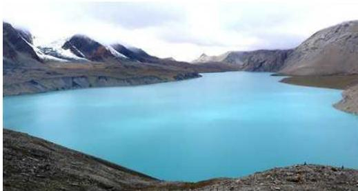
तिलिचो ताल, मनाङ
रहेको छ। यो मनोरम ताल मुस्ताङको साँधमा अन्नपूर्ण हिमालको उत्तरी भेक मनाङ जिल्लामा पर्दछ। यो तालको लम्बाइ करिब ४ कि.मि. तथा चौडाइ १.२ कि.मि. र गहिराइ करिब २०० मिटर रहेको छ। यस ताललाई तिरि-चो वा तिलिजो पनि भनिन्छ। यस तालको उत्तरतिर नीलगिरि र दक्षिणतर्फ अन्नपूर्ण हिमालय पर्दछ। हिउँ, जल तथा ढुङ्गाको सौन्दर्यमा खुलेको हुनाले यो ताल अत्यन्तै मनमोहक छ।
रारताल
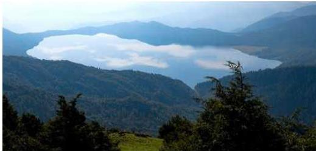
रारताल, मुगु
मुगु जिल्लामा अवस्थित यो ताल नेपालको सबैभन्दा ठुलो तालको रूपमा प्रसिद्ध छ। यसको लम्बाइ ५.२ कि.मि., चौडाइ २.४ कि.मि. र गहिराइ १६७ मिटर छ। यो समुद्री सतहदेखि २,९९० मिटर उचाइमा रहेको छ र यसलाई महेन्द्रताल पनि भनिन्छ।
नेपाल परिचय/५५
शे फोक्सुण्डो ताल
! 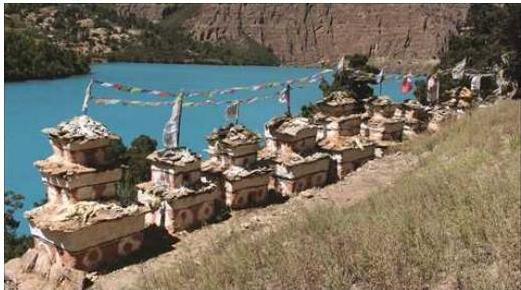
शे फोक्सुण्डो ताल, डोल्पा
शे फोक्सुण्डो ताल डोल्पा जिल्लामा अवस्थित छ। कान्जिरोवा हिमालको दक्षिण फेद तथा भेरीको मुख्य शाखा जगदुल्ला खोलाको सिरान कागमारा लेकको काखमा अवस्थित फोक्सुण्डो ताल समुद्री सहतदेखि करिब ३,६१३ मिटरको उचाइमा अवस्थित छ। यो ताल उत्तर दक्षिणतर्फ लामो एवम् पूर्व-पश्चिमतर्फ चौडा देखिन्छ। यो तालको लम्बाइ करिब ४.८२ कि.मि. तथा चौडाइ १.६१ कि.मि. र गहिराइ ६५० मिटर रहेको छ। यस तालको स्थानीय नाम ‘रिम्मो’ हो। यो ताल तीनकुने लाम्चो आकारको छ। यो ताल रारतालपछिको दोस्रो ठुलो र मुलुकको सबैभन्दा गहिरो ताल हो। यो तालको पानी अत्यन्तै चिसो भएको कारणले गर्दा यस तालमा कुनै किसिमका जीवात्मा पाईदैनन्। यस तालको निकासको रूपमा रहेको सुलीगाड खोलामा करिब १७६ मिटरको भरना पनि छ।
च्छो रोल्पा ताल
यो ताल दोलखा जिल्लामा पर्दछ। यो समुद्र सतहदेखि ४,५८० मिटरको उचाइमा अवस्थित छ। यस तालको लम्बाइ ३ कि.मि., चौडाइ ०.५ कि.मि.र गहिराइ १०० मिटर रहेको छ। यो तालमा करिब ८ करोड घनमिटर पानी रहेको अनुमान छ। विस्फोटन हुने खतरामा रहेको यस ताललाई विस्फोटनबाट बचाउन पानी बाहिर निकाल्न साइफन जडान गरिएको छ।
फेबाताल
कास्की जिल्लाको पोखरामा रहेको फेवातालको लम्बाइ ४.८ कि.मि.,चौडाइ १.५ कि.मि.र गहिराइ २४ मि. रहेको छ। यो तालमा माछापुच्छ्रेको छाया देखिने हुनाले बडो मनमोहक हुनाका साथै पर्यटकीय दृष्टिकोणले महत्वपूर्ण छ।
५६/नेपाल परिचय
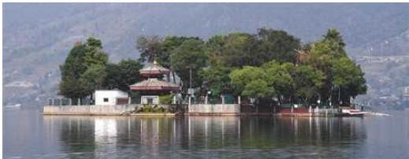
फेवाताल, कास्की
रानी पोखरी
राजा प्रताप मल्लले पुत्रशोकले पीडित आफ्नी रानी अनन्तप्रियालाई सान्त्वना दिलाउनका लागि रानी पोखरीको निर्माण गरेका थिए । यो पोखरीको लम्बाइ १८० मिटर, चौडाइ १४० मिटर र क्षेत्रफल भन्डै ३२ रोपनी छ । यस पोखरीको उत्तरपूर्व र उत्तरपश्चिम कुनामा भैरव, दक्षिणपूर्व कुनामा महालक्ष्मी र दक्षिणपश्चिम कुनामा सोह्रहाते गणेश स्थापना गरिएको छ ।
टौदह
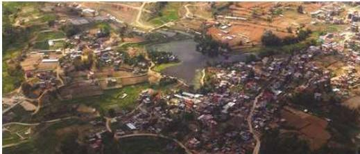
टौदह, काठमाडौँ
काठमाडौँ उपत्यका जलमय भएको अवस्थामा मञ्जुश्रीले खड्गले काटेर वा भगवान् श्रीकृष्णले चक्र प्रहार गरी चोभारको गल्छी काटेर पानी बाहिर पठाएपछि यहाँका नागहरू पनि बाहिर जानुपर्ने अवस्था सिर्जना भएकाले चोभार भूतखेल भन्ने ठाउँमा पोखरी बनाई सोही ठाउँमा नागहरूका राजा कर्कोटकलाई बस्ने ठाउँ दिइएकाले टौदहलाई कर्कोटक नागको वासस्थान पनि भनिन्छ । यो ८४ रोपनी जलक्षेत्रसहित ९६ रोपनी जग्गामा फैलिएको छ । दर्जनौं प्रकारका पक्षी यहाँ पाइने हुँदा चराहरूको अध्ययन र अनुसन्धानका लागि यो ठाउँ आकर्षक छ ।
नेपाल परिचय/४७
घोडाघोडी ताल
कैलाली जिल्लाअन्तर्गत महेन्द्र राजमार्गको उत्तरतर्फ हत्केलाको आकारमा १.५ हेक्टर क्षेत्रफलमा फैलिएको घोडाघोडी ताल रहेको छ। यस तालको बीचबीचमा चार-पाँचओटा थुम्काथुम्कीहरू बनेका छन्। यो तालको छेउमा घोडाघोडी मन्दिर रहेकाले सोही मन्दिरको आधारमा तालको नामकरण गरिएको हो। यो तालको छेउको जड्गलमा दुर्लभ पक्षी धनेशका अतिरिक्त अनेकौँ पशुपक्षीहरू पाइन्छन्। तालभित्र माछा, गोही, कछुवा आदि पाइन्छन्।
बेगनास ताल
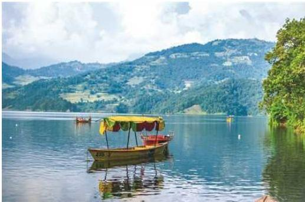
बेगनास ताल, कास्की
रूपातालसँगै पचभैया डाँडाको अर्को पाखामा बेगनास ताल रहेको छ। समुद्री सतहबाट ६७७ मिटर उचाइमा अवस्थित ७.५ मि. गाँहरो यो ताल २२५ हेक्टरमा फैलिएको छ।
गोसाइँकुण्ड
जनेपूर्णिमाको दिन मेला भर्न हजारौँ धर्मावलम्बी आउने साथै धार्मिक तीर्थस्थलको रूपमा समेत परिचित रहेको गोसाइँकुण्ड बागमती प्रदेशको रसुवा जिल्लामा पर्दछ। हिमाली कालो कडा चट्टानमा निर्मल जलयुक्त यो ताल समुद्री सतहबाट करिब ४,३६० मिटर उचाइमा रहेको छ। सूर्यकुण्ड (पूर्व) र उत्तरी भरनाबाट गोसाइँकुण्ड बन्न पुगेको हो।
रूपाताल
कास्की जिल्ला पोखराको पूर्वउत्तर भागमा पचभैया पर्वतको फेदमा रूपाताल छ। समुद्री
५८/नेपाल परिचय
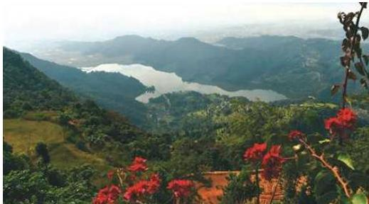
रूपाताल, कास्की
सतहबाट ७०१ मिटरको उचाइमा अवस्थित ४.५ मिटर गहिराइ भएको रूपाताल १२० हेक्टर क्षेत्रफलमा फैलिएको छ। यो तालमा हाल मत्स्यपालन गरी आर्थिक लाभ लिन थालिएको छ।
तालिका नं. १.१०
नेपालका केही प्रसिद्ध ताल, कृण्ड र पोखरीहरू
| क्र.सं. | ताल, कृण्ड, पोखरी | स्थान (जिल्ला) |
|---|---|---|
| १ | राराताल | मुगु |
| २ | फेवाताल | कास्की |
| ३ | रूपाताल | कास्की |
| ४ | मैदीताल | कास्की |
| ५ | बेगनास ताल | कास्की |
| ६ | शे फोक्सुण्डो वा रिम्म ताल | डोल्पा |
| ७ | बीसहजार ताल, नन्दभाउजू ताल | चितवन |
| ८ | गैडहवा ताल | रूपन्देही |
| ९ | लौसा ताल | रूपन्देही |
| १० | सग्रहवा ताल | रूपन्देही |
नेपाल परिचय/५९
| ११ | जाखिरा ताल | कपिलवस्तु |
|---|---|---|
| १२ | घोडाघोडी ताल | कैलाली |
| १३ | बुलबुले ताल | सुखैंत |
| १४ | जगदीशपुर ताल | कपिलवस्तु |
| १५ | रानी ताल | कञ्चनपुर |
| १६ | भिल्लिमिला ताल | कञ्चनपुर |
| १७ | तिरिछो (तिलिचो) ताल | मनाङ |
| १८ | खप्तड दह | अछाम |
| १९ | गोसाईकुण्ड | रसुवा |
| २० | इन्द्र सरोवर | मकवानपुर |
| २१ | टौदह | काठमाडौँ |
| २२ | रानीपोखरी | काठमाडौँ |
| २३ | नागदह | ललितपुर |
| २४ | गड्गासागर | धनुषा |
| २५ | महाराजा सुनवर्षी पोखरी | मोरङ |
| २६ | माइदिया पोखरी | पर्सा |
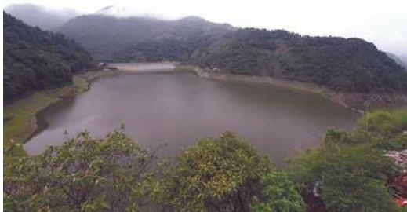
६०/नेपाल परिचय
| २७ | सुमाँ सरोवर | बभाङ |
|---|---|---|
| २८ | पन्चासे ताल | स्याङ्जा, पर्वत र कास्की |
| २९ | गिरी दह | जुम्ला |
| ३० | सुना दह | डोल्पा र बागलुङ जिल्लाको सीमा क्षेत्र |
| ३१ | गुफापोखरी, सभापोखरी | सङ्खुवासभा |
| ३२. | माईपोखरी | इलाम |
स्रोत : नेपाल परिचय, २०८१
१.५ नेपालको जनसङ्ख्या
नेपालमा वि. सं. १९६८ (सन् १९११) देखि जनगणना गर्ने कार्य सुरु भएको हो । त्यसपछि लगभग प्रत्येक १०-१० वर्षको अन्तरमा जनगणना कार्यक्रम सञ्चालन हुँदै आएको छ । वि.सं. १९९८ सम्म सञ्चालन भएका जनगणना सामान्य व्यक्ति गणना (Head Count) का रूपमा मात्र सीमित थिए भने वि.सं. २००९-०११ (सन् १९५२/५४) देखि सञ्चालन भएका जनगणनाहरू अन्तर्राष्ट्रिय रूपमा तुलनायोग्य आधुनिक (वैज्ञानिक) जनगणना मानिन्छन् । यस क्रममा वि.सं. २०६८ को राष्ट्रिय जनगणना नेपालको एघारौँ र जनगणनाको इतिहासमा १०० वर्षको जनगणना हो । असार ८ गतेलाई जनगणना दिवस (Census Day) मानिएको छ ।
राष्ट्रिय जनगणना २०७८ को राष्ट्रिय जनगणनाको नतिजामा नेपालको नयाँ नक्साअनुसारको सम्पूर्ण भू-भाग समेटिएको छ, जसअनुसार नेपालको जनसङ्ख्या २,९१,६४,५७८ पुगेको छ, जुन १० वर्षअघि (२०६८ साल) को जनसङ्ख्या २,६४,९४,५०४ को तुलनामा २६,७०,०७४ ले बढी हो । १० वर्षमा नेपालको जनसङ्ख्या १०.०८% ले बढेको देखिन्छ । विगत १० वर्षको सरदर वार्षिक वृद्धिदर (Exponential Growth) ०.९२% देखिन्छ । जुन अघिल्लो जनगणनामा १.३५% रहेको थियो ।
कुल जनसङ्ख्यामा १,४२,५३,५५१ जना पुरुष (४८.८७%) र १,४९,११,०२७ जना महिला (५१.१३%) रहेको छ । १० वर्षअघि २०६८ सालको जनगणनामा कुल जनसङ्ख्या २,६४,९४,५०४ जनामा पुरुष र महिलाको हिस्सा क्रमश: ४८.५% र ५१.५% थियो । हालको नतिजाअनुसार लैँजिक अनुपात (प्रति १०० महिलामा पुरुषको सङ्ख्या) ९५.५९ रहेको छ, जुन गत जनगणनामा ९४.१६ रहेको थियो ।
भौगोलिक क्षेत्रअनुसार कुल जनसङ्ख्याको वितरणमा तराई क्षेत्रको अंश २०६८ सालको तुलनामा २०७८ मा वृद्धि भएको देखिएको छ । २०६८ सालको जनगणनामा तराईमा कुल जनसङ्ख्याको ५०.२७% हिस्सा रहेकोमा २०७८ मा वृद्धि भई ५३.६१% पुगेको छ । हिमाली क्षेत्रमा कुल जनसङ्ख्याको ६.७३% अंश रहेकोमा २०७८ मा केही कम भई
नेपाल परिचय/६१
६.०८% रहेको देखिन्छ। त्यसैगरी पहाडी क्षेत्रमा २०६८ मा ४३.०१% अंश रहेकोमा हाल ४०.३१% मा भरेको छ।
१० वर्षको अवधिमा लैँजिक अनुपात २०६८ को जनगणनामा हिमाल, पहाड र तराईमा क्रमश: ९४, ९१ र ९७ रहेकोमा २०७८ सालको जनगणनाको नितिजासम्म आइपुग्दा क्रमश: ९७.२८, ९४.६५ र ९६.११ कायम हुन आएको छ। वार्षिक जनसङ्ख्या वृद्धिदर हिमाली क्षेत्रमा ऋणात्मक (-०.०५%), पहाडी क्षेत्रमा न्यून मात्रामा धनात्मक (०.३०%) र तराई क्षेत्रमा अन्य क्षेत्रको तुलनामा उच्च धनात्मक (१.५४%) देखिन्छ। जनसङ्ख्याको वृद्धिदर, भौगोलिक, क्षेत्रगत तथा जिल्लागत विवरण, ग्रामीण तथा सहरी जनसङ्ख्याको विवरण आदि तलका तालिकाहरूमा दिइएको छ।
तालिका नं. १.११
जनसङ्ख्या परिवर्तन र वृद्धिदर
| वर्ष (वि.सं.) | जनसङ्ख्या | अन्तर गणना सङ्ख्या | वार्षिक जनसङ्ख्या वृद्धिदर | जनसङ्ख्या दोषवर हुन लाग्ने अवधि (वर्ष) | सैद्धान्तिक अनुपात | जनसङ्ख्या | |
|---|---|---|---|---|---|---|---|
| वपिएको सङ्ख्या | प्रतिशत | ||||||
| २००९-११ | ८२,४६,६२५ | १९,७२९,७६ | ३१.४ | २.२८ | ३१ | ९६.८ | ४६ |
| २०१८ | ९४,१२,९९६ | ११४६३७१ | १४.० | १.६४ | ४२ | ९७.० | ६४ |
| २०२८ | १,१५,५५,९८३ | २१४२९८७ | २२.७७ | २.०५ | ३४ | १०१.४ | ७९ |
| २०३८ | १,५०,२२,८३९ | ३४६६८५६ | ३०.० | २.६२ | २६ | १०५.० | १०२ |
| २०४८ | १,८४,९१,०९७ | ३४६८२५८ | २३.०९ | २.०८ | ३३ | ९९.५ | १२६ |
| २०५८ | २,३१,५१,४२३ | ४६६०३२६ | २५.२ | २.२५ | ३१ | ९९.८ | १५७ |
| २०६८ | २,६४,९४,५०४ | ३३४३०८१ | १४.४४ | १.३५ | ५२ | ९४.१६ | १८० |
| २०७८ | २,९१,६४,५०८ | २६,७०,०७४ | १०.०८ | ०.९२ | - | ९५.५९ | १९८ |
स्रोत : राष्ट्रिय जनगणना, २०७८
तालिका नं. १.१२
भौगोलिक क्षेत्रअनुसार जनसङ्ख्या वितरण
| गणना वर्ष (वि.सं.) | हिमाल | % | पहाड | % | तराई | % | जम्मा |
|---|---|---|---|---|---|---|---|
| २००९-११ | - | - | - | - | २९,०६,६३७ | ३५.२ | ८२,५६,६२५ |
| २०१८ | - | - | - | - | ३४,२१,६९९ | ३६.४ | ९४,१२,९९६ |
| २०२८ | १,३८,६१० | ९.९ | ६०,७१,४०७ | ५२.५ | ४३,४५,९६६ | ३७.६ | १,१५,५५,९८३ |
६२/नेपाल परिचय
| २०३८ | ३,०२,८९६ | ८.७ | ७१,६३,११५ | ४७.७ | ६५,५६,८२८ | ४३.६ | १,५०,२२,८३९ |
|---|---|---|---|---|---|---|---|
| २०४८ | १४,४३,१३० | ७.८ | ८४,१९,८८९ | ४५.५ | ८६,२८,०७८ | ४६.७ | १,८४,९१,०९७ |
| २०५८ | १६,८७,८५९ | ७.३ | १,०२,५१,१११ | ४३.३ | १,१२,१२,४५३ | ४८.४ | २,३१,५१,४२३ |
| २०६८ | १७,८१,७९२ | ६.७३ | १,१३,९४,००७ | ४३.०१ | १,३३,१८,७०५ | ५०.२७ | २,६४,९४,५०४ |
| २०७८ | १७७२९४८ | ६.०८ | १,१७,५७,६२४ | ४०.३१ | १,५६,३५,००६ | ५३.६१ | २,९१,६४,५७८ |
स्रोत : राष्ट्रीय जनगणना, २०७८
तालिका नं. १.१३
भौगोलिक क्षेत्रअनुसार जनसङ्ख्या सूचक (२०७८)
| सूचक | हिमाल | पहाड | तराई |
|---|---|---|---|
| जम्मा जनसङ्ख्या | १७७२९४८ | ११७५७६२४ | १५६३४००६ |
| पुरुष | ८७४२६० | ५७१७२४७ | ७६६२०४४ |
| महिला | ८९८६८८ | ६०४०३७७ | ७९७१९६२ |
| लैड्जिगिक अनुपात | ९७.२८ | ९४.६५ | ९६.११ |
| वार्षिक जनसङ्ख्या वृद्धिदर | -०.०५ | ०.३० | १.५४ |
| जनघनत्व | ३४ | १९२ | ४६० |
स्रोत : राष्ट्रीय जनगणना, २०७८
तालिका नं. १.१४
जिल्लागत जनसङ्ख्या सूचक (२०७८)
| जिल्ला | जम्मा परिवार सङ्ख्या | जनसङ्ख्या | परिवारको औसत आकार | लैड्जिगिक अनुपात | जनघनत्व | वार्षिक जनसङ्ख्या वृद्धिदर प्रतिशत | ||
|---|---|---|---|---|---|---|---|---|
| जम्मा | पुरुष | महिला | ||||||
| ताप्लेजुड | २७७९८ | १२०५९० | ६०७७३ | ५९८१७ | ४.३४ | १०१.६० | ३३ | -०.५३ |
| सङ्खुवासभा | ३९१७३ | १५८०४१ | ७९५७९ | ७८४६२ | ४.०३ | १०१.४२ | ४५ | -०.०४ |
| सोलुखुम्बु | २६३१९ | १०४८५१ | ५२७४७ | ५२१०४ | ३.९८ | १०१.२३ | ३२ | -०.०९ |
| ओखलडुड्गा | ३४२९४ | १३९५५२ | ६८०८० | ७१४७२ | ४.०७ | ९५.२५ | १३० | -०.५६ |
| खोटाड | ४१७५० | १७५२९८ | ८६६३७ | ८८६६१ | ४.२० | ९७.७२ | ११० | -१.५६ |
| भोजपुर | ३८६३१ | १५७९२३ | ७८२११ | ७९७१२ | ४.०९ | ९८.१२ | १०५ | -१.३९ |
| धनकुटा | ३७६४८ | १५०५९९ | ७३८२४ | ७६७७५ | ४.०० | ९६.१६ | १६९ | -०.७८ |
| तेह्र्युम | २१८५७ | ८८७३१ | ४३५८१ | ४५१५० | ४.०६ | ९६.५२ | १३१ | -१.३० |
| पाँचघर | ४२४९५ | १७२४०० | ८५६८३ | ८६७१७ | ४.०६ | ९८.८१ | १३९ | -१.०२ |
| इलाम | ७०५३२ | २७९५३४ | १३९४३१ | १४०१०३ | ३.९६ | ९९.५२ | १६४ | -०.३६ |
नेपाल परिचय/६३
| जिल्ला | जम्मा परिवार सद्देश्या | जनसद्देश्या | परिवारको औसत आकार | लैड्जगिक अनुपात | जनघनत्व | वार्षिक जनसद्देश्या वृद्धिदर प्रतिशत | ||
|---|---|---|---|---|---|---|---|---|
| जम्मा | पृष्ठ | महिला | ||||||
| भ्यापा | २४५१४२ | ९९८०५४ | ४७८५०९ | ५१९५४५ | ४.०७ | ९२.१० | ६२१ | १.९७ |
| मोरड | २७२२८३ | ११४८१५६ | ५५७५१२ | ५९०६४४ | ४.२२ | ९४.३९ | ६१९ | १.६६ |
| सुनसरी | २१२५४५ | ९२६९६२ | ४४९०२३ | ४७७९३९ | ४.३६ | ९३.९५ | ७३७ | १.८६ |
| उदयपुर | ८१०८९ | ३४०७२१ | १६३७३८ | १७६९८३ | ४.२० | ९२.५२ | १६५ | ०.६८ |
| सप्तरी | १४६८५४ | ७०६२५५ | ३५१३६८ | ३५४८८७ | ४.८१ | ९९.०१ | ५१८ | ०.९६ |
| सिराहा | १४८५७१ | ७३९९५३ | ३६३७२४ | ३७६२२९ | ४.९८ | ९६.६८ | ६२३ | १.४३ |
| धनुषा | १७७१४३ | ८६७७४७ | ४२९८९३ | ४३७८५४ | ४.९० | ९८.१८ | ७३५ | १.३४ |
| महोलरी | १३७९०२ | ७०६९९४ | ३४९१५९ | ३५७८३५ | ५.१३ | ९७.५८ | ७०६ | १.१४ |
| सलांही | १६४८९३ | ८६२४७० | ४३५१३१ | ४२७३३९ | ५.२३ | १०१.८२ | ६८५ | १.०९ |
| रौतहट | १३७०३२ | ८१३५७३ | ४०८४०३ | ४०५१७० | ५.९४ | १००.८० | ७२३ | १.६३ |
| बारा | १३१२४० | ७६३१३७ | ३८९७८७ | ३७३३५० | ५.८१ | १०४.४० | ६४१ | १.०० |
| पसां | ११३०८० | ६५४४७१ | ३३८२८६ | ३१६१८५ | ५.७९ | १०६.९९ | ४८४ | ०.८२ |
| दोलखा | ४९५३८ | १७२७६७ | ८३७२० | ८९०४७ | ३.४९ | ९४.०२ | ७९ | -०.७४ |
| सिन्धुपान्चोक | ७१७७३ | २६२६२४ | १२९२०५ | १३३४१९ | ३.६६ | ९६.८४ | १०३ | -०.८८ |
| रसुवा | १११४० | ४६६८९ | २४०३५ | २२६५४ | ४.१९ | १०६.१० | ३० | ०.७२ |
| धादिड | ८३६४२ | ३२५७१० | १५९०४८ | १६६६६२ | ३.८९ | ९५.४३ | १६९ | -०.३० |
| नुवाकोट | ६८६७९ | २६३३९१ | १२८९९८ | १३४३९३ | ३.८४ | ९५.९९ | २३५ | -०.५० |
| काठमाडौँ | ५४४८६७ | २०४१५८७ | १०३५७२६ | १००५८६१ | ३.७५ | १०२.९७ | ५१६९ | १.५१ |
| भक्तपुर | १०८५०३ | ४३२१३२ | २१८४१८ | २१३७१४ | ३.९८ | १०२.२० | ३६३१ | ३.३५ |
| ललितपुर | १४०३६७ | ५५१६६७ | २७७१३१ | २७४५३६ | ३.९३ | १००.९५ | १४३३ | १.५८ |
| काभ्रेपलान्चोक | ९१४२८ | ३६४०३९ | १७८९०९ | १८५१३० | ३.९८ | ९६.६४ | २६१ | -०.४६ |
| रामेछाप | ४६४८९ | १७०३०२ | ८०८२४ | ८९४७८ | ३.६६ | ९०.३३ | ११० | -१.६७ |
| सिन्धुली | ६९३६४ | ३०००२६ | १४७०६५ | १५२९६१ | ४.३३ | ९६.१५ | १२० | ०.१२ |
| मकवानपुर | १०५७९२ | ४६६०७३ | २३३८१६ | २३२२५७ | ४.४१ | १००.६७ | १९२ | ०.९९ |
| चितवन | १७९३४५ | ७१९८५९ | ३५१७८९ | ३६८०७० | ४.०१ | ९५.५८ | ३२५ | २.०७ |
| गोरखा | ७१८२६ | २५१०२७ | ११८१५५ | १३२८७२ | ३.४९ | ८८.९२ | ७० | -०.७४ |
| मनाड | १५७२ | ५६५८ | ३१९२ | २४६६ | ३.६० | १२९.४४ | ३ | -१.३९ |
| मुस्ताड | ३६७४ | १४४५२ | ७९३४ | ६५१८ | ३.९३ | १२१.७२ | ४ | ०.६९ |
| म्याग्दी | २८८३० | १०७०३३ | ५२१५३ | ५४८८० | ३.७१ | ९५.०३ | ४७ | -०.५७ |
६४/नेपाल परिचय
| जिल्ला | जम्मा परिवार सङ्ख्या | जनसङ्ख्या | परिवारको औसत आकार | लैङ्गिक अनुपात | जनघनत्व | वार्षिक जनसङ्ख्या मुद्रित प्रतिशत | ||
|---|---|---|---|---|---|---|---|---|
| जम्मा | पुरुष | महिला | ||||||
| कास्की | १६०६५१ | ६०००५१ | २९२७९१ | ३०७२६० | ३.७४ | ९५.२९ | २९७ | १.९० |
| लमजुङ | ४४१७० | १५५८५२ | ७४०७७ | ८१७७५ | ३.५३ | ९०.५९ | ९२ | -०.७० |
| तनहुँ | ८८५८३ | ३२११५३ | १५००९४ | १७१०५९ | ३.६३ | ८७.७४ | २०८ | -०.०६ |
| नवलपरासी-पूर्व | ९३९२५ | ३७८०७९ | १७७८८७ | २००१९२ | ४.०३ | ८८.८६ | २६५ | १.८६ |
| स्याङ्जा | ६८९५९ | २५३०२४ | ११६६७८ | १३६३४६ | ३.६७ | ८५.५७ | २१७ | -१.२८ |
| पर्वत | ३६१३७ | १३०८८७ | ६१६७८ | ६९२०९ | ३.६२ | ८९.१२ | २६५ | -१.०९ |
| बागलुङ | ६४१५३ | २४९२११ | ११६१९४ | १३३०१७ | ३.८८ | ८७.३५ | १४० | -०.७२ |
| रुक्म-पूर्व | १२८८६ | ५६७८६ | २७५१६ | २९२७० | ४.४१ | ९४.०१ | ३४ | ०.६३ |
| रोम्या | ५२२२१ | २३४७९३ | १०९८७१ | १२४९२२ | ४.५० | ८७.९५ | १२५ | ०.४३ |
| प्युठान | ५६२०३ | २३२०१९ | १०४१३२ | १२७८८७ | ४.१३ | ८१.४३ | १७७ | ०.१६ |
| गुम्मी | ६६१२५ | २४६४९४ | ११२०२५ | १३४४६९ | ३.७३ | ८३.३१ | २१५ | -१.२३ |
| अधार्ख्यची | ४८४६५ | १७७०८६ | ८०६७२ | ९६४१४ | ३.६५ | ८३.६७ | १४८ | -१.०५ |
| पान्या | ६५०४९ | २४५०२७ | ११२७६१ | १३२२६६ | ३.७७ | ८५.२५ | १७८ | -०.६१ |
| नवलपरासी- पश्चिम | ८२७३८ | ३८६८६८ | १८८१८२ | १९८६८६ | ४.६८ | ९४.७१ | ५२७ | १.४७ |
| रुपन्देही | २३८३२० | ११२१९५७ | ५५०४७८ | ५७१४७९ | ४.७१ | ९६.३३ | ८२५ | २.३३ |
| कपिलवस्तु | १२१९४६ | ६८२९६१ | ३३४६८७ | ३४८२७४ | ५.६० | ९६.१० | ३९३ | १.७० |
| दाङ | १६२३१६ | ६७४९९३ | ३२०५७३ | ३५४४२० | ४.१६ | ९०.४५ | २२८ | १.९२ |
| बाँके | १२९३०७ | ६०३१९४ | २९६७४५ | ३०६४४९ | ४.६६ | ९६.८३ | २५८ | १.९७ |
| बर्दिया | १०६३२६ | ४५९९०० | २१६७६६ | २४३१३४ | ४.३३ | ८९.१५ | २२७ | ०.७२ |
| डोम्या | ९३९८ | ४२७७४ | २१३७१ | २१४०३ | ४.५५ | ९९.८५ | ५ | १.४७ |
| मुगु | १२४३९ | ६४५४९ | ३२३८१ | ३२१६८ | ५.१९ | १००.६६ | १८ | १.४९ |
| हुम्ला | ११२२८ | ५५३९४ | २७८८६ | २७५०८ | ४.९३ | १०१.३७ | १० | ०.८२ |
| जुम्ला | २४४३८ | ११८३४९ | ५९२२८ | ५९१२१ | ४.८४ | १००.१८ | ४७ | ०.८० |
| कालीकोट | २६७७९ | १४५२९२ | ७२२४५ | ७३०४७ | ५.४३ | ९८.९० | ८३ | ०.५७ |
| दैलेख | ५४६१० | २५२३१३ | १२०७७४ | १३१५३९ | ४.६२ | ९१.८२ | १६८ | -०.३५ |
| जाजरकोट | ३७४६६ | १८९३६० | ९४०६३ | ९५२९७ | ५.०५ | ९८.७१ | ८५ | ०.९६ |
| रुक्म-पश्चिम | ३७३०३ | १६६७४० | ८१०९१ | ८५६४९ | ४.४७ | ९४.६८ | १३७ | ०.६८ |
| सन्यान | ५४७०१ | २३८५१५ | ११४९८२ | १२३५३३ | ४.३६ | ९३.०८ | १६३ | -०.१६ |
| सुखेत | ९७८९३ | ४१५१२६ | १९९७४० | २१५३८६ | ४.२४ | ९२.७४ | १६९ | १.६२ |
| बाजुरा | २८०६५ | १३८५२३ | ६७०७० | ७१४५३ | ४.९४ | ९३.८७ | ६३ | ०.२५ |
नेपाल परिचय/६५
| जिल्ला | जम्मा परिवार सङ्ख्या | जनसङ्ख्या | परिवारको औसत आकार | लैङ्गिक अनुपात | जनघनत्व | वार्षिक जनसङ्ख्या वृद्धिदर प्रतिशत | ||
|---|---|---|---|---|---|---|---|---|
| जम्मा | पुरुष | महिला | ||||||
| बभाङ | ३८०४८ | १८९०८५ | ८८४७० | १००६१५ | ४.९७ | ८७.९३ | ५५ | -०.३० |
| दाचुंला | २८४१७ | १३३३१० | ६४४२४ | ६८८८६ | ४.६९ | ९३.५२ | ५७ | ०.०० |
| बैतडी | ४९४२८ | २४२१५७ | ११३८६४ | १२८२९३ | ४.९० | ८८.७५ | १५९ | -०.३४ |
| डडेल्धुरा | ३११९३ | १३९६०२ | ६५८९३ | ७३७०९ | ४.४८ | ८९.४० | ९१ | -०.१७ |
| डोटी | ४५१८२ | २०४८३१ | ९३६०४ | १११२२७ | ४.५३ | ८४.१६ | १०१ | -०.३२ |
| अछाम | ४९५९५ | २२८८५२ | १०५३१९ | १२३५३३ | ४.६१ | ८५.२६ | १३६ | -१.१३ |
| कैलाली | १९५९५७ | ९०४६६६ | ४३३४५६ | ४७१२१० | ४.६२ | ९१.९९ | २८० | १.४८ |
| कञ्चनपुर | १११२१७ | ५१३७५७ | २४०६८६ | २७३०७१ | ४.६२ | ८८.१४ | ३१९ | १.२५ |
स्रोत : राष्ट्रिय जनगणना, २०७८
तालिका नं. १.१५
भौगोलिक क्षेत्र र प्रदेशअनुसारको जनसङ्ख्या सूचक (२०७८)
| क्षेत्र | जम्मा परिवार सङ्ख्या | जनसङ्ख्या | परिवारको औसत आकार | लैङ्गिक अनुपात | जनघनत्व | वार्षिक जनसङ्ख्या वृद्धिदर प्रतिशत | ||
|---|---|---|---|---|---|---|---|---|
| जम्मा | पुरुष | महिला | ||||||
| नेपाल | ६६६६९३७ | २९१६४५७८ | १४२५३५५१ | १४९११०२७ | ४.३७ | ९५.५९ | १९८ | ०.९२ |
| सहरी / ग्रामीण | ||||||||
| नगरपालिका | ४४७९६६२ | १९२९६७८८ | ९४५४५४५ | ९८४२२४३ | ४.३१ | ९६.०६ | ३७३ | १.३६ |
| गाउँपालिका | २१८७२७५ | ९८६७७९० | ४७९९००६ | ५०६८७८४ | ४.५१ | ९४.६८ | १०५ | ०.११ |
| भौगोलिक क्षेत्र | ||||||||
| हिमाल | ४०९७९९ | १७७२९४८ | ८७४२६० | ८९८६८८ | ४.३३ | ९७.२८ | ३४ | -०.०५ |
| पहाड | २९४९०५६ | ११७५७६२४ | ५७१७२४७ | ६०४०३७७ | ३.९९ | ९४.६५ | १९२ | ०.३० |
| तराई | ३३०८०८२ | १५६३४००६ | ७६६२०४४ | ७९७१९६२ | ४.७३ | ९६.११ | ४६० | १.५४ |
| प्रदेश | ||||||||
| कोशी प्रदेश | ११९१५५६ | ४९६१४१२ | २४१७३२८ | २५४४०८४ | ४.१६ | ९५.०२ | १९२ | ०.८६ |
| मधेश प्रदेश | ११५६७१५ | ६११४६०० | ३०६५७५१ | ३०४८८४९ | ५.२९ | १००.५५ | ६३३ | १.१९ |
| बागमती प्रदेश | १५७०९२७ | ६११६८६६ | ३०४८६८४ | ३०६८१८२ | ३.८९ | ९९.३६ | ३०१ | ०.९७ |
| गण्डकी प्रदेश | ६६२४८० | २४६६४२७ | ११७०८३३ | १२९५५९४ | ३.७२ | ९०.३७ | ११५ | ०.२५ |
| लुम्बिनी प्रदेश | ११४१९०२ | ५१२२०७८ | २४५४४०८ | २६६७६७० | ४.४९ | ९२.०१ | २३० | १.२४ |
| कर्णाली प्रदेश | ३६६२५५ | १६८८४१२ | ८२३७६१ | ८६४६५१ | ४.६१ | ९५.२७ | ६० | ०.७० |
६६ / नेपाल परिचय
| क्षेत्र | जम्मा परिवार सङ्ख्या | जनसङ्ख्या | परिवारको औसत आकार | लैङ्गिक अनुपात | जनघनत्व | वार्षिक जनसङ्ख्या मुद्रित प्रतिशत | ||
|---|---|---|---|---|---|---|---|---|
| जम्मा | पृष्ठ | महिला | ||||||
| सुदूरपश्चिम प्रदेश | ५७७१०२ | २६९४७८३ | १२७२७८६ | १४२१९९७ | ४.६७ | ८९.५१ | १३८ | ०.५२ |
स्रोत : राष्ट्रिय जनगणना, २०७८
१.६ नेपालको राष्ट्रिय निकुञ्ज, वन्यजन्तु आरक्ष, सिकार आरक्ष, संरक्षण क्षेत्र तथा नेपालमा संरक्षित जीवजन्तुहरू
तालिका नं. १.१६ राष्ट्रिय निकुञ्ज
| क्र. सं. | राष्ट्रिय निकुञ्जको नाम | स्थापना मिति | भौगोलिक क्षेत्र (जिल्ला) | क्षेत्रफल (वर्ग कि.मि.) | पाइने प्रसिद्ध जनावर तथा प्रमुख प्राकृतिक सम्पदाहरू |
|---|---|---|---|---|---|
| १ | चितवन राष्ट्रिय निकुञ्ज | २०३० | चितवन, मकवानपुर, पर्सा, नवलपरासी (पूर्व) | ९५२.६३ | एकसिंगे गैंडा, पाटे बाघ, चितुवा, रतुवा, चितल, घडियाल गोही, मगर गोही, सोंस, अजिजर, गौरी गाई, काठेभालु, लगुना, चौसिंगा तथा विविध जातका चराहरू (नेपालको घोषित पहिलो राष्ट्रिय निकुञ्ज)। २०३०।०६।०४ गतेको राजपत्रअनुसार ९३२ वर्ग कि.मि. क्षेत्रफल कायम भएकोमा मिति २०७३।०७।०१ गतेको राजपत्रको सूचना अनुसार चितवन राष्ट्रिय निकुञ्जको क्षेत्रफल ९५२.६३ वर्ग कि.मि. कायम भएको । |
| २ | लाइटाङ राष्ट्रिय निकुञ्ज | २०३२ | रसुवा, नुवाकोट र सिन्धुपाल्चोक | १७१० | चितुवा, हाब्रे (रातो पान्डा) कस्तुरी मृग, रतुवा, भारल, घोरल, थार, जड्गली भेडा, भालु, लड्गुर बाँदर (जैविक विविधताका दूषित कोणले विश्वकै अग्रणी स्थान)। २०३२।१२।०९ गतेको राजपत्रमा सूचना प्रकाशित भएको । |
नेपाल परिचय/६७
| ३ | सगरमाथा राष्ट्रिय निकुञ्ज | २०३२ | सोलुखुम्बु | १९४८ | कस्तुरी मृग, हिमाली भालु, डाँफे, चिलिमे, कालिज, लालचुच्चे, हिउँचितुवा, थार । (सर्वाधिक उचाइमा रहेको राष्ट्रिय निकुञ्ज) । २०३३।०४।०४ गतेको राजपत्रमा सूचना प्रकाशित भएको । |
|---|---|---|---|---|---|
| ४ | रारा राष्ट्रिय निकुञ्ज | २०३२ | मुगु, जुम्ला | १०६ | हिमाली भालु, थार, घोरल, बैंदेल र विविध जातका चराचुरुही (सबैभन्दा सानो राष्ट्रिय निकुञ्ज) । २०३४।०२।०४ गतेको राजपत्रमा सूचना प्रकाशित भएको । |
| ५ | बर्दिया राष्ट्रिय निकुञ्ज | २०३२ | बर्दिया | ९६८ | बाघ, भालु, चितुवा, कृष्णसार, बाहिसङ्गे, घोडगदाह, जरायो, जड्गली हाती, गैँडा, गोही, सौस तथा विविध जातका चराहरू रहने । २०३२।११।२५ गतेको राजपत्रको सूचनाअनुसार शाही कर्णाली सिकार आरक्ष रूपमा घोषणा गरिएको । २०४१।०५।११ गतेको राजपत्रको सूचनाअनुसार शाही बर्दिया राष्ट्रिय निकुञ्जको रूपमा नामकरण भई क्षेत्रफल ९६८ वर्ग कि.मि. कायम भएको । |
| ६ | शे फोक्सुण्डो राष्ट्रिय निकुञ्ज | २०४० | डोल्पा, मुगु | ३५५५ | हिउँचितुवा, तिब्बती खरायो, नाउर, निलो भेडा, कस्तुरी, मृग, जड्गली याक, ब्वाँसो, तिब्बती गधा, चिरु । (शे फोक्सुण्डो ताल) (नेपालको सबैभन्दा ठुलो राष्ट्रिय निकुञ्ज) । २०४१।०४।२२ गतेको राजपत्रमा सूचना प्रकाशित भएको । |
| ७ | खप्तड राष्ट्रिय निकुञ्ज | २०४२ | बभकङ, बाजुरा, डोटी, अख्खाम | २२५ | रतुवा, कस्तुरी मृग, घोरल, चरीबाघ, चितुवा, जड्गली कुकुर, वनबिरालो, साथै डाँफे, मुनाल जस्ता चराहरू पाइने । २०४३।०३।०९ गतेको राजपत्रमा सूचना प्रकाशित भएको । |
६८/नेपाल परिचय
कृष्णसार
| ८ | मकालु बरुण राष्ट्रिय निकुञ्ज | २०४९ | सङ्खुवासभा र सोलुखुम्बु | १५०० | विश्वका दुर्लभ वनस्पति र हिमाली कालो भालुजस्ता प्राणीहरू (पहिले नदेखिएको छकेभिकै रेन बेब्लर, ओलिफ ग्राउन्ड, वार्वलभर), २०४८।०८।०२ गतेको राजपत्रमा सूचना प्रकाशित भएको । |
|---|---|---|---|---|---|
| ९ | शिवपुरी नागार्जुन राष्ट्रिय निकुञ्ज | २०५८ | काठमाडौँ, नुवाकोट, सिन्धुपाञ्चोक र धादिङ | १५९ | काठमाडौँमा दैनिक १० लाख क्युबिक लिटर पानी उपलब्ध हुने साथै, ध्वाँसे चितुवा, आसामी बाँदर, सालक तथा अन्य विविध जातका जीवजन्तु पाइने । २०५८।११।०६ गतेको राजपत्रको सूचनाअनुसार यस निकुञ्जको क्षेत्रफल १४५ वर्ग कि.मि. रहेकामा २०६५।११।१२ गतेको राजपत्रको सूचनाअनुसार यस निकुञ्जको क्षेत्रफल १५९ वर्ग कि.मि. कायम भएको । |
नेपाल परिचय/६९
| १० | बाँके राष्ट्रिय निकुञ्ज | २०६७ | बाँके, सल्यान, दाङ | ५५० | बाघ, हुँडार, सालक, चौसिङ्गा तथा विविध जातका पक्षीहरू । २०६७।०३।२८ गतेको राजपत्रअनुसार घोषणा गरिएको । |
|---|---|---|---|---|---|
| ११ | शुक्लाफाँटा राष्ट्रिय निकुञ्ज | २०३१ | कञ्चनपुर | ३०५ | बाह्रसिङ्गे, एकसिङ्गे गैँडा, हाती, पाटेबाघ, भालु, चितवा, लघुना, गोही, एवम् चराचुरुशी । २०३३।०४।०४ गतेको राजपत्रको सूचनाअनुसार शुक्लाफाँट वन्यजन्तु र आरक्षको रूपमा घोषणा भएकोमा २०७३/११/१९ गतेको सूचनाअनुसार राष्ट्रिय निकुञ्जको रूपमा स्थापित । |
| १२ | पर्सा राष्ट्रिय निकुञ्ज | २०४० | चितवन, मकवानपुर र पर्साका केही भाग | ६२७.३९ | सालक, हुँडार, चौसिंगा, पाटेबाघ, एकसिङ्गे गैँडा, गौरी गाई, अजिङ्गर, सुनगोहोरो । २०४१।०२।०८ गतेको राजपत्रको सूचनाअनुसार पर्सा वन्यजन्तु आरक्षको रूपमा घोषणा भएकोमा नेपाल सरकार मन्त्रिपरिषद्को मिति २०७४/०२/१९ गतेको निर्णयअनुसार राष्ट्रिय निकुञ्जको रूपमा स्थापित) |
| जम्मा | ११,८०६.०२ |
स्रोत : नेपाल परिचय, २०८१
तालिका नं. १.१७ सिकार आरक्ष
| क्र. सं. | सिकार आरक्ष | स्थापना वर्ष | क्षेत्रफल (वर्ग कि.मि.) | भौगोलिक क्षेत्र | पाइने प्रसिद्ध जनावरहरू र राजपत्रनुसार घोषणा विवरण |
|---|---|---|---|---|---|
| १ | ढोरपाटन सिकार आरक्ष | २०४४ | १३२५ | रुकुम, बागलुङ तथा म्याग्दीको केही भाग | नाउर, भारल, थार, हिमाली भालु निलो भेडा आदि । २०४४।०१।१४ गतेको राजपत्रमा सूचना प्रकाशित भएको । |
७०/नेपाल परिचय
तालिका नं. १.१८ संरक्षण क्षेत्र
| क्र. सं. | संरक्षण क्षेत्र | स्थापना वर्ष | क्षेत्रफल (वर्ग कि. मि.) | भौगोलिक अवस्थिति क्षेत्र | पाइने प्रसिद्ध जनावरहरू र राजपत्रअनुसार घोषणा विवरण |
|---|---|---|---|---|---|
| १ | अन्नपूर्ण | २०४९ | ७६२९ | लमजुङ, मनाङ मुस्ताङ, म्याग्दी, कास्की | हिमाली दुर्लभ जीवजन्तु, वनस्पति तथा सांस्कृतिक सम्पदाहरूको संरक्षण । २०४९।०४।०५ गतेको राजपत्रअनुसार घोषणा गरिएको । |
| २ | कञ्चनजइघा | २०५४ | २०३५ | ताप्लेजुङ | हिउँ चितुवा, कस्तुरी मुग, हिमाली खैरो भालु, ब्वाँसो, नाउर, घोरल, हाब्रे, चरीबाघ आदि । २०५४।०४।०६ गतेको राजपत्रअनुसार घोषणा गरिएको । |
| ३ | मनास्लु | २०५५ | १६६३ | गोरखा | हिउँचितुवा, कस्तुरी, मुग , नाउर, भारतलगायत विभिन्न चरा र सर्प जातिहरू । २०५५।०९।१३ गतेको राजपत्रअनुसार घोषणा भएको । |
| ४ | कृष्णसार | २०६५ | १६.९५ | बर्दिया | कृष्णसार, हुँडार अजिङ्गर । २०६५।१२।०३ गतेको राजपत्रअनुसार घोषणा गरिएको । |
| ५ | गौरीशङ्कर | २०६६ | २१७९ | रामेछाप, दोलखा र सिन्धुपाल्चोक | हिउँचितुवा, कस्तुरी मुग, चरीबाघ, डाँफे, मुनाल आदि । २०६६।० ९।२७ गतेको राजपत्रअनुसार घोषणा गरिएको । |
| ६ | अपि-नाम्पा | २०६७ | १९०३ | दार्चुला | हिउँ चितुवा, घोरल, कालो भालु, थार, जटामसी, यासाँगुम्बा, पाँचऔँले आदि । २०६७।०३।२८ गतेको राजपत्रअनुसार घोषणा गरिएको । |
स्रोत : नेपाल परिचय, २०८१
नेपाल परिचय/७१
तालिका नं. १.१९ मध्यवर्ती क्षेत्रहरू
| क्र. सं. | मध्यवर्ती क्षेत्र | घोषित वर्ष | क्षेत्रफल (वर्ग कि.मि.) | राजपत्र अनुसार घोषणा विवरण |
|---|---|---|---|---|
| १ | चितवन राष्ट्रिय निकुञ्ज | २०५३ | ७२९.३७ | २०५३।०६।१७ गतेको राजपत्र अनुसार चितवन राष्ट्रिय निकुञ्जको मध्यवर्ती क्षेत्रको क्षेत्रफल ७५० वर्ग कि.मि. घोषणा गरिएकोमा २०७२।०७।०१ गतेको राजपत्र अनुसार सो क्षेत्रफल ७२९.३७ वर्ग कि.मि. कायम गरिएको । |
| २ | लाडटाड राष्ट्रिय निकुञ्ज | २०५५ | ४२० | २०५५।०१।१४ गतेको राजपत्र अनुसार घोषणा गरिएको । |
| ३ | सगरमाथा राष्ट्रिय निकुञ्ज | २०५८ | २७५ | २०५८।०९।१७ गतेको राजपत्र अनुसार घोषणा गरिएको । |
| ४ | रारा राष्ट्रिय निकुञ्ज | २०६३ | १९८ | २०६३।०६।०९ गतेको राजपत्र अनुसार घोषणा गरिएको । |
| ५ | बर्दिया राष्ट्रिय निकुञ्ज | २०५३ | ५०७ | २०५३।०८।१७ गतेको राजपत्र अनुसार बर्दिया राष्ट्रिय निकुञ्जको वरिपरिको ३२७ वर्ग कि.मि. क्षेत्रफल भएको क्षेत्रलाई बर्दिया राष्ट्रिय निकुञ्जको मध्यवर्ती क्षेत्र घोषणा गरिएकोमा २०६७।०४।३१ गतेको राजपत्र अनुसार सो मध्यवर्ती क्षेत्र विस्तार गरी ५०७ वर्ग कि.मि. कायम गरिएको । |
| ६ | शो फोक्सुण्डो राष्ट्रिय निकुञ्ज | २०५५ | १३४९ | २०५५।०७।०२ गतेको राजपत्र अनुसार घोषणा गरिएको । |
| ७ | खप्तड राष्ट्रिय निकुञ्ज | २०६३ | २२५ | २०६३।०७।१३ गतेको राजपत्र अनुसार घोषणा गरिएको । |
| ८ | शिवपुरी नागार्जुन राष्ट्रिय निकुञ्ज | २०७२ | ११८.६१ | २०७२।१२।१५ गतेको राजपत्र अनुसार घोषणा गरिएको । |
| ९ | बाँके राष्ट्रिय निकुञ्ज | २०६७ | ३४३ | २०६७।०३।२८ गतेको राजपत्र अनुसार घोषणा गरिएको । |
७२/नेपाल परिचय
| १० | मकालु वरुण राष्ट्रिय निकुञ्ज | २०५५ | ८३० | २०५५।१०।२५ गतेको राजपत्रअनुसार घोषणा गरिएको । |
|---|---|---|---|---|
| ११ | शुक्लाफाँटा राष्ट्रिय निकुञ्ज | २०६१ | २४३.५ | २०६१।०२।०९ गतेको राजपत्रअनुसार घोषणा गरिएको । |
| १२ | पर्सा राष्ट्रिय निकुञ्ज | २०६२ | २८५.३ | २०६२।०३।१३ गतेको राजपत्रअनुसार घोषणा भएको र २०७२।०५।०७ गतेको राजपत्रअनुसार मध्यवर्ती क्षेत्रको सिमाना हेरफेर भई पर्सा वन्यजन्तु आरक्षको मध्यवर्ती क्षेत्रको क्षेत्रफल २८५.३ वर्ग कि.मि. कायम भएको । |
| १३ | कोशीटप्पु वन्यजन्तु आरक्ष | २०६१ | १७३ | २०६१।०५।१४ गतेको राजपत्रअनुसार घोषणा गरिएको । |
| जम्मा | ५६८७.७८ | |||
| कुल जम्मा क्षेत्रफल (वर्ग कि.मि.) | ३४,४१९.७५ |
स्रोत : नेपाल परिचय, २०८१
तालिका नं. १.२०
वन्यजन्तु आरक्ष
| क्र.सं. | वन्यजन्तु आरक्ष | स्थापना वर्ष | क्षेत्रफल (वर्ग कि.मि.) | भौगोलिक क्षेत्र | पाइने प्रसिद्ध जनावरहरू |
|---|---|---|---|---|---|
| १ | कोसीटप्पु वन्यजन्तु आरक्ष | २०३२ | १७५ | सुनसरी | दुर्लभ अर्ना, घडियाल तथा मगरगोही, सोस तथा विभिन्न माछा तथा चराचुरुङ्गी । |
स्रोत : नेपाल परिचय, २०८१
तालिका नं. १.२१
रामसार साइटमा सूचीकृत नेपालका सीमसार क्षेत्रहरू
| क्र. सं. | नाम | क्षेत्रफल (हे.) | सूचीकृत मिति (इस्वी संवत्) | जिम्मेवार स्थानीय व्यवस्थापन निकाय |
|---|---|---|---|---|
| १ | कोशीटप्पु | १७५०० | १९८७-१२-१७ | कोशीटप्पु वन्यजन्तु आरक्ष |
नेपाल परिचय/७३
| २ | बीस हजारी ताल | ३२०० | २००३-०८-१३ | चितवन राष्ट्रिय निकुञ्ज |
|---|---|---|---|---|
| ३ | घोडाघोडी ताल क्षेत्र | २५६३ | २००३-०८-१३ | जिल्ला वन कार्यालय, कैलाली |
| ४ | जगदीशपुर जलाशय | २२५ | २००३-०८-१३ | जिल्ला वन कार्यालय, कपिलवस्तु |
| ५ | रारताल | १५८३ | २००७-०९-२३ | रारा राष्ट्रिय निकुञ्ज |
| ६ | फोक्सुन्डो ताल | ४९४ | २००७-०९-२३ | से-फोक्सुन्डो राष्ट्रिय निकुञ्ज |
| ७ | गोसाईकुण्ड तथा आसपासका तालहरू | १०३० | २००७-०९-२३ | लाडटाड राष्ट्रिय निकुञ्ज |
| ८ | गोक्यो तथा आसपासका तालहरू | ७७७० | २००७-०९-२३ | सगरमाथा राष्ट्रिय निकुञ्ज |
| ९ | माईपोखरी | ९० | २००८-१०-२८ | जिल्ला वन कार्यालय, इलाम |
| १० | पोखरा उपत्यकाका (Pokhara valley Lake cluster) तालहरू | २६१०६ | २०१६-०२-०२ | जिल्ला समन्वय समिति, कास्की जिल्ला वन कार्यालय, कास्की |
स्रोत : नेपाल परिचय, २०८१
तालिका नं. १.२२
संरक्षित स्नतधारी वन्यजन्तु
| १. | आसामी बाँदर (Macaca Assamensis) |
|---|---|
| २. | सालक (Manis pentadactyla) र (Manis crassicaudata) |
| ३. | हिस्पिड खरायो (Caprolagus hispidus) |
| ४. | सोंस (Platanista Gangetica) |
| ५. | ब्वाँसो (Canis lupus) |
| ६. | हिमाली खैरो भालु (Ursus arctos) |
| ७. | हाब्रे (Ailurus fulgens) |
| ८. | लिडसाड/सिलु (Prionodon pradicolor) |
| ९. | चरी बाघ (Prionailurus bengalensis) |
| १०. | लिडकस (Felis lynx) |
७४/नेपाल परिचय
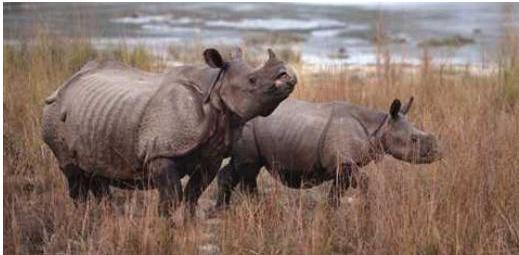
एकसिङ्गे गैंडा
| ११. | ध्वाँसे चितुवा (Pardofelis nebulosa) |
|---|---|
| १२. | बाघ (Panthera tigris tigris) |
बाघ
| १३. | हिउँचितुवा (Panthera uncia) |
|---|---|
| १४. | जङ्गली हाती (Elephas maximus) |
| १५. | एकसिञ्जे गैंडा (Rhinoceros unicornis) |
| १६. | पुड्के बैंदेल (Sus salvanius) |
| १७. | कस्तुरी मृग (Moschus chrysogaster) |
नेपाल परिचय/७५
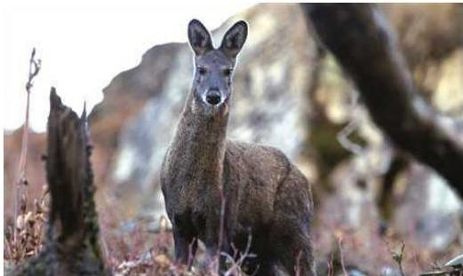
कस्तुरी मूग
| १८. | बाहसिका (Cervus duvauceli) |
|---|---|
| १९. | गौरीगाई (Bos gaurus) |
| २०. | जड़गली याक (Bos mutus) |
| २१. | अर्ना (Bubalus arnee) |
| २२. | नायन (Ovis ammon) |
| २३. | चिरु (Pantholops hodgsoni) |
| २४. | कृष्णसार (Antilope cervicapra) |
| २५. | चौका (Tetracerus quadricornis) |
| २६. | हुँडार (Hyaena hyaena) |
संरक्षित पक्षी
| १. | कालो गरुड (Ciconia nigra) |
|---|---|
| २. | सेतो गरुड (Ciconia ciconia) |
| ३. | सारस (Grus antigone) |
| ४. | चीर कालिज (Catreus wallichii) |
| ५. | डाँफे (Lophophorus impejanus) |
| ६. | मुनाल (Tragop-an satyra) |
७६/भेपाल परिचय
नेपाल परिचय/७७
| ७. | खर मुजुर (Houbarpsis bengalensis) |
|---|---|
| ८. | सानो खर मुजुर (Sypheotides indica) |
| ९. | राज धनेश (Buceros bicornis) |
संरक्षित घखने बन्चजन्तु
| १. | अजिङ्गर (Python molurus) |
|---|---|
घडियाल गोही
| २. | घडियाल गोही (Vavialis gangeticus) |
|---|---|
| ३. | सुन गोहोरो (Varanus flavescens) |
स्रोत: राष्ट्रिय निकुञ्ज विभागद्वारा प्रकाशित नेपालका संरक्षित क्षेत्रहरू अनुसूची १ र २ पेज ७२-७९, २०७४
यासांगुम्बा
नेपालको बहुउपयोगी एवम् बहुमूल्य जडीबुटीहरूमध्ये यासांगुम्बा पनि एक हो। लामा भाषामा यासांको अर्थ आधा जीव र गुम्बाको अर्थ आधा बिरुवा वा बुटी (Herbs) भन्ने हुन्छ। यसको वैज्ञानिक नाम Cordyceps वा Cordyceps Sinensis हो, जसमा Cord ले Club र Ceps ले Head को अर्थ दिन्छ। यसलाई क्याटरपिलर फइगस (Caterpiller Fungus) पनि भनिन्छ। साथै, औषधिमूलक च्याउ, फइगल बुटी, हिँड्ने बुटी (Walking Herb) जस्ता नामले पनि यासांगुम्बालाई चिनाउने गरिन्छ। वास्तवमा यासांगुम्बा आधा किरा र आधा फइगस (Half Insect and Half Fungus) हो।
यासांगुम्बा नेपालको ३००० देखि ५००० मिटरसम्मको उचाइमा पाइन्छ। हिमाली भूभागबाट हिँउ पल्लने क्रमसँगै यासांगुम्बा जमिनमाथि देखा पर्न थाल्छ। सुरुमा लाभांको रूपमा देखा पर्ने यासांगुम्बा पछि फइगसमा रूपान्तरण हुन्छ। यासांगुम्बा एक शक्तिवर्धक जडीबुटी हो। यो औषधिको रूपमा प्रयोग हुन्छ। यासांगुम्बा ढाडदुखाइ, रक्तअल्पता, थकान, दम, क्यान्सर, अनिद्रा, रक्तचाप, एलर्जीजस्ता रोगका लागि उपयोगी मानिन्छ।
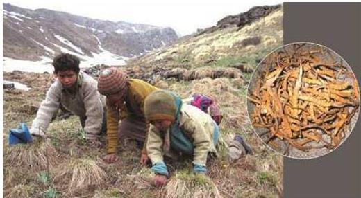
यासाँगुम्बा सङ्कलन गर्दै स्थानीय
यसले फोक्सो, मृगौला, मुटु, कलेजोजस्ता शरीरका अंगहरूलाई स्वस्थकर राखी रोगप्रतिरोधात्मक क्षमतालाई समेत बढाउँछ भन्ने विश्वास गरिन्छ ।
नेपालको पूर्वदेखि पश्चिम उत्तरी भेकमा पाइने यासाँगुम्बा अत्यन्त गुणस्तरीय मानिन्छ । अत्यन्त महँगो मूल्यमा व्यापार हुनाले यसलाई नेपालको Yellow living Gold को रूपमा समेत पहिचान दिन थालिएको छ । यासाँगुम्बा सङ्कलन अहिले अत्यन्त प्रतिस्पर्धी बनेको छ । यासाँगुम्बा नेपालको उच्च हिमाली भेकमा बसोबास गर्नेहरूका लागि जीवन निर्वाहको स्रोत त बनेको छ नै साथसाथै यो नेपालको महत्वपूर्ण आयस्रोत बन्न सक्ने उच्च सम्भावना छ ।
-
- +
७८/नेपाल परिचय
परिच्छेद : दुई